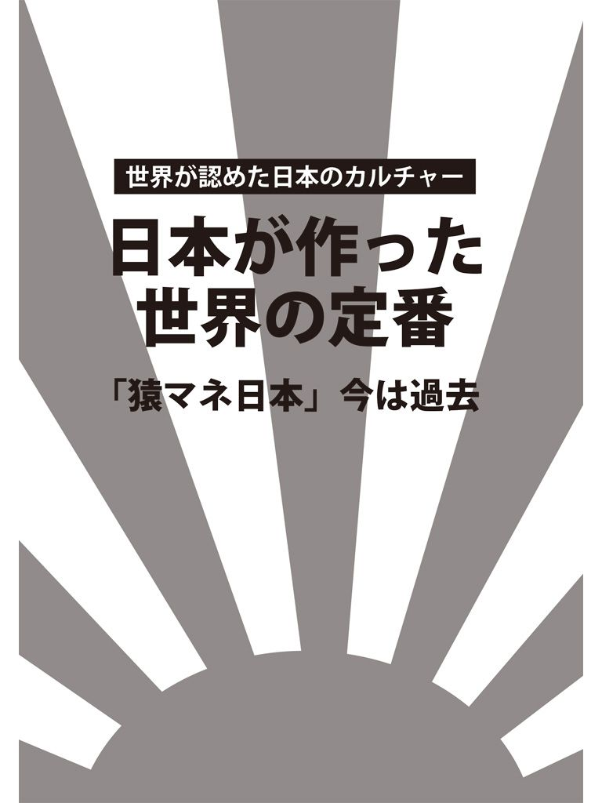
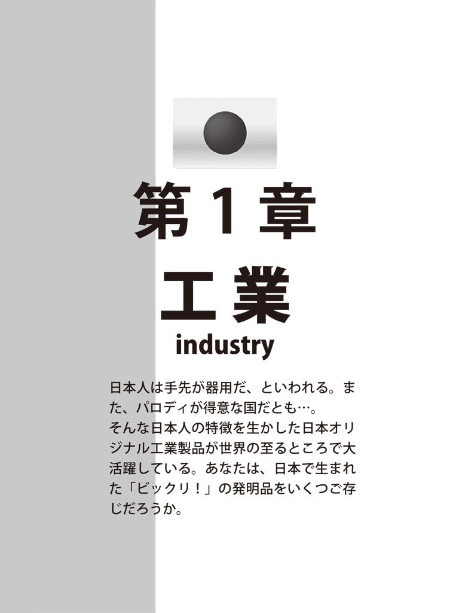
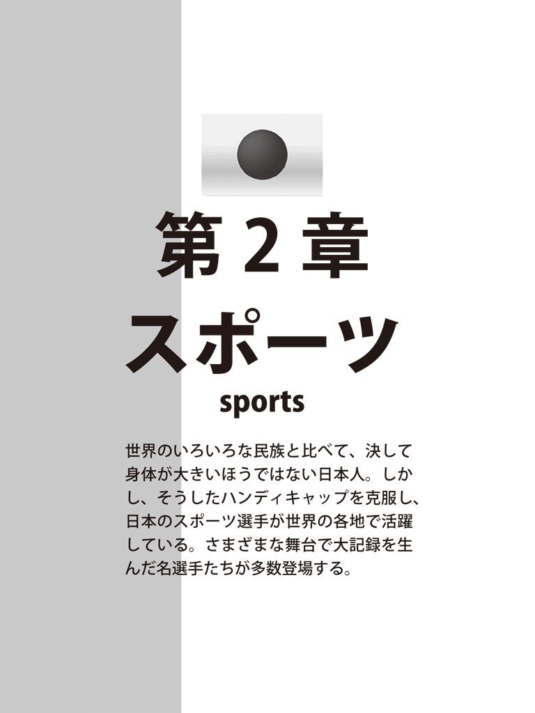
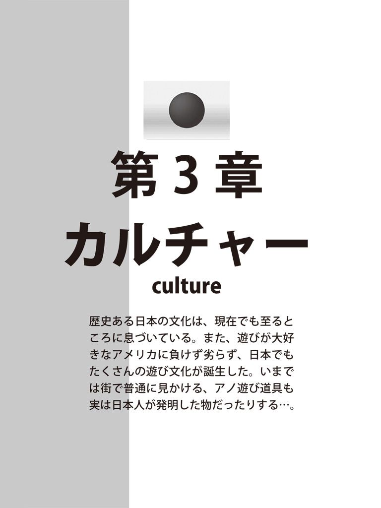
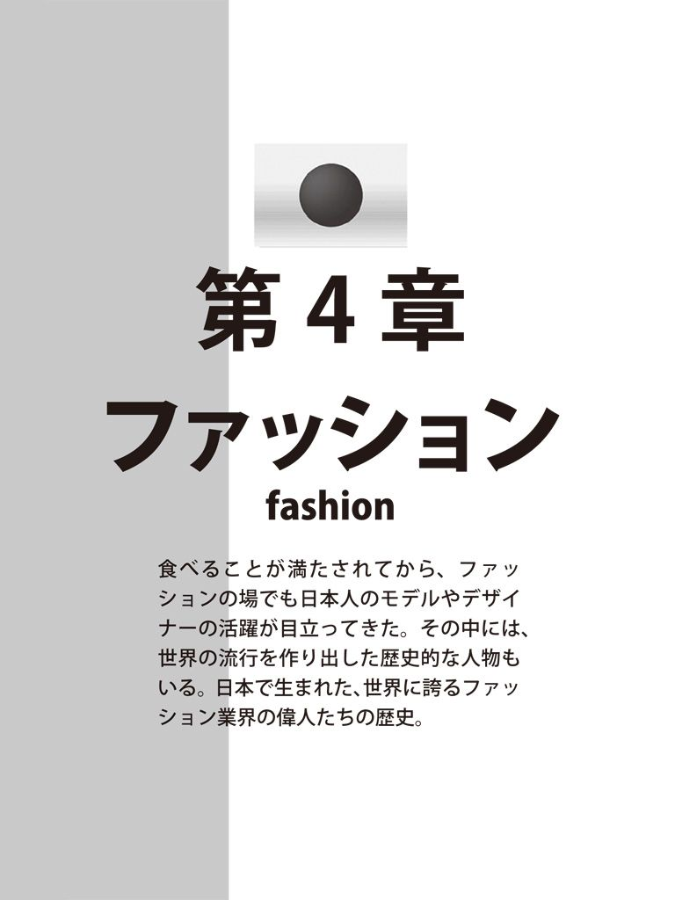
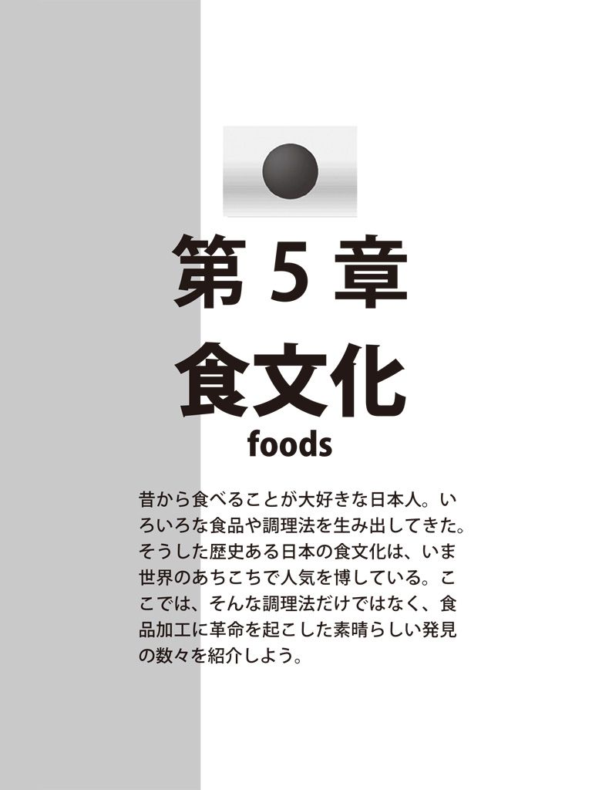

| 日本が作った世界の定番 日本の発明は？痛くない注射針！カラオケ！メッキ加工！トランジスタラジオ！...... | |
| ISM Publishing Lab. | |
| (2017) | |

漫画 小説 一般書籍 RAW ZIP RAR 無料 ダウンロード http://13DL.NET
はじめに
戦後、ＧＨＱの政策で資本主義社会への道を突っ走り、追いつけ追い越せを合言葉にアメリカを追いかけてきた日本だが、いまや「物マネ上手」「他国の猿マネ」の時代は終わった。古くからの日本の伝統文化を生かし、また、手先の器用さを生かして、世界中の人々の欲求を満たすべく、日々、さまざまなオリジナル製品を送り出している。
一方で、島国・ニッポンから世界的な記録を生み出そうと、メジャーリーグ、ヨーロッパのプロサッカーチームへと旅立っていく「サムライ」たちも増えてきた。いまや、日本は、経済面だけでなく、文化やスポーツの世界でも国際基準に達しつつあるのだ。
世界経済は中国や東南アジアなどの各国成長が著しいが、日本が果たしてきた役割は大きなものがある。今後もその位置付けは変わらないはずである。
この本では、そのような日本で生まれたスゴイ製品、スーパースターたちの軌跡を紹介する。

合繊機械で上り詰めながら新しい分野にも挑戦
合繊機械
合繊繊維は人類最大の発明ともいわれる。ポリエステルやナイロンといった化学繊維の製造は、これまで五十年にも及ぶ間にさまざまな技術開発が行われてきた。
その技術開発の一つの合繊機械だが、ＴＭＴマシナリーは、その合繊機械のメーカーだ。同社は、日本を代表する大手合繊機械メーカーである、東レエンジニアリング、村田機械、帝人製機の三社の共同出資によって二〇〇二年四月に設立された。
まだ創業して間もない新しい会社だが、大手三社が出資している会社であることでもわかるように、長い間培ってきた技術力やエンジニアリング力が結集されており、合繊機械のリーディングカンパニーとなるべく、日々進歩を遂げている。
業務の内容は幅広い分野にわたっており、新技術や製品開発といったことだけではなく、顧客のニーズに合わせて加工技術などや営業方法、カスタマーサポートなど「世界最高品質」をモットーとして高いレベルのサービスを提供している。
同社が掲げる企業理念は「常に新しい価値を創造して、お客様を喜ばせること」というもので、顧客とともに繁栄するというのがその最大のテーマとなっている。
また、面白いのが行動指針を漢字二字で表すというもので、長い言葉ではなく、短くわかりやすい単語が用いられている。
一つ目は「融合」というものだ。
創業前にそれぞれ違う性質を持った会社の合併によってできた会社だけに、各々の持ち味を最大限に発揮させ、最適な視点から顧客のニーズに合わせた製品や、システムを提案していく、というのがその主な狙いだ。
三社から受け継いだものは技術力だけではなく、顧客の信頼を蓄積・発展させるという意味も含まれた「融合」である。
二つ目のキーワードが「先手」。
中国の古典『史記』にある「先んずれば人を制す」という言葉から、相手よりも先に事を行って常に優位に進めていこうというものだ。
世界の経済状況は刻々と変化しているが、国際競争を勝ち抜くためには勝負事のように常に早め早めの「先手」をとる必要がある。他社に先駆けて技術を開発することが非常に重要だということは、当たり前のことだが、独自の技術を生み出すことで、会社全体の結束力を高めることも狙いの一つだという。
すでに合繊機械メーカーとして、世界でも確固たる地位を築きつつある同社だが、現在はこの合繊機械以外の分野も模索中だ。新規事業への取り組みには研究開発費も惜しまない、という。
そのために必要な要素としては、現在の社員一人一人の感性や向上心、そして気配りなどが必要だと同社は考えている。
これまでの合繊機械で世界最高峰を目指すとともに、それに甘んじることなく、さらに新しい世界へと進んでいこうというチャレンジ精神が、必ずやさらなる飛躍へとつながっていくことだろう。
消費者の信頼を得る秘訣はただただ前進するのみ
食肉産業
食肉を扱う会社にとっては、最近の最大の問題はＢＳＥ問題、いわゆる狂牛病の問題だった。
二〇〇三年十二月にアメリカでＢＳＥが発生して以来、アイマックコーポレーションはすぐに米国牛肉の使用をとりやめ、豪州産の牛肉へと切り替えた。
牛肉を止めて豚肉に切り替える会社も多いなかで、この切り替えはとても斬新なものだった。
スピードだけではない、創業当時から食肉の卸や商社として、高い鮮度を保った食材を提供し続けているほか、外食産業への進出も積極的に行っている。
「炭火焼肉 牛角」や「釜飯串焼 とりでん」といったＦＣ店舗直営店の運営を進め、消費者のニーズを満たすためにさまざまな商品を展開している。
そんなアイマックコーポレーションを象徴するようなものがサイコロステーキだ。
いまではすっかり定着したサイコロステーキ。食べやすく一口大にカットされたステーキも同社が企画・立案したものであり、パイオニア的存在である、といえる。
また、コスト削減のために、薄い肉を貼り合わせるなどの工夫もなされている。
同社が運営している「焼肉定番」では、カルビやロースなどあらゆるメニューを安価で提供しているが、これなども企業努力がなせる技だといってよいだろう。いつまでも、固定客を逃さない、ということと同時に、新規の顧客を増やすという戦略を掲げる同社の方針はさまざまな新しい試みに挑戦している。
ＢＳＥ問題に揺れた二〇〇四年度は、各社とも落ち込んだが、前年比八％増の百五十五億円という数字を出すことができたのもこうした前向きな社風が表れているかのようだ。
また、どれだけ増収しても、前へ前へと進んでいく、という点がとにかくすごい。
短期間で、ＦＣ店舗出店実績を大幅に伸ばし、現在では店舗数は二十を超している。店舗数を増やして、より消費者に近づくことで多くの潜在需要を掘り起こして、市場開拓につなげようという考えだ。
高齢化や少子化、人口の減少などの社会問題も全く関係ない、といった様子だ。
こうした無謀とも思えるような前向きな企業戦略は、社内の風通しがよいところから来ているようだ。コミュニケーションを常に図ることによって、さまざまなアイデアを生み、フレキシブルな社風を生み出しているということらしい。
発言しやすい環境やアイデアを出しやすい社内の空気、そういったものが、チームプレーにつながって思考力や行動力を生み出している。
それでも、企業というかたちで運営を進めている以上は、人材が重要なキーを握っていることは確かだ。そうした人材面でも優れている。
現場での消費者の声を聞き、会社に持ち帰って新しい企画を立案。食文化の革命を目指す人事育成にも自信を持っているようだ。
同社の創業以来の企業理念は「健康・安全・安心」だという。近い将来、株式公開をも見据えているというが、それも含め、ただただ前向きに進んでいくというのが同社の方針だ。今日も消費者の信頼を得るため、走り続けているのだ。
主婦たちが最初に注目、いま世界が注視する高い技術
エアゾールガス抜き
たった三人の小さな会社が簡単・便利・高機能という「エアゾールキャップ」を開発、その高い技術力が認められて、東京・大田区の支援を受け、世界市場を視野に入れている。
この会社、後藤金型工業所（東京・大田区）は、二〇〇五年二月、「大田区中小企業新製品・新技術コンクール」で最優秀賞に輝いたのである。
受賞した製品は、キャップの内側に突起を設けているのが特徴だ。一度缶からキャップをはずし、キャップ上部を押し込んでからもう一度缶にはめるという簡単な作業で自動的にガスが抜ける。従来のガス抜きと比べて原液やガスが飛び散りにくく、また、誤ってガスが抜けないようにロック機能もついている。
そして、このような便利な機能がついても、いままでとほとんど製造コストは変わらない。キャップの大きさは直径三十五ミリ～六六三ミリまでは対応可能である。特に三十五ミリ対応は難しく、業界初の画期的な開発だという。
同社が製作した金型は、国内はもとより、世界特許で世界市場を目指すという。
この商品、確かに便利である。いままでエアゾール容器のガス抜きには主婦たちがいかに苦労していたことか。ガスを抜くために噴射部を押し続けるのは手が疲れる。ましてやそこにキリで穴を開けるのは爆発しそうで怖い。しかし、そのままポイ捨てするのも気が引ける。そんな生活感度の高い主婦たちに共感を得たのだから、人気にならないわけがない。
同社にとっては、苦い経験というより死活の問題だ。一時はあきらめようと思ったそうだが、そこは男の意地。小企業にもプライドがある。その後、「ひょっとしたらいけるかもしれない」という自信も出てきたという。そのあとで、コンクールでの優秀賞の受賞。何ごともあきらめちゃいけないよ、という人生訓みたいな開発秘話があったのだ。
応用レーザでアジア各国にも高い評価を得る
レーザスキャン
アジア各国の経済状態が揺れている中で、ハイテク分野におけるキーワードは「ボーダーレス」だ。日本の製造業が世界各国と対等に渡り合うためには、海外の先進技術に尻込みすることなく前へと進んでいく、という企業意識と、それを支える確かな技術力が不可欠になりつつある。
そうした技術を持った会社が、東京の練馬区豊玉にある。
一九九二年創業のエーエルティーは、レーザ応用、なかでもレーザスキャンに関するビジネスを展開している。
応用レーザ製品を供給している同社は、日本だけではなく、海外からの注文も数多く請け負っている。その中でも、韓国のサムスン電子とのつながりが深い。韓国でサムスンといえば知らない人はいないくらい大きな会社だ。レーザプリンタの検査システムでは二十四システム納入という大きな実績もある。
韓国は日本と地理的にも近いうえ、みな勉強熱心で人情に厚く、ビジネスをするのに向いているところだ。そうしたことからビジネスを根付かせるのには絶好のチャンスだと同社は考えた。
手がけるレーザプリンタの開発機種はたくさんあり、中には基礎開発から関わっている機種などもあるという。
新製品の出荷に際し、必ず検査機のチェックを経なければならない。その厳しい検査をクリアするための製品開発は決して楽なものではない。
自社開発で生まれた「高速走査位置計測システム」は、肉眼では絶対にとらえることのできない傾きをも測定できる高い精度を持つ。
また、新開発の「ダイナミックビーム径計測システム」は、レーザビームのビーム径を計測するというものだ。高回転での空気抵抗や高出力モータの発熱によって起こるビームへの影響を測定することができる。
そのほかでは、昨今導入された、三次元計測の世界で活躍する機器も大きな可能性を持っている。
例えば、鉄道の世界において、新潟中越地震の際にダメージを受けたトンネルの検査に用いられた。
そのほかでは、歯の治療において、現在では、歯の詰め物にチタンを採用する動きが進んでいるが、その型を決定するのに同社のスキャンが多用されるようになった。
いままででは計測が不可能と思われていたものを測るという技術は、単純に技術開発ということだけではなく、コスト面や時間の節約などにおいても大きな意味を持つものになっている。
二〇〇四年にはＩＳＯ認証も取得した。これによって、製品の信頼度はより一層アップしたといえるだろう。
自社内で開発から製造までを一貫して手がけている同社にとっては、今後は納期の短縮や、製造のより一層のスピードアップ、開発コストの削減などが重要な課題となっていく。これらを克服してさらに一般化していくにつれて、エーエルティーの名はより一層、応用レーザの世界に刻み込まれていくことになるだろう。
ひたむきな使いやすさの追求が世界市場を席巻した
カッターナイフ
オフィスの引き出しから取り出して、デザイン用や作業用に用いるカッターナイフは、スライドさせて刃を折るだけで、簡単に切れ味のいい刃先になる。その名も、「ＯＬＦＡ」。〝折れ刃〟を英文字に変えただけのネーミングである。
いま、世界百カ国以上で愛用されている、わが国の自慢のオリジナルなのである。
折る刃式カッターナイフの生みの親の、岡田良男氏（故人）は、大阪市豊人橋で、紙の断裁業を営んでいた家の長男として生まれて育った。
この町は印刷工場が多く集まる地域で、岡田氏は中学校を卒業後、さまざまの仕事を経て一九四一年に、小さな印刷工場に勤めた。
そんなある日、岡田氏は別の印刷工場に勤める弟から、こんなことを相談された。
「ナイフがすぐに切れなくなる。何かいい方法はないだろうか」
当時の印刷所の職人たちはカミソリの刃を使っていたが、日本製のナイフはすぐに切れなくなっていった。
そのとき、岡田氏の頭に浮かんだのは、昔の職人がガラスを割って、その破片でモノを切っていた姿だった。
「紙を切るには、刃の先しか使わない。それならば、切れなくなった刃先を折れるようにしておけばいいんじゃないか」
そうはいっても、どうやって折るか？ いうは簡単だが、実際にはうまくいかなかった。試行錯誤の連続だった。そのとき、頭にヒラメいたのが、戦後、進駐軍が持ってきた板チョコだった。この板チョコは、一口用に碁盤の目のように割り易く形が入っている。
「これだ！」
岡田氏はカッターナイフに、このアイデアを応用した。研究に研究を重ね、刃先に折れ線を入れた。そこをカットすると新しい刃先が出てくる。
こうして、刃先に斜めに折れ線を入れ、そこをカットすると新しい刃先が生まれている現在の「カッターナイフ」が完成した。ここまでくるのに、二年かかったという。一九五六年のこと。日本はもう戦後ではなく、復興も急ピッチで進められていた。
岡田兄弟は試供品を作り、あちこちに製造・販売を依頼して回ったが、意外にも反応は鈍かった。
「そんなもの作っても売れんわ」
それならば、自分たちで作るしかない、と勤めていた印刷工場を辞めて岡田商店を設立。特許で出願して、折れ刃式カッターナイフに全財産をつぎ込んだのだという。
ところが、製造は小さな町工場に依頼し、約三千本作ったカッターナイフだが、一つ一つが手作りだったので、寸法も品質もバラバラで、すべてを手直しする必要があった。それはしかたのないことだった。岡田兄弟は、手直しした完成品を持って大阪の町を一軒一軒を歩いた。二人の熱意を感じとった人たちはしだいにその使い易さを感じとってくれて、商品は売れ始めた。
売れるようになると量産の必要に迫られた。しかし、個人商店では資金に限度がある。そこで、知人の会社に協力を依頼。特許を共有することで資金面は解決した。
商品は順調に売れたが、途中で当事者間に方針の違いが出てきて、分裂した。岡田氏ら兄弟は、兄弟四人で新たに会社を発足させた。一九六七年のこと。社名も折れ刃をもじった「ＯＬＦＡ」を設立。一九七一年、本格的な製造・販売を始めた。
この頃アメリカの大手企業でもカッターナイフが製造・販売された。世界に売れるには、大手企業の進出が待たれるが、カッターナイフも同じだった。
岡田氏のカッターナイフは、大手に頼らず自らの製造・販売にこだわった。
これが品質の良さにつながった。いまも同社はカッターナイフ一つに固執する。商品はいろいろな用途に向けたものなどで約三十五種類ほどだ。
現在、百円ショップでは、二本で百円で売っているものもあるが、すっかり国内外に定着した。
このカッターナイフは文房具以外に意外なところでも使われている。科学の最先端のバイオテクノロジーの現場で培養細胞を切断する道具として、両刃の安全カミソリを折ったものが使われている。折れ刃の新しい部分の鋭い刃先は非常に切れ味がいいからである。カッターナイフは、特許権の保護期間が過ぎて、世界中で同種のものが生産・販売されているが、刃先はすべて岡田氏が考案した形が国際基準とされている。
小さいながらも、一つの商品で切れ味鋭く世界市場を席巻している商品は類を見ない。
徹底した品質管理で世界が注目の医療品を生み出す
不繊布を使った医療品
手術のときに、医師や看護師が着けているマスクは、繊維を布状にした「不織布」と呼ばれるもので作られていることが多い。これは、細菌を確実に遮断することが求められるので、一般のマスクからすると、数倍という濾過性能を持っている。
サンエムパッケージは、不織布を使った手術用マスクを医療品メーカーに下ろしている。国内シェアでは七〇％にも及ぶ。
会社設立当初はサンダルやプラモデルなどの箱を作っていたが、それだけでは利益が上がらず、経営は行き詰まってしまった。
そうした中で、同社は普及してまもない新素材・不織布に目をつけた。
和紙のような手ざわりだった不織布を使って、札入れを作ると、紙と布の中間のような質感がウケてヒット商品になった。
その後、ショッピングバッグや、名刺入れなどを作ってみたものの、売れ行き好調を持続させることはできなかった。
それと同じ頃、紙マスクを生産していた。しかし、こちらも安定した受注を得られるまでにはいたっていなかった。ところが、そんなときに、細菌捕集率が高く、呼吸抵抗が少ない不織布が開発されたというニュースが飛び込んできた。
不織布はかつて扱ったことのある素材だということもあり、社運を賭けて手術用のマスクの製造を始めることにした。
初めは、国内のメーカーに売り込みをかけたが、日本では布マスクが主流で思うような成績を上げることができなかった。そこで、ヨーロッパの医療品メーカーへと売り込みに行く。
そうした努力が実り、スウェーデンの医療品メーカーから受注を取り付けることができた。
しかし、初めての納品の際に、予想外のトラブルが発生する。出荷後、設備の一部が欠落していた。それが出荷したマスクに混入している可能性があるというのだ。
それを調べるために、極寒の地・スウェーデンまで点検をしに行った結果、その金属片は見つかった。
こうした誠実さが買われて本格的な供給につながった。
手術用マスクは患者を守るということのほかに、一日のうちに何度も手術を行う医師を患者から守る、ということも重要だ。
そのため、医師は安全性にはシビアだ。また、品質は常に一定であることが要求される。そうした中でも同社が常に高い評価を得てきた背景には、徹底した品質の管理、安定化ということがあった。
年間に生産する約一億枚にも及ぶ手術用マスクのうち、世界中から返ってくるクレームは毎年十件程度にすぎない。他社製品と比べてもクレーム件数は半分以下だといわれる。
こうした品質管理への取り組みは、なかなか簡単なものではない。もっとも問題となるのは、大量生産と品質安定をどのように両立させるか、ということにある。
一九八〇年代に入ってからは、院内感染やエイズの問題が広がり、不織布マスクの需要はさらに増えていった。
こうなると、売り上げ拡大のチャンスではあるが、生産スピードを上げようとすると、不良品のもととなるさまざまな問題が生じてしまう。
そうした中で、大手ミシンメーカーの超音波溶着機などを取り入れ、生地同士の接着を行ったりした。しかし、これも超音波の出力と縫製のスピードのバランスなどがあり、なかなか簡単にはいかなかった。
一年近い試行錯誤があり、世界で初めての、不織布の超音波自動縫製ができた。これによって、不良品の発生を最小限に抑え、そのうえで、安定した供給ができるようになった。
生産面での問題は解決されたものの、その後、作業の過程で熟練者と新人との技能の差が目立つようになった。そして、組織の拡大に伴い、技術者全体のレベルの均一化が必要になってきた。
こうしたことから、同社では、マニュアルを作って、新人の教育を進め、クレームの数を減らすことに成功した。
徹底した品質管理の確認が、世界へ送り出される医療用品の生産を支えている。
過去のノウハウを生かし、大型船舶用プロペラの世界的メーカーに
大型船舶用プロペラ
数十万トンという大型船や小型の船まであらゆる船舶のプロペラを製造しているナカシマプロペラの本社は、岡山県にある。
船舶用のプロペラメーカーとしては世界的に有名で、世界シェアのおよそ四〇％を製造している、
これまで、さまざまなアイデア製品を作り出してきた。現在ではおなじみとなったクサビのない「キーレスプロペラ」や、騒音を少なくさせた「ハイスキュープロペラ」なども初めて作り出したのは同社である。ほかにユニークなものとしては、美しい音色が出る釣り鐘「メロディベル」、チタン合金を使った画期的な人工関節などのプロペラ以外の製品も作り出している。
同社では、大型船の製造ブーム到来を予測し、一九六〇年代に小型用から大型用プロペラへ生産の中心を移した。
そして、これに伴って、船舶技術研究所で大型用のプロペラの製造技術を学んだ。そのほか、設備を大幅に増設するなど、社内体制を整えていった。
こうした準備が効いて、その後の大型船ブームを乗り切ると、同社は世界的にも認められた船舶用プロペラメーカーになった。
大型船用といっても、その大きさは、直径一〇メートル、重量三〇トンを超える。これほどの大きさのプロペラを鋳造するのには、それに合わせた巨大な鋳型を作らなければならない。もちろん、受注生産となるので、船舶ごとに違った形の鋳型を作ることになる。
このような大きな鋳型作りには、材料の選定や混ぜ合わせ方など、作業工程でさまざまなノウハウが必要になってくる。
しかし、同社ではさまざまなプロペラの製造を行ってきたので、多品種少量生産にも対応可能なノウハウがすでに身についている。こうしたことが、競合各社がナカシマプロペラの製品を真似できないということにつながっている。
高温で溶かした鉄を鋳型の中に流し込み、プロペラを作っていくという作業は危険もあり、しかも、生産性が悪い。こうした理由から大手の造船会社はどこも鋳造工場を閉鎖した。そうしたことも、同社への受注が増えた理由の一つとなっている。そして、現在では作業を自動化するシステムの開発に乗り出した。
業界の将来を見据えた先見力と、経験から得た独自のノウハウが、同社が世界一に上りつめたことにつながっている。
プロペラの形状は、船舶の仕様によっても変わる。それで、プロペラの設計には、たくさんのデータを収集する必要があった。
こうしたことから、同社では、一九七三年に「プロペラ最適設計システム」といわれるマニュアルを作った。これによって、それまで十日前後かかっていた設計作業をわずかに十五分程度で行うことができるようになった。
プロペラは鋳型で基本となる型を作ったのち、三次元的に削っていくこととなる。同社では、東芝機械と共同で、プロペラを設計どおり自動で加工できる三軸同時制御の機械を開発、これは、現在主流となっている五軸同時制御の加工機の原型となったのである。
同社がこうした、素晴らしい設計システムや工作機械などを生み出すことができたのはどうしてだろうか。
戦後、同社では旧日本海軍などが保有していた船舶用プロペラの図面データの保存と編集を依頼された。同社では、この貴重な技術資料をもとに、新しい生産技術を生み出したのだ。
プロペラは、市場規模が小さいので、大企業が参入することが少ない。参入しても、メリットが少ないからだ。このようなニッチ分野に特化すれば、中小企業でも、競争優位に立つことができる、ということを示しているかのようだ。また、創意工夫を凝らせば、そうした中小企業からでも世界にとどろくような製品を作り出すことができるのである。
眼鏡販売店で扱われている機器のほとんどを手がける
自動検眼装置
近視や乱視など、物を見る際に何らかの支障がある人が増えている。
それらを補うためには、コンタクトレンズや眼鏡などを用いて矯正することが必要になるが、その際には、近視や乱視の度数がどれくらいか、ということを調べる必要がある。
そうした度数を、わずか数秒で計測することができる機器があるのをご存じだろうか。それはオートフラクトメーターと呼ばれる自動検眼装置だ。
これまでの検眼は、アルファベットの「Ｃ」のような記号を利用して、どれくらい小さなものまで見えるか、ということを測るものだったが、オートフラクトメーターは、眼球に赤外線を当てて、コンピューターで解析を行い、瞬時に視力をはじき出す、というものだ。
現在では、かなり多くの眼鏡販売店で使われているこの自動検眼装置において、約四〇％ものシェアを持つのが、愛知県にあるニデックだ。
同社では、ほかにも、眼鏡のレンズを検索する機器も手がけている、こちらも約五〇％を超えるシェアを誇っているという。
これまで、眼鏡そのものの製造に直接関わってはいないものの、眼鏡店で取り扱う機器の多くを手がけてきた。同社が作ってきた商品群は、光学系の技術が必要とされる。こうした分野では当然、技術力の大きな大手の光学機器メーカーなどと競合してきた。
一例としては、昭和五十五年に発売を開始した自動検眼装置は、ほぼ同時期に大手であるニコンが売り出した。こうした大手企業との競争の中で勝ち抜いてきた背景には、徹底した顧客ニーズへの配慮がある。
自動検眼装置でも、こうした顧客ニーズへの対応が勝利の決め手だった。
視力を測定する際には、眼球の正面から、瞳孔の中心に赤外線を当てる必要があるが、検査を受ける人の眼球は、自分で意識していなくても動いてしまうものだという。
ライバル会社の機器を見ると、検査をする人がレンズを覗き込んで赤外線の照射位置を調整するというものだった。この場合には、客の眼球の動きに注意するだけではなく、レンズを覗き込んでいる自分も静止しなければならない、という問題があった。
これに対して、ニデックの機器は、テレビ画面がついており、そこに客の眼球を拡大して映すことができるというものだった。この方式では、レンズを覗き込むという面倒な作業は必要なく、拡大映像なので、赤外線を照射する位置も決定しやすいという改良点があった。つまり、簡単に測定できるということが最大の勝因だった。
その後、眼鏡点は大手チェーンの登場などで、競争が激化し、店舗作りにおける、デザインや、店内のレイアウトなどの重要性が高まり、装置の小型化が求められるようになる。そして、二〇〇〇年には、ついに手持ちで計測することができるものが発売されるに至った。
こうしたさまざまなニーズに対応していく中で、技術力の向上といった点も課題になっていった。ニデックでは、現在出願中のものも含めると、実に千件をも超える特許を取得しているが、同社の開発の最も大きな特徴の一つとして、海外の研究機関との提携ということがある。研究開発においては、約七割、アメリカの研究機関との提携を行っている。（ちなみに、国内の機関との提携は割合としてわずか十五％程度に過ぎない）
当社の売れ筋商品の一つ、近視治療装置を製品化する際に必要なエキシマレーザーはアメリカのハーバード大学の研究者へ依頼したものだった。八〇年代前半、目の屈折異常を治療することが注目され始めた。ニデックは、国内のいくつかの大学に在籍する研究者に製品化を打診したが、良い答えを得られなかった。そこで、アメリカのハーバード大学に依頼することになった。
こうして、製品化されたエキシマレーザーは、アメリカでは既に近視治療用として利用されていたが、日本で認可されたのは二〇〇〇年と、最近になってからだった。
一台、六千五百万円もするエキシマレーザーだが、海外を中心に、数多く売れている。
一九九七年には機器だけではなく、製薬会社と提携して点眼薬や、治療薬への開発にも乗り出したほか、今後は、皮膚培養など、さらに新しい分野への進出も検討しているという。
食品や医療など各分野で活躍している環境清浄機器の数々
環境清浄機器
さまざまな分野で社会問題が起き、製品そのものだけではなく、サービスの向上なども問われる時代になりつつある。少しのミスでさえも顧客を失う要因になりかねない時代になっている。
特に、食品業界では、Ｏ─１５７やＢＳＥなどの問題が起きて、より衛生面が、いままで以上に注目されつつある。チリ一つですら問題となりかねないシビアな時代になったといえるだろう。
流体テクノロジーを応用しているのが、株式会社パイオニア風力機の開発している製品の特長だ。
現在、日本中の食品工場や、医療施設など各種分野の環境作りに貢献している。
その製品はシューズクリーナーや防虫用エアーカーテン、高性能の空気清浄機など幅広い分野に及んでいる。
その中で、最も会社の発展を助けたのは「クリーンルームダスター」だ。
これは、食品のほか、半導体などの精密品、バイオテクノロジーの現場、製薬といった工場の出入り口や間仕切りに設置するものだ。毛髪や、粉塵、それに害虫などの異物の除去に使用されているエアーシャワーと呼ばれる機器の一つである。
この製品の中で、特に独創的なのが機器の上面、左右の側面にあるジェットノズルだ。このノズルから秒速二五メートル以上の高速噴流で異物を吹き飛ばすことができる。また、同時に床面から吸い取ることもできる。独自のダブルフィルターで九九％以上の異物を除去するというものだ。早く、そして、確実に清潔にすることができる、というのがセールスポイントだ。
気になる導入の効果だが、品質と生産性の向上、そして安全かつ安心な製品づくりという点において、非常に大きな威力を発揮していると評判だそうだ。
新製品では「エアー吸着マット」を導入。
特に人の出入りが激しい商業店舗や遊戯施設のほか、清潔さが重要視される飲食店や医療機関、精密工場などに有効な高性能と省エネを兼ね備えた玄関マットだ。
なお、この製品は人間が通過したときのみ作動するというものだ。この点が大いに省エネに役立っている。
建物内に持ち込まれる異物の約七〇％といわれる靴底などのゴミや、ほこりをスプリングブラシの反発力でかき出して、強力なエアーで吸引する。
このような精密な機器で気になるのは、故障や不調などだが、いままでに不良や事故が起きたことはないそうだ。一九七一年の創立から長い間積み重ねてきた実績を見ても、その信頼度の高さはうかがえる。もちろん、国内だけではなく、海外からの発注も少なくない。
取引先を見てみると、トヨタ自動車の国内、海外のすべての工場で導入されているほか、明治製菓、キューピーやキリンビールなど、食品関係の分野では四〇％のシェアを誇るという。その中には、文部科学省の給食センターなども含まれている。
エアー吸着マットも、このような広がりを見込んでおり、同社では生産を急いでいる。これに伴って新工場も完成、大量の発注に備えている。
さまざまな工夫を凝らしたアイデア表示灯の製造
パトライト
少し前まで、大手家電メーカーの下請け業者としてマイクロモーターなどを作っていたパトライト。現在では、パトカーの回転灯や工場の信号灯、そして液晶表示器や音声報知器などの情報表示機で日本だけではなく、国際的に有名な企業となりつつある。
同社のモットーは「徹底した顧客重視のモノ作り」。そして、それを実践するための生産面での方針が「セル生産方式」と呼んでいるものだ。
このセル方式とは、工場の一人一人に担当機種が割り当てられており、すべての部品と一緒に送られてくる指示書の通りに、客からの注文に応じて一人で製品の完成まで組み立てていく、というものだ。
たとえば、赤や、黄色、緑といったライトを組み合わせて製造する信号灯の場合は、色の組み合わせ一つ一つ注文どおりに作っていく。一つずつ作っていくことで、在庫を抱え込まなくていいというメリットもある。また、従業員は、一人で製品を仕上げることになるので、達成感を得ることができ、士気の向上が期待できる。
その従業員だが、製品の検査や、はんだ付けの技術の能力を認定する制度が社内で決められており、認定試験に合格したもののみが作業の担当になれる。
このセル方式を導入したのは、一九九八年のこと。
マイクロモーターの製造にあたって、それまでは一つのラインで、大量の製品を作っていた。しかし、製品の多様化に伴って、より柔軟性のある生産方式が求められるようになった。
そして、いかに早く顧客に商品を渡せるか、ということと、社員の満足度を高めるにはどうしたらよいか、ということを考える必要が出てきた。
現在の状況のままでは、原価である鉄の価格、ほぼそのままでモーターを納品させられかねない、と考えた同社は、一九六五年にマイクロモーターを使った自社製品の回転灯の開発に乗り出すことになる。
それまで、国内の回転灯メーカーは六社ほどあったが、同社が開発に取り組もうとしていた中には、中央にサイレンを組み込んだ、横長の回転灯など、日本では初めて製品化されるものなどもあった。
また、素材についても、戦闘機の風防に使われているポリカーボネイトを採用したりして、新しい特色を出した。
これらの新しい製品を警視庁に何度も売り込み、床にたたきつけようが、鉄パイプでたたこうが壊れない、ということを実証し、ようやく納品にこぎつけた。
このパトカーのライトを足がかりに、自社製品の割合を増やしていった。
そして、このパトカーのライトの製造をきっかけに自社製品の比率を増やし、一九八五年には売り上げの六割にまで及ぶようになったところで、下請け先の大手メーカとの契約を解消、独立に踏み切った。
そうしたなかで、音や光を組み合わせた新製品の開発に次々と取り組んでいき、工場だけではなく、工事現場のサインや、商店の防犯用品などを生み出した。
既存の製品にもいろいろな工夫を施して売り出した。たとえば、音声報知器などは、一万種類ものメッセージが用意されている。
また、製品の「心臓部」とも言われるマイクロモーターの製作を自社で行っている、という点も強みになっている。細かいパーツや、光の強さから回転の速さなどまでコントロールをすることができる。そして、それが製品ラインの多様化につながっているというわけだ。
さらに、顧客からはさまざまな新しい注文がくる。そうした細かいニーズに応えるべく、工場内に特注設計に応じるチームがあり、樹脂加工のための金型を作るプレスが置いてある。
こうした新技術は、日本国内だけではなく、新しい市場を獲得するために進出した欧米やアジアでも特許を取得した。特許を取得した製品は、実に六百種にも及び、パトライトの競争力を支えているという、
そうした国外の活動をさらに活性化させるべく、一九九九年にはインドネシアに工場を開設。今後は、労働コストの安い海外に生産ラインを移そうという動きだ。
一九八九年には既にアメリカにも進出しており、いまでは、多くの半導体生産メーカーが、パトライト製の表示灯を利用している。
高機能で安価な天体望遠鏡の開発に成功！
天体望遠鏡
最近では、あまり子供たちに人気のない天体望遠鏡。家庭用ゲーム機や携帯電話、パソコンなどが進出してきて、需要はいま一つ伸び悩みつつある。
そうした望遠鏡市場を活性化させるきっかけとなるかもしれない、新しい望遠鏡が販売されているのをご存じだろうか。
惑星や星団、星雲などの名前を打ち込むと自動的にレンズをその方向に導いてくれる「自動導入機能」や、日周運動により、天球上を移動する天体をモーター駆動によって自動的に捕捉する「自動追尾機能」などを備えながら、七万円と比較的低価格で売り出されている。これから天文観測を始めようという初心者が主なターゲットに据えられている。
自動導入や自動追尾などの専門的な機能は、天文写真を撮ろうというマニア向けの装置だという印象がある。しかし、実際には、天体の位置観測などにあまり慣れていない初心者にこそ、こうした機能が必要なのだ。そして、こうした機能を安価で購入できるようにすることで、天文ファンの裾野を広げようというのが、同社の狙いだ。
「高性能な製品を安価で販売する」というのも同社のテーマだ。
設立当初は双眼鏡の販売が主体だったが、六〇年代に入って自社ブランドの生産を開始する。
それに伴って、科学技術ブームが起き、各家庭での天体望遠鏡の購入熱が高まった。こうしたことから、天体望遠鏡の製造販売に本格的に参入する。そして、一九七〇年に現在の社名であるビクセンとなった。
その当時は、天体望遠鏡のメーカーとしては、日野金属や、高橋製作所などの製品が市場を占めていた。
ビクセンは、双眼鏡ではそれなりに有名だったが、ブランド力はニコンなどのカメラメーカーにはかなわなかった。
そこで、小売店に入念な聞き込みをする、部品などを技術革新によってコストダウンさせる、などの経営戦略を行った。
というのも、当時、家庭用に売り出されていた天体望遠鏡で最大の問題点は価格面だったのだ。そんな状況を打破するべく、レンズ部分以外で最もコストのかかる架台（望遠鏡の筒部が載る部分）を廉価で製造できる方法を編み出した。それまで、鋳型で一つ一つ作っていたのを、大量生産できるようにしたのだ。
また、機能面でも工夫を凝らした。それが、モータードライブを利用して天体の日周運動に合わせる自動追尾装置だ。これは、天体写真を撮る際には必須のものとなる。それまでのものでは、追尾精度が悪く、クリアな天体写真を撮ることができなかったという問題を解決することに役立ったというわけだ。そして、これも、生産数量の増加などを図って、コスト削減を実現させた。
こうして、他社の製品では、四万円～五万円程度だったモータードライブを一万五千円程度で購入できるまでに、至らしめた。
その後、世界で初めて自動導入装置がついた家庭用の天体望遠鏡を発売、しかも価格が七万円と、当時としては破格の値段で売り出した。
最新機能がついた天体望遠鏡を安価で売り出したことにより、世界市場での地位も確固たるものとした。アメリカ・ミード社、セレッソロン社に次いで世界第三位のシェアを誇るまでになったのだった。
現在は、この天体望遠鏡は売上高の四割を占めている。同社でのほかの商品の割合をみると、双眼鏡事業が約三割、残る三割は顕微鏡・ルーペなど。双眼鏡市場は、アウトドア用などで若干売り上げは伸びているものの、他社の参入なども進み、競争は日々激化している。
こうした状況から、主力の天体望遠鏡の売り上げを伸ばすことは、今後、大きな課題となる。こうしたことから、開発が進められているのが、初心者向けの高機能商品の数々である。
光学機器メーカーとして、望遠鏡の基本性能に大きな力を注いでいる。
二〇〇一年に誕生した、高機能で低価格な天体望遠鏡が人々に受け入れられ、さらに売り上げを伸ばすことができるとすれば、株式公開を早める原因にもなるかもしれない可能性を秘めている。
携帯電話やデジカメの装飾部品のリーディングカンパニー
めっき加工
携帯電話の装飾プラスチックめっき加工で六割のシェアを握り、デジタルカメラ装飾部品やモバイル燃料電池などめっき加工で業界をリードするエビナ電化工業（東京・大田区）は、世界初のめっき専門試作開発研究所でもある。
先端分野に特化した表面処理技術を開発・提案し、高付加価値ビジネスを追求する。
一九九六年に同社は創業五〇年を迎えたのを機に、創業者の海老名平吉氏が会長に退き、息子の延郎氏が社長に就任した。
これを機に新社長は、特化した技術と先見性、研究、開発への取り組みで国内外からひときわ高い評価を受けている。それが、前述した先端技術のいろいろだ。
高度成長期までは順調に業績を伸ばしていった。しかし、一九八〇年代からの円高の影響で、仕事は激減。ピンチに立たされた同社だが、起死回生は海老名社長がアメリカへ視察に行ったことから始まる。デジタル機器はマイクロチップを通して電磁波を出す。この電磁波はペースメーカーなどに悪影響を及ぼす危険性がある。そこで、アメリカでは、外に持ち運ぶデジタル機器は電磁波を出さないようにする法律が制定された。海老名社長は日本が輸出産業国だということを認識したうえで、すぐさま日本のメーカーに「電磁波シールめっき」（電磁波遮断めっき）を提案し、成功させた。そしてその技術力は高く評価され、たちまちほとんどの日本の名だたるメーカーのノートパソコンに採用されるに至った。
しかし、いい時代は長続きしなかった。それに伴ってめっきの価格も下落し、利益の出ない事業に落ち込んだ。
そんなとき、ある携帯電話の製造メーカーから、小さなパーツに二種類の樹脂を持っているが、その一方にめっきをかけられないかという依頼が舞い込んだ。渡りに船だった。二つ返事で請け負った。
それは、携帯のボタンの光を妨げないようにするには、めっきの成分配合も関係し、とても難しい技術だったが、同社はやってのけた。それは、これまでの技術ノウハウが大きい。以前、カーステレオのプラスチックめっき加工を手がけたこともあったため、そのときのノウハウが役立ったという。いまでは、ほとんどの携帯電話のどこかに同社のめっき部品が使われているのだ。
同社の製品もさることながら、特筆すべきは、約百名の社員の実に四割以上が女性だということ。二十代の女性を管理職に登用するほか、テクノマークも九割が女性社員で構成されている。多くの顧客が信頼を寄せる高い技術力と確かな品質管理を支えているのは、こういった女性たちの力が大きい。
欧米諸国の動向を常にリサーチし、新素材や科学機器の展示会にも足繁く通い、最先端の分析、解析装置や評価機器の発掘にも余念がない。これは学究肌の海老名社長の努力の積み重ねの賜物だ。
二〇〇二年には、次の世代を見越した世界初のめっき専門の試作・開発研究所である「テクノマーク」を設立している。また、燃料電池やカーナビに搭載するＩＴ機器の研究を進めている。常に一歩先を読んだ経営姿勢がそこにある。
ローラーそのものにモーターを組み込む新システム
コンベヤー
家電製品や自動車など、大量生産を必要とする製品工場で必ずといっていいほど見かけるのが、コンベヤーだ。
さまざまな小さい部品や、組み立ての途中の製品を次の工程へと運ぶコンベヤーは、以前はゴム製のベルトの上に乗せるベルトコンベヤーだったが、現在ではパイプ状のローラーで運ぶものへとかわっている。
また、このコンベヤーは、ローラーをコロとして製品などを運ぶものだが、これまでは、コンベヤーの端に大きな駆動用モーターを取り付け、その動力をローラーに伝える、というものが主流だった。それが最近では、ローラーそのものにモーターが内蔵された「フリーフローコンベヤー」といわれるものが増えてきた。
この電動自転式ローラーの製造で世界のトップを行くのが、伊東電機だ。
これまでの、大型モーターで全体を駆動させるものに比べ、フリーフローコンベヤーはさまざまな利点を持っている。
まず、大型モーターを設置するためのスペースをとる必要がないので、製造現場や搬送拠点で省スペースを図ることができる。
また、チェーンでローラーを動かすタイプでは、定期的に油を差して、コンベヤー全体を潤滑に動かす必要があったが、これだと、製品が油で汚れやすい、という問題がある。
さらに、チェーンがむき出しになっていると、作業中にケガをしてしまう可能性がある。ほかにも、大型モーターは音が大きくてうるさい、といった点や、消費電力が大きい、といった問題点があった。
そして、なんといっても最大の難点は、大型モーターが故障してしまうと、コンベヤー全体がストップしてしまい、製造ラインそのものを停止しなければならない、ということだった。
パイプの中に小型のモーターを埋め込み。心棒を固定することでパイプ全体を回転させるモーターローラーでは、こうした欠点を解消できる、として人気を博している。
このモーターローラーの開発は意外に古く、一九七六年、コンベヤーメーカー向けに販売を開始した。
それでも当初は、石油ショックの影響などがあって売り上げは伸び悩んだ。しかし、その後、家庭用ビデオデッキが登場すると、家電メーカーが大量生産の体制を整える必要が出てきて、モーターローラーの需要もアップした。
当時のビデオデッキは、一つの製造ラインごとに動作をチェックする必要があったのである。そのため、ラインの途中でコンベヤーの流れる方向に対して、製品を細かく移動させなければならなかった。こうした複雑な工程を実現するため、自ら回転する機能を持つモーターローラーが必要となった。
このビデオデッキの需要拡大が、各家電メーカーの生産工程にモーターローラーが不可欠となるきっかけだった。
さらに、組み立て工程がより複雑な自動車製造でもモーターローラーが必要となってくる。直径五センチ程度のローラーを使用しても、五〇〇キロほどの荷物が動かせるというモーターローラーは、大型の部品でも動かすことができる。また、素材から屑が出やすい段ボールメーカーや織物加工メーカーなどでは、屑が直接モーターに触れることがないのもよかった。
これらのモーターローラーはすべて、受注生産となっている。それでも、細かいパーツの組み立てなどすべて、自社で手がけているために、通常なら五～七日間かかるという作業を最短三日で済ませることができる。このような生産工程の短さも競合企業を引き離す要因になっているという。
最近では、海外でのモーターローラーの需要拡大に新たな追い風が吹いた。アメリカでの需要が急増したのだ。
そのきっかけは、アメリカでコンピューターと連動させたローラーが見直されたこと、およびアメリカの郵政公社が民営化されることによって、コンベヤーを全配送拠点に導入されるようになったことだ。
それ以来、アメリカでの売り上げは大幅にアップして、国内の需要の低迷をカバーしつつある。
アメリカだけではなく、欧州や、アジアなどへの進出もこれから積極的に行っていく予定だという。
さまざまな現場で利用される化学合成紙のさきがけ
油化合成紙
一九六〇年代後半に紙の需要が急速に増すと、日本政府は森林保護のために、石油から作り出す「合成紙」の生産を進めた。
これにより、王子製紙と三菱油化は、一九六九年に合成紙専門の販売会社「王子油化合成紙（現：ユポ・コーポレーション）」を設立する。
同社は、天然の紙とは異なるさまざまな特徴を持つ合成紙である「ユポ」を世界で初めて生み出した。
積極的に用途の開発を行った成果が出て、現在では世界の合成紙市場で約八〇％ものシェアを誇る、大きな企業となった。
しかし、新しい技術や新製品を開発しただけでは、このような大きな企業になることはできない。どのようにして、新しい技術や、製品を世の中に広めるか、というところにポイントがある。
同社の合成紙である、「ユポ」は、ポリプロピレンをもとに、添加剤などを加えて作られる。こうしたことから、天然紙にはない特徴があり、同社ではそうした特徴を生かした用途開発を行って合成紙の市場開拓を行っていった。
その特徴とはさまざまなものがあるが、たとえば、「水に強い」ということや「日光に強い」ということがある。これを生かして、屋外ポスターや垂れ幕などに合成紙を使った。
また、「印刷がのりやすい」という点や「破れにくい」という特長を生かし、地図や食品ラベルなどの市場でも天然紙をリードするようになった。
その後、一九八〇年代に入って、「紙粉の発生が少ない」という点が注目され、半導体製造工場などのクリーンルームで多く使われるようになった。
あるいは、普通の紙としては欠点となりうる「折れにくい」という特徴から、選挙の投票用紙としても、注目されるようになる。
こうした合成紙の利点を生かして、世界中に市場の幅を広げていくことに成功した。
そんな中で、一九九四年には、東南アジア、中国などでの売り上げ増に伴って、香港に事務所を設置した。アジア諸国では、ポスターや粘着ラベル、高級名刺などの市場が大きいのだ。
また、輸出相手国の半分以上というアメリカでは、バージニア州に全額出資の「ユポ・コーポレーション」（ニ〇〇一年に社名を同社に統一）を設立。一九九八年から生産能力一万トンの新工場が稼働している。
これは、アメリカでの需要が拡大したことによるものだが、同時に、中南米の市場も開拓しようと視野に入れているものだ。
一九九〇年代に入ってからは、東海パルプや、十条製紙といった大手製紙メーカーが新規参入するなど、合成紙の市場規模は、拡大の一途をたどっている。
世界各国でも需要が広がっている合成紙の市場で、ユポ・コーポレーションは日本メーカーをリードし続けている。
米・大学研究室に認められた町工場の画期的な製品
筋弾性計
「貴社が開発した、筋肉の硬さで疲労度を測定する筋弾性計を研究機械に使いたい」
一枚のファックスの発信元は、米国マサチューセッツ工科大学からのものだった。これは画期的なことだ。
受け取った京都の機械部品メーカー・井之製作所の開発担当者はわが目を疑ったほどだったというのもわかる。
「夢にも思わぬ朗報でした」
当時、いまから十年前のことだ。
同社は社長以下二十人の典型的な町工場。その三十年続いた西陣織の織機メーカーから、理化学機器などの部品下請け加工に転換した、職人の新モノ作りへの挑戦だった。
当時のわが国は、バブルがはじけ、それまで何十年も続いた業種が新分野への転換を迫られていた。その折衝力やノウハウで新商品加工へ転換する会社、中国や東南アジアなどの海外へ生産拠点を移す企業などさまざまだった。しかし、それがうまくいった企業は数少なかった。
同社が開発した筋弾性計とはどんな製品だろうか。一般にはなじみがないが、同社開発担当の井之常務が元国体水泳選手の経験を生かし、三年がかりで開発した、世界に誇る部品なのである。
それは、筋肉部に押し当てたばね軸の沈み具合で硬さを測定する仕組みで、精密に組み合わせた大小二本の軸のズレを測ることで、精度の大幅アップに成功し、実用化にこぎつけたものだ。そのうちの一基が同大学に送られ、脳機能の解明に使われ、活躍しているのだ。
同社では、「製造現場だからこそ、技術開発が可能だ。当時、円高不況で海外移転も考えたが、技術力で付加価値を高めればやっていける」と自信を深めたともいう。
日本製品を世界一にし、大量生産を可能にした金型
金型
世界最高水準の日本の工業製品の基盤を支えてきた「金型」。金型とは、金属やプラスチック、ゴム、ガラスといった材料を設計図どおりの「型」にはめ込むための原型。これが使われることで、製品の大量生産を可能にする。日本の工業製品の原型なのだ。
金型の原型は、たい焼きを作る原理を想像するといいだろう。作りたい形状の反転形状の型である。成形品を型から押し出す機構や金型内に製品材料を流し込む際にも大きな圧力を必要とするため、その圧力に耐えうる本体を必要とするから、主に金属材料でできている。
その金型がピンチを迎えて十年余り。注文主の大手メーカーが、経費削減のために生産拠点を海外へ移住するのに伴い、国内の金型産業がほぼ半減しているのだ。東京・大田区では、これまでの十年間に約六百あった金型産業がほぼ半減している。
ところが、そんな中で共同受注で逆風をはねのけ、成果を上げているグループがあるのだ。
二〇〇三年三月、社団法人日本金型工業会東部支部の城南地区会に所属する二十六社の金型メーカーである。
このグループは、元気のある名前を、と、「金型熱血集団ＪＡＭ＝城南・アグレッシブ・モウルド（金型の意）」と名付けた。
このグループの会員で並木金型の社長、並木正雄氏がリーダー代わりになって、再び金型元気を打ち上げている。同社がコーディネイターになり、協力三十社をリードして仕事の間口を広げている。
金型は「マザーツール」とも呼ばれている。要は「製品の生みの親」「産業の米」だ。カメラ・時計・半導体・パソコン・デジタルカメラ・白物家電製品・自動車等々、日本製品が世界一となったのは、質の高い「金型」があったからにほかならない。
小さな会社が世界を手中にした知られざる製品
金属製伸縮管
「小さいが世界を目指す」研究開発型企業は多いが、東京・千代田区の入江工研もその一つだ。創業来四十年、電車用変圧器から始まり、いまや金属製伸縮管（ベローズ）を中心に、技術エンテッドな企業として堅実に業績を伸ばしている。
製品開発はいまや半導体、宇宙、原子力と、ハイテク諸分野で大きく需要を伸ばしているという。小さいがどこにも負けないメーカーとして着実に歩んでいる。
実は、これは創業者の入江則公氏（現社長・則裕氏の厳父）が、創業時、社内にこう檄を飛ばして社員を奮い立たせたというエピソードがある。
「今のわが社はいまだ微力であり、知名度も低い。すべてが今後に賭けられている。ただ一つ明白なものは、われわれ未来永劫に中途半端な成長に安住しないことだ。牛後か鶏口かの別は大きな問題ではない。第一人者になるか否かが最大の課題である。この一点に精神力を集中し、迷わず、あわてず、たゆまず、生命を燃やし続けよう」
激しい気迫だったという。国鉄の主任から転じて起業し、技術開発に並々ならない情熱を注いだ人ならではの文言が、いまや社訓のように、このスピリッツは若い技術者たちに脈々と受け継がれている。
ベローズは、もともと「ふいご」とか、「蛇腹」などと訳される。金属の世界では、金属製の筒状のものにひだを設け、伸縮性、気密性、バネ性を持たせたものを「ベローズ」と呼ぶ。半導体、液晶、真空機器、加速器、核融合、原子力、石油化学、建築分野をはじめ、気体・流体の機密封止のシール部分に使われ、中でも大気と真空を遮断する搬送部のシール材として、また真空バルブや一般産業用バルブの「完全漏洩防止」シール材としても採用され、各分野でなくてはならない製品として用途を広げている。
需要増に歩調を合わせるように、世界や日本国内の評価も高まっている。二〇〇四年には「差圧キャンセル弁」が日本真空工業会会長賞を受け、二〇〇六年には「大型ゲートバルブ」が中小企業優秀技術・新製品賞を受賞した。
下請け業者から独立してグローバル企業へと変身
サーモスタット
松尾電器産業という小さな会社が取り扱うサーモスタットは、ヒーターやクーラーが負荷になり、温度制御をするというものだ。
世界には百社以上のサーモスタットメーカーがあるといわれている。そのうちの九割は量産ができる「プロテクター」と呼ばれるものだ。
これは電気製品内の温度が一定を保てなくなって急上昇したときに電源をカットするためのものだ。しかし、同社は、サーモスタットの中でもハイテクで付加価値の高いコントローラといわれるものを開発している。「コントローラ」は一定温度を保持するためのものだ。
世界市場の拡大に伴って他国の企業も、参入。中でも中国などの新興経済地域は積極的に取り組んでいる。こうした中で、「人マネをしない」、「常に先端技術を開発する」という社是を掲げてきた。これは日本の技術力を支えている、という自負がうかがえるものだ。
このように、現在は安定した業務成績を誇っている同社だが、約二〇年前には大きな転機を迎えた。
それまでの高い技術力が評価されて、大手家電メーカーの下請け企業として従事していたのだったが、家電メーカーの生産拠点が海外に移転するという大きな波が到来し、部品メーカーに対するコストも圧縮を余儀なくされた。
その中で、同社は検討を重ねた末に、下請け企業という立場を脱出することを決断、自社オリジナルの製品開発を進めることを決断した。それと同時に、販路も自ら切り開いていくという道を選んだのだった。
そんな同社の現在の主力商品は「温度パワーセンサー（ＴＰＳ）」というものだ。これは、ちょうどそうした転機に開発されたもので、小型で精度が高く、製品寿命も長い、と三拍子そろった優れた製品だった。
指定できる設定温度も豊富なバリエーションがあり、さまざまな現場で利用されている。
そのほか、温度可変型の電子式サーモスタットや、水分率調節器などをラインナップし、大量の発注だけではなく、小規模の需要にも高い技術力でカバーできるようにしている。
もちろん、海外からの受注も着実に増加し、顧客の割合を見ても、三割が欧米にまで広がっている。グローバル企業として、今後、さらに花開くチャンスだといえるだろう。
具体的には、受注数量によって価格体系を変化させている。たとえば、一万個の発注の場合には単価二百九十円であるのに対し、一個購入の際には単価五千円だ。
生産そのものの方式も、量産、少量生産の両方の需要に応えられるように、工員一人で、全工程を担う「セル方式」といわれる方法を早くから導入し、柔軟な事業体制を敷いている。
こうした方法は、資本力に欠ける中小企業がグローバル市場で生き抜くための方法として、お手本になるようなものといえるだろう。
新薬誕生には欠かせない、臨床試験の受託で成長
前臨床試験
さまざまな国の製薬メーカーが新薬の研究開発に挑んでいるが、その中で、世界中から注目されている会社が鹿児島県の片田舎にある。
前臨床試験の受託で、日本国内で約十五％のシェアを握る、新日本科学だ。中でも、猿や犬などの大型の実験動物による前臨床試験では、八〇％を超すシェアを獲得していて、世界的にも有数の研究機関だといえる。
新薬の製造認証には、三段階の安全性試験が必要になる。
実験動物を使った前臨床試験、健康な成人男性に投薬し、副作用などがないかをチェックする臨床薬理試験、そして、実際の患者を対象に薬の有効性を確かめる、臨床試験である。
新日本科学の前身は動物病院で、一九六〇年から前臨床試験の受託に乗り出した。
一九八三年、大型の実験動物による前臨床試験に乗り出した頃から、急速に発展を遂げた。
大型の実験動物は、ストレスがかかると、適正な試験結果が得られないことがある。このため、同社では、ストレスを与えない飼育環境や試験体制の充実に注力した。
そうした中、製薬会社が、新薬開発のためのコストを削減し、安全性試験の外部委託を積極的に行うようになったことが、さらなる業務拡大につながった。
前臨床試験では、新薬販売の数年前から実験を始めるため、試験を委託される新日本科学では製薬会社から極秘情報が次々と寄せられる。そして、新日本科学と製薬会社の間で綿密な協議が行われたうえで、厳しい秘密保持契約が取り交わされるのだ。
新薬の有効性や副作用などの試験結果は、厚生労働省の規定に基づき作成した資料を添えて、製薬会社に提出される。その際に製薬会社は、新日本科学の研究報告書を利用することになる。
いうまでもなく、新薬の開発のたびに書類を作成することになるので、製薬会社とのつながりは必然的に強くなる。いったん、製薬会社の信頼を獲得すれば、同じところから何度も繰り返し仕事の依頼がくるというわけだ。
現在、定期的に試験を委託する製薬会社は約二百社にも及ぶ。そのうち約三分の一は外資系の企業で、世界の上位十社すべてから仕事を依頼されているそうだ。
世界で見ると、このように大きな市場を獲得している現状だが、国内の前臨床試験は縮小傾向にあるという。
規制緩和によって、海外の試験結果が日本でも利用できるようになり、日本の製薬会社がコストの安い海外の研究機関に依頼するようになったことが主な原因だ。
そうした中で、同社では海外マーケットと臨床試験分野への進出を目指すことになる。
一九九七年以降、積極的にこうした活動を進めてきた。
一九九八年には、和歌山県の海南市に薬物代謝分析センターを開設。また、九九年にはアメリカのシアトルにある安全性試験研究機関であるバイオサポート社を買収して、アメリカ国内に前臨床試験のための研究施設を獲得した。アメリカへの総投資額は莫大なものだ。
こうしたアメリカ進出への動きというのは、実は以前から打診されていたものだった。
それまで、脳梗塞や骨粗しょう症の新薬についての安全試験では世界トップの技術力を持つといわれていたのだ。それでも、アメリカの企業が、同社の力を利用しようとするとわざわざ日本へ来なくてはならない。アメリカの企業に強く勧められてのアメリカ進出だけに、設備は当初から充実していたという。
また、受託業務の範囲は前臨床試験だけにとどまることはなかった。一九九三年には臨床薬理試験を、一九九八年には臨床試験をも手がけた。アメリカでも一九九九年にメリーランド州立大学と提携、臨床試験の拠点を獲得した。
こうした努力が実り、とくに臨床薬理試験では既に黒字を計上しているが、臨床試験ではまだ大幅な黒字とはいっていない。それでも、規制緩和や新薬開発の競争は激化していて、製薬会社は今後、安全試験のアウトソーシングを進めることと考えられる。
国内外で、新薬が誕生する際には、必ずその陰に新日本科学の仕事が行われているのだ。
世界的に心臓病が増えてにわかに注目を集める
人工心臓
東京・大田区の奥まった路地。この界わいは町工場が軒を連ねる一帯だ。安久工機の本社工場もここにある。何十年も使い込んだ工具、油のにおいがする切削機械、蛍光灯の下で社員が黙々と作業を進める。
ここが日本の人工心臓の中核技術を生み出している工場だとはとても思えないたたずまいである。
世界中が注目する人工心臓とは、大量の血液を休みなく送り出す強靭さ、目詰まりの原因になる血栓ができにくい滑らかな表面、血流がよどまず渦を巻く構造などが必要だ。
これらのすべてが特注品に近く、コンピューターにやらせようとしても無理、手作りで初めてできるものなのだ。
特殊なポリウレタンの溶液を鉄の型に薄く塗り、むらができないように一定速度で回しながら約三時間かけて乾かす。繰り返すこと三十回。九十時間を費やし、ようやく人工心臓の外枠ができる。まさしく職人芸の世界だ。心臓内に血液を引き込んだり、押し出したりする膜はさらに繊細。気泡や凹凸があれば血栓ができ、生死に関わるのである。
同社の田中社長がこの医療に関わったのは、計器メーカーから早大教授に転じた土屋喜一氏との出会いがきっかけだという。
土屋氏らが東京女子医大などと人工心臓開発プロジェクトに着手したとき、下請け工場の田中氏に学生指導を頼んだ。女子医大研究室を臨時工場に衣替えした田中氏は、学生に図面の引き方、工具の使い方などをたたき込んだ。また、当時の学生の一人だった、のちに人工心臓開発の第一人者となった梅津光男早大理工学部教授からも安久工機に機械や構造を相談するようになった。
同社が人工心臓のすべてを作るわけではないが、あくまでも強力な協力会社ではあるようだ。
国内外で活躍する、最先端の膜構造建築物
膜構造建築物
二〇〇二年に日本と韓国の共同開催で行われたＦＩＦＡワールドカップ。
日本で行われた十の会場のうち、六つの会場は、屋根の全体、もしくは一部にテフロン膜など柔軟膜剤を使用した膜構造建築物と呼ばれるものだった。
膜構造建築物は、膜材の自由な形状を生かすことができるので、デザイン性が非常に優れている。
たとえば、会場の一つだった大分の「大分スポーツ公園総合競技場 ビッグアイ（現：大分銀行ドーム）」では、開閉できる屋根を閉じた際にも、膜材から約二五％の太陽光を透過し、フィールドの芝を守る。
そして、膜構造建築物は、軽量であるため、施工性も優れている。このため、工期の大幅な短縮ができるのだ。これにより、鉄骨構造の屋根よりも割安で、大空間の建設が容易にできる、という特長がある。
こうした膜構造建築物で約八〇％というシェアを誇っているのが大阪の太陽工業だ。
ＦＩＦＡワールドカップの会場では大分のほかに、「埼玉スタジアム２００２」や「新潟スタジアムビッグスワン（現：デンカビッグスワンスタジアム）」などが膜構造建築物として知られている。
太陽工業は当初、テント会社としてスタートした。戦後、船舶用のカバーや、アメリカ軍のテント、自動車の幌といった新製品を編み出したが、膜構造建築物の開発のきっかけとなったのは大阪万博だった。
大阪万博の会場で公開されたアメリカ館などに使われた世界初のエアドームが、それである。そして、チューブ状の膜面を使ったパビリオンなどもこの会場で初めて公開された。
この万博での展示が非常に好評を得たことにより、テント会社から膜構造建築物の設計、施工会社へと変貌を遂げた。
その後、建築基準法の改正などを待って一九八八年、東京ドームが完成した。これによって、名実ともに膜構造建築物日本一の地位を獲得したのだった。
海外でも、アトランタオリンピックで使われたジョージアドームや、デンバー国際空港といった大きな施設で、膜構造建築が使われるようになった。
そうした状況はあるものの、建築業界は長く不況が続き、大型施設の受注は少なくなっている。これからは中小規模の受注にも取り組んでいく構えだという。
そして、そうした事業の一環として、岩手県の小学校で変わったドームが誕生した。
二階建ての木造小学校二棟をまるごと膜構造の屋根で覆うというものだ。このドーム、側面はガラス張りになっており、まるでＳＦ映画に登場する建物のようだ。
ドームの内部には囲炉裏の間や風呂などの施設があって、生徒たちだけではなく、大人や老人でも利用できるようになっている。児童たちと、地域の住民たちとの交流の場を目指して考えられたものだ。
これまで、最先端の膜構造建築に挑戦してきた同社だけに、これからも新しい分野への取り組みが期待されるところだ。
伝統技術と最先端の技術を融合させた新しい梱包法
包装資材・包装機械
わが国初の木綿メーカーとして始まった中川パッケージの歴史は一九〇四年までさかのぼる。京都市の北部にドイツ製機械を導入し、水車を動力として生産を開始したのがその始まりだ。
創業当時は、陶磁器を輸出する際の緩衝材として適当なものがなかった。そうした状況の中で、陶磁器業界からの以来を受けて木綿の製造を始めたというわけだ。
その後、昭和に入って当時としては斬新なキャラクターイベントを展開する作戦を行った。
「モクちゃん」という愛称の可愛らしいキャラクターを作り出し、看板や車、名刺などに印刷して販促活動を行った。
そのほかでは、段ボールケースの生産なども手がけた。時代の流れとともに、新しい包装資材や包装機械の開発、販売を手がけてきた。
一九七〇年の大阪万博においては、三重県の信楽から信楽焼の大きなタヌキを会場に無事に届けるために同社の梱包技術が利用された。これも、同社の名前を全国に広めることに大いに役立った。
現在、同社の期待を背負っている新商品は、段ボールと、ポリウレタンフィルムを組み合わせたもので「キュービックフローター」といわれる緩衝材だ。
これは、パソコンや電子機器、ワインといった壊れやすい商品をフィルムに挟み込むような形で固定したうえ、段ボール包装を行うというものだ。梱包材としてももちろん優秀だが、そのままディスプレイしてもおかしくない。
このキュービックフローターは、京都造形大学の姉妹校である東北芸術工科大学と約一年間にわたって共同開発を行って誕生したもので、構造関連において特許の出願も行っている。
また、金型や木型をそれぞれの荷物に合わせて作らなければならなかったこれまでのものと違い、それらを共用することが可能なために、コストを抑えることにも大いに役立つ。商品によっては突起物があったり、形状が複雑だったりするものがあるだろうが、そういったものでもフィルムで挟んで梱包するので破損の心配がとても少ない。また、万が一穴が開いてしまっても、そこから亀裂が生じてしまうようなことのない工夫もなされている。
ほかでは、耐水性や、耐カビ性、耐震性などに優れている点も特筆できる。どんな種類、どんな形のものでも梱包できるというのは素晴らしいことだ。
使用後は、フィルムを簡単にはがして処理することができるうえ、板紙や段ボールなどはリサイクルができるという点も見逃すことができない。
世界での評価も上々だ。
イタリア・ミラノで行われた国際見本市「ミラノサローネ」に出展し、地元イタリアやフランスなどの海外メーカーからの発注も相次いでいるという。
京都には古くから優れた技術がたくさんあったが、それらを応用して、最先端の技術に生かすという伝統技術と最先端の技術を融合させたグローバル企業がある。
老舗といわれる企業ほど、最先端の技術に敏感だというが、同社などはその典型といえるかもしれない。
プレス加工の長年のノウハウが生きた痛くない注射針
注射針
注射といえば子供だけではない、大人だって皮膚に刺す瞬間の痛さが怖いものである。
テルモが製品化した「痛くない注射針」は、痛みをほとんど感じないほどだという。では、なぜ痛みを感じないのか？ これも世界の医療関係者が注目するところだ。
その針は、一言でいえば、ステンレスの先端を細くした針だが、東京・墨田区の岡野工業が開発したもの。町工場のヒット商品だ。
針の先端は直径〇・二ミリ。内径はその二・五分の一、付け根部分は二・三ミリで、長さは二センチ。注射液が目詰まりせずに流れる最適形状に金属加工で仕上げるのは至難の業。製造を断られ続けたテルモの担当者が最後にたどりついたのが岡野雅行社長だったという。
金属作りやプレス加工を四十年以上も手がけてきた職人の勘で、「これはできる」と直感したというからすごいことだ。
それから二年。金属ポンの一部を高速で切り取って丸め、一度に多数の針を作るシステムを完成させ、年間十億本を生産しているという。
世界が注目する加工技術の水準が高いだけでなく、量産もできるところがミソだ。注射針の場合、この両方を満たさないと商品としては使えない。ユーザーのニーズを即座に見抜き、自らの技術と結びつけることが同社の強みである。
現在は、開発当時よりさらに進化させるためにも、針の先端の太さを半分の〇・一ミリに細めた針の開発に取り組んでいる。〇・一ミリの太さといえば、目に見えないほどの針だ。発注元の企業と共同で取り組み、権利を確保する、職人の腕と勘にしたたかさも備わったかたちだが、それは当然のことだ。
自宅を兼ねた本社のテーブルには、開発途上の試作品が所狭しと並んでいる。いかにも町工場の風情だが、いまもいろんな分野の開発担当者から「会いたい」の電話が入る。
世界の七つの海を制する北国の小さな頭脳集団
イカ釣り機
地域資源の中から生まれ育った企業は数知れない。事業展開もさまざまだが、成功企業に共通しているのは土地柄を深く刻んでいることだ。東和電機製作所は漁業の自動化で近代漁業の新機軸を開き、イカ釣りロボットでは世界シェアを占めるトップ企業に成長した。函館発のビジネスモデルを世界に示した元気なモノ作り中小企業３００社」にも選ばれた国際企業でもある。
東和電機製作所は一九六三年に函館に創業した。当初は船内の配電盤などを下請けしていたが、地元漁師から要望のあった電動リールやマグロの一本釣り機タチ穴あけ機など、漁具の自動化・電子化に心血を注いだ。その技術を生かし七一年に自動イカ釣り機を開発した。これが発売四年後には年間一万台を超える大ヒット製品となって一気に知名度を高めた。現在では国内はもとよりアメリカ欧米地域などの三十カ国余に輸出され、イカ釣り漁業に関わる専門分野ながら、世界の七つの海を制覇する製品に育った。
一九七〇年代以降はイカ釣り機の使用がブーム化し、一時は全国で四十に及ぶメーカーがしのぎを削っていた。同社は漁師と一緒になって改良を重ね、プロの釣り技をデジタル化し、魚群探知機能を付加してマイコン制御によるイカ釣りのロボット化を実現した。これを搭載した漁船は確実に釣果が大きいことが実証されて人気化し、いまでは競合メーカーは極端に減り、同社製品がダントツのシェアを占めるに至った。これだけではない。同社が持つ漁具分野の特許実用新案・意匠登録件数は七十件に及ぶ。イカ釣り機を看板製品にエレクトロニクス技術を蓄積して自社ブランド製品を増やしてきた。目下は、電波を駆使した避難救助システムなど、新規製品の開発を着々と進め、新市場への進出を展開しつつある。
クジラやマグロなどの漁獲規制が厳しいが、漁業は地球規模の産業である。地域の先にあるのは世界市場だ。その視野に立って、「函館を拠点に世界の漁業に役立つ技術開発に徹する」と浜出社長はいうが、海に密接な土地柄こそ、同社の経営資源、地域資源であり、戦略展開の原点というわけだ。
〝ナンバーワン〟製品で世界を狙う九州パワーの底力
半導体
九州地域に半導体産業が根を張り、新興のシリコンアイランドで頭角を現す地元企業が続出している。かつて石炭産業が栄えた筑豊の近郊に創業した上野精機株式会社（福岡県遠賀郡水巻町、上野昇社長）はその代表格。地元では産業構造転換に貢献するとともに、技術が勝負の半導体製造装置の分野で世界市場に「ＵＥＮＯ」ブランドを広めつつある。
同社の創業は一九七二年。まだ半導体の創造装置がない時期に、ゲルマニウムダイオードの製作に使用する精密治工具メーカーとしてスタートした。下請け企業では発展性がないと見極めて、半導体製造装置に本腰を入れ始めたのは一九八二年頃。自社ブランド製品を持つことにこだわり、持ち前の精密技術が発揮できる製品分野に特化する道を選んだ。それが半導体の特性をテストする「テストハンドラー」である。高品質な半導体生産には不可欠の装置だが、競争が激しい。独自性を重視し他社にも増して装置の小型化と処理能力の高速化に心血を注いだ。その努力が実って、国内大手をはじめ、米国、中国などの半導体メーカーに採用され、国際的な自社ブランド製品を実現することになる。
今日、半導体メーカーの工場は無人化が一般的である。生産ラインを自動化する半導体製造装置こそ高度な技術の集合体で、技術力で優劣が決まる。同社のテストハンドラーは九八年に第一号機を製品化して以降、世界トップ水準を更新し続け、ニ〇〇五年の新製品では一時間当たり三万六千個という最高速処理を達成、一台の装置で最終特性テストと収納テープへの梱包も行うようにしてユーザーの目を引き付けた。同様に、後工程用の製造装置も小型化・高速化を追求してシェアを伸ばした。いまでは従業員百三十人を擁する中堅メーカーに規模を拡大し、業界の先頭集団に加わる勢いだ。
「やるからにはナンバーワンになる」が上野社長の方針。そのために技術開発を優先し、人材投資にも極めて積極的だ。基本技術から積み上げて、世界ナンバーワンの製品を増やすという。そこに「九州から世界へ」の九州男児たちの経営戦略が見えてくる。
見えぬレールから発電所の機械の心臓部を検査する
非破壊検査
人間の体の見えぬ部分をレントゲンやＣＴスキャン、ＭＲＩなどで映し出し異常を見つけるように、新幹線のレールから原子力発電所まで、壊れた中身を調べるのが「非破壊検査」（大阪府大阪市西区）。
最近では、大阪の遊園地のジェットコースターの車軸が折れて死者を出した事件があった。機械の点検をしていたら、と悔やまれる。このとき、全国の遊園地のコースターの点検の有無が叫ばれたが、検査をしていない施設も多かった。このときも非破壊検査の重要性が認識されることとなった。
同社はこの業界の草分けであり、トップ企業でもある。いまでこそ国内外で注目される会社だ。
この技術を開発した昭和三〇年代の初め頃は、「破壊活動防止法」（略して破防法）と間違われることもあったという。時代を感じさせるエピソードだが、ここにくるまで大変な苦労もあったそうだ。
何しろ目に見える機械のようなハードウェアには金は出すが、「サービス」というソフトウェアには「無料」という考え方が日本の企業内には多かった。顧客開発は容易ではなかったという。
しかも新しい分野の技術だけに、相手の企業にとっては果たして信頼できるのか、企業にとっては心臓部を見せ、それをさぐられる仕事だけに、仮に欠陥が見つかったらこっそりと外部にもらされるのではないか、といった不安があったのも確かだ。
一九六四年、東京─大阪間に東海道新幹線が開業した。全線にわたってレールの継ぎ目溶接部の探傷検査を特命で受けたことが同社にとっては大きかった。日本はおろか、世界中が注目した技術である。
その検査が「コバルト60」を使って行ったことがマスコミで大きく取り上げられたことが世界も注目することとなった。それを機にこの技術を必要とする原子力発電所や高速道路など、次々に顧客を拡大していったのだ。
〝コロンブスの卵〟を地で行く卵殻再生ビジネスで突っ走る
卵殻再生
何と、日本人の鶏卵の消費量は世界一、二を争う。家庭での消費のほか、業務用に使われる分も含め、一人当たり年間三百三十個弱（換算）とのデータがある。当然、用済みとなった卵の殻の廃棄量も膨大なものだ。その再生利用に着目して起業したのが、グリーンテクノ21（佐賀県佐賀市）。事業化して丸三年のニュービジネスだが、卵殻の再生製品を次々と世に出し、生活に身近なゼロエミッション事業の旗をかざして走り始めた。
卵殻は天然の清潔な炭酸カルシウム素材である。この特徴を生かすために、同社は卵殻を科学的に研究し、短期間のうちに独自の用途開発技術を身につけた。基本は洗浄・殺菌した卵殻を微粉化し、再生処理する技術にある。卵殻は大手食品メーカーの工場から安定的に確保する仕組みをつくった。最初に製品化したのは運動場用の白線材。卵の白さを引き出したうえ、既存の消石灰に比べ肌障害などの心配がない。さらに、野球ボール用滑り止め材や黒板用白墨も商品戦列に加えた。何と、赤や青などカラー化も可能。庭や花壇にまけば土壌改良剤として使用でき、芝生の保全にも有効な肥料となる。これらの製品は「人にも大地にもやさしい」との触れ込みで、学校や公共団体、企業、家庭へと市場を広げている。
同社は二〇〇三年起業の新星ベンチャー。資源をムダ遣いしないゼロエミッション企業として受けているが、いいことばかりではない。製品に季節性が強いので、年間を通じて手堅い需要のある製品を育てることも課題の一つ。そこで、卵殻の不燃性、軽量性、温度調節機能といった特性を徹底的に追求し、壁材、漆喰製品などの建材分野に進出した。塗料に応用する技術も確立した。多くの人が見過ごしてきた卵殻に、創業者の下社長は猛烈な情熱を燃やした。リサイクルを広げて「人や地域が喜び、感動する社会を創る」との理念を身近な卵殻で実現しつつある。それは「誰にもできそうだが、最初にするのが偉業」という意味合いの「コロンブスの卵」の実践でもある。

日本から単身、本場アメリカへ挑戦を続ける小さな巨人
バスケットボール
日本人初のＮＢＡ選手として有名な田臥選手。決して背が高いほうではない、田臥選手がアメリカで活躍するのには、並大抵ではない苦労があったことだろう。
田臥選手とバスケットボールとの出会いは小学校二年生のとき。三歳年上の姉、志穂さんの影響でバスケットボールを始めた。
この頃、ＮＢＡのニックスのスター選手だったパトリック・ユーイングとＣＭで共演したりもしている。高校バスケットとして名門の能代工業高校に進むと、入学後すぐにスタメンを獲得した。高校時代には、三年連続で高校総体、国体、全国高校選抜という三つの大きな大会を制し、史上初の九冠に輝いた。高校三年間で敗れたのは一年生のときの東北大会で、仙台高校に敗れた一度だけ、というすごい成績だった。
この当時、少年漫画で人気のあった『スラムダンク』（集英社刊）の作者である、井上雄彦氏と対談しているが、その中で「漫画を超えている」と評価されている。
その後、高校生としては史上二人目となる全日本候補選手に選ばれ、高校三年生のときのウィンターカップでは、東京体育館で一万人の観客を動員するほどの大人気だった。
そして、大学からは海外での生活となる。
全米大学体育協会（ＮＣＡＡ）の二部、ブリガムヤング大学のハワイ校に入学したのだ。初めの二年間は、単位の取得やケガなどが重なり、ほとんどプレーすることができなかった。
そうした中、初めて選手登録をされた二〇〇一年には「日本のマイケル・ジョーダン」として紹介され、全試合に出場するなどの活躍を果たした。その中で、ＭＶＰなどに選ばれたりもしたが、再びケガに悩まされ、三年次に大学を中退した。
二〇〇二年には日本へ帰国し、日本のプロバスケットボールである、スーパーリーグのチーム、トヨタ自動車アルバルクに所属する。このときのデビュー戦では三千人以上の観客を動員したのだった。レギュラーシーズンの二十一試合と、プレーオフ四試合のすべての試合に出場し、新人王を獲得し、オールスターのファン投票でも第一位で選ばれた。
その後は、再びＮＢＡの夢に挑戦するために、トヨタ自動車を退団し、デンバーのナゲッツと契約した。しかし、開幕選手として採用されず、解雇されてしまった。それでも、ＮＢＡへの夢をあきらめることなく、独立リーグのＡＢＡ（アメリカン・バスケットボール・アソシエーション）のロングビーチ・ジャム・アレックスと契約する。そこでチームの準優勝に貢献する。
この活躍をステップに、二〇〇四年にはＮＢＡのフェニックス・サンズと契約をした。そして二〇〇四年～二〇〇五年のシーズンの開幕選手として登録され、ここで日本人初のＮＢＡプレーヤーが誕生した。
しかし、その後、不調が続き、サンズも解雇となり、独立リーグから出発しなおすこととなった。そんな中、ＮＢＡのロサンゼルス・クリッパーズと契約に至ったが、ＮＢＡでの経験不足を理由に入団はならなかった。
その後、ＮＢＡ傘下の独立リーグであるデベロップメントリーグにドラフト指名されて、アルバカーキ・サンダースに入団するも、シーズン後半にはケガで戦線離脱してしまった。
そして、二〇〇六年に同じデベロップメントリーグのベーカーズ・フィールドジャムからドラフト指名を受けて、入団した。
これまで、さまざまなアスリートたちが、アメリカのプロスポーツに日本から挑戦していったが、ことＮＢＡの世界では、身長差や身体能力の差などから、対抗するのは不可能だとさえいわれてきた。
そうした中で、決して長身ではない田臥選手が、あくまでもＮＢＡにこだわって挑戦していく姿は、日本のバスケット少年たちを日々、勇気づけている。
海外で活躍する日本が誇るサッカー選手たち
サッカー
最近は海外で活躍する選手も多いサッカー。数年前の日韓共同開催のＦＩＦＡワールドカップなども手伝って、日々、日本でのサッカー人気は高まっているようだ。
そんなサッカーが日本に初めて入ってきたのは約百三十年前というから、日本のサッカー歴は比較的新しい。
ちょうど、新撰組の近藤勇が板橋の刑場で処刑されたのが一八六八年で、その五年後の一八七三年のことだ。そして、その十三年後の一八八六年に現在の筑波大学である東京高等師範学校に初めてサッカーのクラブチームが作られた。
この当時のサッカーはまだまだ入ってきて間もないときで、ヘディングなども知らなかったそうだ。
こうした手探りの状態から、日本のサッカーが国際化するきっかけになるのは、一九三六年に開催されたベルリンオリンピック。当時は、第二次世界大戦が勃発する直前で、日本は世界から孤立しつつあった。そうした中で、ヨーロッパでは人気のあったサッカーに積極的に取り組むことで、国際交流を進めていこうという考えだったようだ。当時は、国際試合の経験など全くなかったというから、日本チームのプレッシャーは相当なものだったのではないか、と推測される。
その記念すべき国際試合の最初の相手はスウェーデンだった。経験もなく、技術面やルール面でもまだまだ不安の残る日本が、スウェーデンに勝つなどとは誰も予想していなかったようだが、結果は３対２というスコアで日本が勝利した。
このように華々しいデビューを飾った日本のサッカーチームだったが、その後はあまりぱっとした成績を残すことはできなかった。
日本のサッカーチームは長い間、冬の時代を過ごしたが、そんな日本の夜明けともいうべきときがきたのは、一九六八年のメキシコオリンピックでのことだった。得点王を獲得した釜本選手を擁して銅メダルを獲得するのである。
当時は、社会人や大学生などが集まってチームを作り上げていたことを考えると、これは非常な快挙と言えるだろう。現在のサッカーのプロリーグ・Ｊリーグの誕生はごくごく最近のことだ。
個人の日本人選手に目を向けると、先日引退した中田英寿や小野伸二、それに中村俊輔などさまざまな選手が海外で活躍している。サッカー界でもいまや、海外のプロリーグで活躍することは当たり前になりつつある。
しかし、そんなヒーローたちに先がけて、海外へと挑戦していったサッカー選手たちがいた。
日本人選手たちの海外進出のきっかけとなった選手といえば、やはりカズこと三浦知良だろう。高校中退後、弱冠十五歳という若さで、世界で最もサッカーの盛んな国の一つ、ブラジルへと旅立っていった。そして、名門サッカーチーム「サントス」と十九歳という年齢で契約をした。そこでは、さまざまな障壁があっただろうが、同時に得たものも多かったことだろう。
二十三歳で日本へ帰国すると、今度は日本代表の中心として活躍する。しかし、そのような中でも海外への夢は捨てておらず、二十七歳となった一九九四年にはイタリアへと旅立った。そして、セリエＡのジェノアと契約、一九九九年には、クロアチアのザグレブへと移籍など、広い範囲で活躍を見せた。
こうしたカズの活躍は現在でも有名だが、日本人として海外で初めて得点を挙げたのは、カズではない。
海外でプロとして九年間も活躍し、チャンピオンズリーグにも出場した奥寺康彦だ。
奥寺は、現在のジェフユナイテッド市原の前身である、古河電工でサッカーをしていた。そして、その年、西ドイツのワールドカップ優勝によって世界最高峰のプロリーグといわれていたブンデスリーガの強豪チーム「１ＦＣケルン」と契約、約九年間にわたって活躍し、六十三試合連続出場を果たし、25得点を挙げたのだった。
さらに、もう一人、歴史にうずもれたサッカー選手を忘れてはならないだろう。
メキシコオリンピックで日本が銅メダルを獲得したことは先に紹介したが、その年、サッカー王国といわれるブラジルで、サッカーの神様といわれるペレと同じチームで活躍した日系人がいたのだ。アレシャンドレ・デ・カルバーリョ・カネコである。
一九四六年にリオデジャネイロで生まれたカネコは、高校時代からサントスのユースに所属していた。
そして、ユースでサンパウロのチャンピオンとなったことをきっかけに、一九六七年、二十歳という年齢でトップリーグ所属のプロサッカー選手として契約したのだった。
ペレの所属していたサントスＦＣは、一九六一年から五年連続でブラジルのチャンピオンとなり、六二年～六三年にはクラブチームとして世界一を獲得するなど、世界的な王者のチームだった。そうした世界最高のチームに所属していたことがあるカネコは、日系人の間では伝説となっている。
神様・ペレでさえもできなかった、という「カネコ」といわれるドリブルの技もある。
ペレと並ぶ英雄として、ブラジルで大活躍したカネコはその後、アルゼンチンや、ベネズエラなど南米のさまざまな地域で活躍し、一九七二年に引退したが、現在でも元気で、ブラジルで暮らしている。
実力で世界に躍り出た小さな町工場の挑戦
サッカー用ホイッスル
「ピーッ、ピーッ！」「ピー！」といえば、ホイッスル。かつては警察官が特権の交通取締などで聞いたものだが、いまはサッカーの試合に似合う。
東京のホイッスルメーカーである野田鶴声社は、一九七〇年代初頭の円高進行により、北米での販売が減少、新たな市場を開拓すべく品質重視の欧州に目を向けた。七三年ケルンで開催された「国際スポーツ用品見本市」に出品した結果、フランスのメーカーＳａｍｐｉｃ社と契約が成立。その品質の高さからパリ警視庁、仏国家警察、仏国鉄、ＮＡＴＯ軍などに採用され、欧州各国を中心に世界四十五カ国に千五百万個を輸出するようになった。サッカー用ホイッスルを受注するようになったのは七七年から。「サッカーはまるで素人。ただ音の高いものを作ってほしいといわれて」作り始め、翌年にはドイツのプロリーグ、ブンデスリーガで採用された。
「映画『タイタニック』（沈没船から海に投げ出された主人公が笛を吹いて救助を求める場面）では十四回吹いてやっと助けがくるが、うちのホイッスルだったら五回で助かってるよ」と粋なジョークを飛ばす野田社長は、ホイッスル造り三十四年のベテラン職人。野田製ホイッスルは、一九八二年のＷ杯スペイン大会、八六年メキシコ大会では、日本人でただ一人主審を務めた岡田正義さんを通じて、すべての審判にプレゼントとして贈られた。先ごろの日韓共催大会では公式グッズとして各開催地で販売された。「日本での開催を記念して二十年ぶりに型を起こした」自信作だった。
八五年のプラザ合意以降、さらなる円高が野田鶴声社に襲いかかる。「いつかは国が動いて円が戻ると信じて頑張った」が、輸出は低迷、九〇年代初めには仏Ｓａｍｐｉｃ社が突然取引停止を通知してきた。円高に耐え切れず、台湾のメーカーにシフトしたのだ。野田社長は国内のスポーツメーカーにアプローチを始めるが、その頃国内ではイタリア製ホイッスルが主流、「日本製なんて興味ないって、実物も見ずに電話で断られた」。
その後、Ｊリーグ発足で火がついたサッカーブームが、一九九七年の日本のＷ杯初出場決定で盛り上がる中、すでにＷ杯で活躍していた野田製ホイッスルは国内メディアでたびたび紹介されるようになる。「いろんなところから反響があった。消防、警察、鉄道、阪神大震災のあとには防火用として一般の人からも」。そして岡田審判が愛用者となったのも新聞記事がきっかけだ。「日本製があったのかって驚いてたよ。野田さんのホイッスルは『吹いていて疲れない』と言ってくれる」。
一九九八年ＦＩＦＡワールドカップ仏大会の直前に仏Ｓａｍｐｉｃ社が再度取引を求めてきたが、野田社長は頑として応じず、「その代わり、岡田さんを通して審判団にギフトとして贈ったんだ」。前大会の公式グッズとして販売されるホイッスルに野田鶴声社の商標はなく、国内メーカーの名前が刻まれている。
創業以来目標としてきた英国Ｊ・ＨＵＤＳＯＮ社から製品買付けのオファーを受けたのは一九九一年。オランダの取引先からは「一つのクレームも受けたことがない」との感謝状が届いた。「うちは昔から世界を相手に実力で競争してきた。日本の企業は閉鎖的で不勉強。米国は経済性を、欧州は高品質を求めて綿密な調査をして、うちのように小さな会社を見つけ出して認めてくれる」。野田鶴声社はすでに八十年以上前から世界市場で果敢に競争してきた小さなグローバル企業の存在を教えてくれた。
日本で生まれた競走馬・騎手たちの海外での活躍の軌跡
競走馬
海外の競馬は、日本と比べて出走の制限などがあまりなく、ご当地の厩舎に所属していなくても、いろいろな競走に出走できる。また、場所によっては、海外からの遠征組を支援するべく、遠征費用の負担などを行っているところもあるくらいだ。
日本からの競走馬の遠征で、はっきりと記録が残っているものは、一九〇九年、ロシアのウラジオストックで行われた日露大競馬会への遠征だ。
その前年に、馬券の販売が禁止されてガックリときていた日本の競馬会へ、ポーツマス条約で講和が成立したロシアから誘いがきたのだった。
現在の天皇賞にあたる、帝国御賞典を勝ったスイテンなど五十頭もの馬たちが招待を受けてロシアへ遠征したというから、いまから考えるとすごいものだ。
現地では、日本国内のレースと同じように、主に日本から遠征した馬たちのみで競走が行われたというから、現在の海外遠征競馬とは若干趣を異にするものかもしれないが、それだけではなく、シベリア産やロシア産の馬との混合の競走も行われたそうだ。
前出のスイテンはシベリア産の馬などに先着するなど、現地で五戦五勝という好成績を残した。ウラジオストックへの遠征は、これが最初で最後になった。
その後は、太平洋戦争の勃発まで、日本の領土であった朝鮮や台湾などで日本本土産の馬が走ったことはあったが、それ以外に海外遠征と呼べるような挑戦をした馬はいなかったようだ。
戦後は、一九五八年から一九五九年にかけて、ハクチカラのアメリカ海外遠征が行われた。その中で、一九五九年、ワシントンバースデーハンデキャップ競走で日本馬のアメリカ初勝利を挙げた。
その後、アメリカではワシントン国際招待レースが行われ、日本からも一九六二年のタカマガハラなどさまざまな馬が遠征していったが、勝ち星を挙げることはできなかった。
一九六六年から六七年にかけ、フジノオーがイギリスに遠征、世界最高峰の障害レースであるグランドナショナルなどの障害レースに出走して、二勝を挙げた。
しかし、平地競走ではその後もしばらく、芳しい成績を挙げることはできなかった。
一九八六年には、当時国内最強といわれたシンボリルドルフがアメリカに遠征するも、わずかに一戦しただけで故障を発生、結局そのまま引退に追い込まれた。また、その当時に遠征していたシリウスシンボリも勝ち星を挙げることはできずに、帰国し、その後はまた永い間、日本の馬の海外遠征は行われなかった。
一九九三年からは香港で国際競走の招待が盛んになり、一九九五年に香港国際カップでフジヤマケンザンが、海外ＧＩを日本産の馬として初制覇した。
また、一九九七年にはホクトベガがドバイのドバイワールドカップに遠征したが、故障により、安楽死。海外で故障発生、安楽死という処置がとられたのは、このホクトベガが初めてだった。
海外国際ＧＩ競走の日本馬の初制覇はだいぶ遅れて、一九九八年になった。
シーキングザパールがフランスのモーリス・ド・ギース賞を制覇したのだ。また、その翌週には同じフランスで、タイキシャトルがジャック・ル・マロワ賞を勝ち、日本馬の海外ＧＩ制覇ラッシュとなった。
この勢いにのって、翌一九九九年にはエルコンドルパサーが、世界最高峰のレースである凱旋門賞に挑戦。これまでに何度も日本の馬が挑戦してきたが、全く歯が立たなかったこのレースで、初めて二着と大健闘を果たした。
さらには、翌二〇〇〇年にはアグネスワールドがイギリスへ遠征し、ヨーロッパの短距離戦としては最高峰といわれるジュライカップを制するなど、この時期、日本馬の海外での活躍が相次いだ。
その後は、香港でエイシンプレストンが二〇〇二年、二〇〇三年とクイーンエリザベス二世カップを連覇したり、二〇〇五年にシーザリオがアメリカンオークスを制覇、二〇〇六年にオーストラリアの歴史ある長距離競走メルボルンカップをデルタブルースが勝利するなど、世界の各地で日本の競馬が世界的に見ても高いレベルになってきたことを証明するような活躍をする馬が登場した。
残念ながら、いまだに世界最高峰の凱旋門賞を勝った日本の馬は登場していないが、近いうちにそうした世界最強の名馬が日本から誕生する日がくるかもしれない。
競走馬ではこのように、近年海外で活躍する馬が次々に誕生したが、騎手はどうかというと、こちらのほうはなかなか海外への遠征はうまくいっていない。古くは、競走馬とともに日露大競馬会への遠征を行ったり、戦後ハクチカラとともに保田騎手がアメリカへ渡ったりしたが、それ以降は海外遠征そのものが少なくなってきた。海外での重賞競走で日本人騎手が初めて勝ったのは一九九一年とごく最近のことだ。これは、アメリカのサラトガ競馬場で行われたセネカハンディキャップというレース。勝ったのは武豊騎手だ。また、ＧＩレースの日本人初勝利も武豊騎手で、一九九四年にフランスのロンシャン競馬場で行われたムーラン・ド・ロンシャン賞でのことだ。海外の騎手は、競走馬とは関係なく日本で短期免許を取得して乗りにきたりしている。こうした挑戦を日本の騎手たちももっと積極的に行うことで、日本の競馬もさらに進歩することだろう。
世界で親しまれている日本生まれの武道
柔道
いまや、オリンピック競技の人気種目として、世界中に親しまれている柔道。もともとは、日本固有の格闘技だった柔道が国際化するまでには、どのような道のりがあったのだろうか。
柔道は、一八八二年に教育者だった嘉納治五郎によって始められた武道だ。「柔道」というのは俗称で、正式には「日本伝講道館柔道」という長ったらしい名前がついている。
日本で柔道が広まったのは、一八九八年。旧制中学校の課外授業として、柔術が広まった際に、柔道が正式な科目となった。
戦後はＧＨＱによって、学校での武道の授業は禁止され、以降はしばらく柔道も学校の授業で行われることがなかったが、一九五〇年に文部省が定めた新制中学校の選択授業として柔道が再び採用された。
また、一九五三年の中学学習指導要領で、相撲や剣道、柔道など、武道が格技として正式な授業に取り入れられた。
現在では、国内のほとんどの学校に柔道場があり、日本国内では最も広く行われる武道の一つとなっている。
柔道のもともとの始まりは、武家社会で、武芸十八般といわれる武士の武術の一つとして発展、そこからさまざまな流派が誕生したといわれている。
しかし、明治維新以降は柔術を練習するものは次第に少なくなっていった。
そうした中で、嘉納治五郎が、さまざまな技を集めた「起倒流柔術」といわれる技を基礎として、現在の柔道の形を確立した。
海外での柔術、及び柔道の歴史としては、一九五一年に柔道の木村政彦七段ら、三人が日本柔道使節としてブラジルへ遠征、グレイシー柔術と異種格闘技戦を行ったという記録がある。
オリンピック競技としての柔道は一九六四年の東京オリンピックからだった。このときは重量級の猪熊功など、日本の選手が金メダルを独占するかに思われたが、無差別級では、神永がオランダのアントン・へ─シンクに敗れて金メダルを逃した。
オリンピックの正式競技としての女子柔道は意外に新しく、一九九二年のバルセロナオリンピックからだった。この大会での日本の女子柔道の成績としては、四八キロ以下級の田村亮子ほかの銀メダルが最高だった。
柔道は現在では世界中に普及しており、国際柔道連盟の加盟国や加盟地域も、世界で百八十カ国以上にのぼる。日本以外の国では、特にヨーロッパでの人気が高く、中でもフランスでの柔道人気が有名だ。そのフランスでは、柔道の競技人口は、日本の競技人口を上回るほどだという。
ユニークなのは段級位制の海外での呼び方で、日本で上級者の目安を表す「黒帯」という位があるのだが、英語圏では初段を全く同じクロオビ「ｋｕｒｏｏｂｉ」と呼んでいる。
余談だが、黒帯の由来もまた、面白い。もともと、柔道着の帯は洗濯せず、それが稽古の年数を重ねるうちに黒くなっていったことから黒帯を初段と設定したという。白帯と黒帯の中間に茶帯があるのも、こうした歴史からきているものだそうだ。
新素材へ伝統の京友禅の技術を応用した会社
水着染色
日本の中小企業は戦後、親企業との安定した受・発注関係の下で、製造技術に専念し、「技術王国」を支えてきた。
しかし、中国や東南アジアなどの急成長によって、国際競争による大企業の下請け再編の波にさらされる中、特化した製品技術を新たな分野、販路に生かす対応力が求められはじめたのも事実だ。それに乗り遅れた中小企業はつぶれ、新技術を生かした企業は、新たな息を吹き返した。
大量生産型の産業都市と異なり、独自技術を誇る多品種少量生産のメーカーが多い京都だが、激しい競争を生き抜くには、中小企業にも一層の生産合理化と技術開発の両立が迫られてきた。
京都市右京区の染色メーカー、藤井染工は、アトランタ五輪で銅メダルを獲得したシンクロナイズドスイミングをはじめ日本水泳陣の水着染色をほぼ一手に引き受けている。
百分の一秒の争いをする水泳競技。人体と水の抵抗をなくすることが、水泳選手のタイムに影響してくる。そのために大手の繊維メーカーやスポーツメーカーは、極限まで水の抵抗を減らした超極薄のハイテク繊維の開発にしのぎを削ってきた。その開発した素材を染め抜くのは、京友禅の伝統を引き継ぐ職人たちの手捺染技術だ。
藤井隆三社長は「機械に頼らない多彩な染めの技術と経験を持つ職人の力があってこそ」と新素材への染色技術の応用の成功を語っている。この技術は、世界の水泳界が注目の技術でもある。
国内よりも海外で人気上昇中の日本の「国技」大相撲
相撲
国内での相撲の人気は一時期に比べると、ここのところ、あまり芳しくないようだが、こと外国人に向けてとなるとこれはまた別だ。
では、外国人にとっての相撲の面白さは、どんなところにあるのだろうか？
まず、勝った、負けたという格闘技としての相撲に対する対する興味では、ボクシングのように、重量差による階級の設定などがないところが一番のようだ。国技館で相撲を観戦する外国人を見ていると、小さな力士が大きな力士を投げ飛ばしたりしたときの喜び方がいちばん大きいようだ。また、相撲を一般の格闘技のように見ている外国人というのは多い。土俵のことを「リング」、行司のことを「レフェリー」などと呼んでいる人も多く、プロレスなどの他の格闘技と同じに考えているようだ。
取り組みを行う前に、塩を撒いたりする儀式というのも、彼らにとってはとても不思議な行為のようだ。これは、日本人が昔から塩に霊的な力があると信じてきて、それを土俵に撒き、お清めを行う意味があるわけだが、それを説明してもやはり理解できる人はそう多くない。
ほかでも、力士の行うしぐさは外国人にとっては不思議なことばかりのようだ。
例えば勝ち名乗りを挙げ、軍配に乗せられた懸賞金を受け取る際に手刀を切るシーン。これも外国人にとっては「いらない」、「いや」などというしぐさをしているように見えるという。
相撲（力士）と外国文化の交流の歴史は実は意外に古く、幕末に「相撲VSボクシング」や「相撲VSレスリング」の異種格闘技戦が行われたという記録もある。
また、ペリーが黒船で来航した一八五三年には、条約を締結した返礼にアメリカへ送った米二百俵を江戸相撲の力士たちが軽々と運んで、アメリカの軍人たちを驚愕させたというユニークなエピソードも。
最近の海外での相撲ブームのもととなったのは、何といっても海外巡業が大きい。この海外巡業の始まりは一九六二年六月のハワイ巡業からだ。このハワイ巡業から、日本で初めての外国人力士である高見山が生まれた。
海外巡業の主催者は大相撲協会ではなく、各地の事業主がスポンサーとなって、海外の相撲ファンを増やそうという目的から始められた。他に大相撲協会が主催となって行われる「海外公演」もあるが、「海外公演」は一九六五年のソ連（当時）から始められたもので、海外巡業の方が歴史は古い。
両方とも、力士が土俵上で相撲の取り組みを行ったり、国際文化の交流などを行うというもので、内容的にはそれほど大差はない。
これらの海外で活動が行われる前、昭和の初期には満州など、いわゆる大陸への巡業が行われていたほか、南洋諸島への巡業なども行ったことがある。しかし、これらはいずれも各部屋の自主的な活動で、協会全体、相撲界全体での活動というものではなかった。また、時期も時期で、これらの活動によって外国人の相撲ファンが増えた、ということはないだろう。
海外公演については、外国からの招待を受け、大相撲協会の主催によって海外で取り組みを行う。日本の国技である相撲を海外で披露して、各国との文化の交流を図る、という目的で始められた。
これまで、海外巡業での巡業先が、ハワイやアメリカ、台湾などの特定の国に限定して行われてきたのに対し、海外公演は中国、メキシコ、ブラジル、イギリス、カナダ、オーストラリアなどさまざまな国で行われてきたことを考えると、外国人の相撲ファンが増えたことの功績は、どちらかといえば海外公演の方が大きいかもしれない。
海外では特に、フランスの相撲人気は高く、これまで「フランス共和国大統領杯」が幕内優勝力士に送られてきたが、二〇〇七年五月にフランス大統領に就任したサルコジ氏は、相撲を「髷を結った太った男たちによる、美しいとはいえないスポーツ」としており、この制度は廃止される見込みだという。
日本から「世界最高の舞台」に旅立っていった野球選手たち
メジャーリーグ
これまでのメジャーリーグを振り返ってみると、二〇〇一年は特に日本人の活躍した年だったといえるだろう。この年は、イチローの一年目。それまで日本では七年連続で首位打者を獲得してマリナーズに入り、首位打者、盗塁王、新人王など、さまざまなタイトルを獲得したのだった。
また、同年は野茂英雄投手が二度目のノーヒットノーランを獲得。現在は引退した佐々木主浩投手も四十五セーブを挙げた。
こうした日本人の華々しい成績を見ると、もはやメジャーリーグでの活躍は当たり前のようにさえ思えてくるが、こうした日本人の活躍までには、大変長い歴史があった。
日本人大リーガーの第一号は一九六四年～一九六五年にサンフランシスコジャイアンツに在籍した村上雅則投手だった。それまでは、日本の南海ホークス（現・ソフトバンクホークス）に所属していたが、野球留学をした後に、メジャーリーグに昇格した。一九六四年にはヒューストンコルツ45（現アストロズ）で、歴史的な日本人初勝利を挙げている。
結局、村上投手は在籍していた二年間で五勝一敗九セーブという成績を残して、日本に帰国した。
その後は、小川邦和投手、江夏豊投手などがメジャーリーグを目指してアメリカへ渡ったが、結局夢を実現することはできなかった。
メジャーリーグ第二号は、現在もアメリカで活動を続けている野茂英雄投手。
これまでの投手とは違い、まだ若くして海外へと旅立っていった。そして、一年目から十三勝を挙げて新人王に輝くなど、日本球界にもメジャーで活躍できる選手がいるということを示した。野茂投手は、速球やフォークボールなどを駆使して三振の山を築き、アメリカの野球ファンを魅了した。「ＮＯＭＯマニア」という言葉が生まれるなど、アメリカでの熱狂振りもなかなかのものがあった。
この野茂の活躍をきっかけに、次々とメジャーリーグへ挑戦する選手が出てきた。九七年の長谷川滋利投手や伊良部秀輝投手、九八年の吉井理人投手などだ。
一方では、日本でプロ入りしてから大リーグに行くだけではなく。高校を中退し、独立リーグを経て、メジャー昇格を果たした鈴木誠投手や、横浜ベイスターズを自由契約になった後に、レッドソックスに入団した大家友和投手など、異例のステップでメジャーリーグ入りした選手もいる。
こうした経緯から、現在では日本の高校野球全国大会などに、メジャーリーグのスカウトが視察に来ることも珍しくなくなってきた。日本のプロ野球人気がだんだんと衰退していく中で、未来ある若い野球選手がプロ野球を経ることなく、メジャーリーグで活躍するという夢のような日がくるのも近いのかもしれない。

『アトム』から『千と千尋の神隠し』まで世界に認められる日本アニメ
アニメ
宮崎アニメやポケモンを初めとして海外でも大人気の日本アニメだが、実はその歴史は古い。
初めて海外に輸出された日本アニメは『鉄腕アトム』で、一九六三年にアメリカで放送され、現在までに約三十カ国以上で放送されている。これを皮きりに『ジャングル大帝』、『エイトマン』、『マッハＧｏＧｏＧｏ』、『科学忍者隊ガッチャマン』、『宇宙戦艦ヤマト』などがアメリカに輸出された。一九七〇年代になると、東南アジアやヨーロッパに向けても輸出が開始された。このように、世界各地に日本アニメを輸出した背景には、制作費を短期間で回収するため、安価で多数の国へ輸出する販売戦略が立てられたためであった。
海外では暴力シーンや性表現に対する抵抗が強く、内容の改変や日本製ということを隠すため、スタッフのクレジットが削られたり、現地風の名前に書き換えられるということもあった。
一九八〇年代に入り、アメリカでビデオデッキが普及を始めると、日本アニメの愛好家によるファンサブ活動が活発になった。ファンサブとは、海外の映像作品にファンが字幕をつけることで、作品の知名度を促進する役割を果たしている面もあるが、近年では著作権のこともあり問題になっている。
日本アニメの評価は一九八九年、大友克洋監督による『ＡＫＩＲＡ』の北米公開を境に大きく変化したといわれている。この作品は当初ハリウッドでは相手にされず、北米の配給権を買ったのは小さな会社だった。しかし、各地の美術系映画専門館を巡回する策が功を奏し、評論家や観客に日本アニメの芸術性の高さを印象づけることに成功したのである。この策はヨーロッパにも使われ、成功を収めた。このころ日本のアニメを表す言葉として「ジャパニメーション」という言葉が使われるようになったといわれている。
一九九六年には、アメリカのビルボード誌で押井守監督の『功殻機動隊』が、日本の映像作品としては初めて、ビデオの週間売り上げランキング一位に輝いた。
一九九九年には前年から公開されていた『ポケットモンスター』が全米をはじめとして全世界で大ヒットしたとともに、『遊☆戯☆王』も大人気になった。
しかし、海外ではまだ、日本アニメは一部のマニアか子供が楽しむものという認識があった。そのような状況を打破したのが、宮崎駿監督の『千と千尋の神隠し』である。
もともと宮崎監督のアニメはファンサブなどにより海外の一部のマニアの間では高い評価を受けていた。しかし、『風の谷のナウシカ』がアメリカ公開の際に無断で大きな改変をされて公開されていたことに不信感を覚え、その後の海外公開には消極的であった。
しかし、世界的なアニメ会社であるディズニーと、作品のカットを認めないという条件をつけて提携を結んだことにより、海外進出のめどが立った。
これを受けて、一九九九年にはアメリカで『もののけ姫』が公開された。しかし、ＰＧ─13という、十三歳未満にはふさわしくなく、見る場合は保護者の強い注意が必要という指定を受けたこともあり、興行的には振るわないものだった。
しかし、二〇〇二年、『千と千尋の神隠し』がベルリン国際映画祭でアニメーションとしては史上初である最高賞の金熊賞を受賞することとなった。同年にはアメリカでも『Spirited Away』というタイトルで公開され、アカデミー賞の長編アニメ賞を受賞すると、広く民衆にも受け入れられるようになった。
二〇〇四年には、『ハウルの動く城』でヴェネチア国際映画祭のオゼッラ賞（技術に対する評価）、ニューヨーク映画批評家協会最優秀アニメ賞を受賞。二〇〇五年には、ヴェネチア国際映画祭において優れた世界的映画人に贈られる栄誉金獅子賞を受賞した。
このようにして日本アニメが認められていく中で、国は「マルチメディアの進展の中で、アニメーションやコンピュータ・グラフィックスなどのメディア芸術は、我が国が世界に誇れる文化であり、今後の芸術文化全体の活性化を促すけん引力として、一層の振興を図る必要があります」として、「漫画やアニメーションなどの海外発信及び国内外の映画祭等への出品等を推進する」ことを施策の一つに掲げている。
シャイな日本人を〝歌〟がコミュニケーション上手にさせた
カラオケ
いまや全世界に広がったカラオケ。日本では一人または二人で歌うのが普通だが、海外では大人数でコーラスをしながら歌を歌うのが普通になっている。
このカラオケを発明したのは日本人、大阪生まれの元バンドマンである井上大祐氏だ。音楽的な才能はともかく、客のリクエストによって伴奏をする際、歌の下手な客にもテンポや音程をうまく合わせる才能があったという。
あるとき、なじみ客の社長が地方へ出かける際、井上氏の伴奏で歌いたいと同行を求めた。しかし、あいにくそのときは別の仕事があり、仕方なくテープレコーダーに歌の伴奏を録音して手渡した。すると、その社長は本物の伴奏で歌ったかのように声を出すことができ、大喜びしたのだそうだ。
そうしたことから、ひらめいたのがカラオケだった。
曲を吹き込んだテープ付きのアンプを考案、歌詞カードも付けて売り出したのだった。初めてのカラオケは一九七一年一月、百円で五分間、マイクの音声と演奏が流れるこの機械は「８ジューク」の名で発売された。
こうして誕生したカラオケは世界中で大ヒットしたが、発明者の井上氏は大金を手にしたのか、というと、そうではなかった。特許の申請を忘れていたのである。特許料が入らなかっただけではなく、自ら興したカラオケ会社は人手に渡り、多額の借金をすることになってしまった。
こうしたことから、当の本人はさぞ悔しがっているのか、というとそうでもなく、「特許になるとは思いつかなかった...。取りわすれたなら悔しいが、知らなかったものは仕方がない」と笑い飛ばしている。ちなみに、現在ではカラオケ関係の特許だけで二千七百件以上もの特許が登録されている。しかし、井上氏の取得したカラオケ関係の特許といえば、プラスチックでカバーした歌詞の本のわずか一本だけだ。井上氏いわく、アイデアがビジネスになって軌道に乗ってしまったら、そこで終わり。そのアイデアを出すのが楽しいんだ、という。
しかし、こうした人の良さはかえって世界中で愛されるきっかけとなったのだった。昭和天皇やガンジー、毛沢東や黒澤明監督などと並んでアメリカのタイム誌に、「二十世紀最も影響力のあったアジアの二十人」として紹介され、「毛沢東やガンジーがアジアの昼間を変えたとしたら、井上はアジアの夜を変えた」と評価されたのだった。
その後、二十一世紀になって井上氏は二〇〇四年、ユーモアに富んだ科学の関心を高めた研究に対して送られる「イグ・ノーベル賞」平和賞を受賞。
このイグ・ノーベル賞は「愚かなノーベル賞」というような意味だが、その名とは裏腹に、必ずしも不名誉なものとは思われていないようで、実際にはユーモアに富んだ発明に送られるもの、と考えたほうがよさそうだ。
選考委員の中には本物のノーベル賞受賞者のほかに、ハーバード大学、マサチューセッツ工科大学の教授などがいる由緒正しき（？）ものだ。これらの人々が書類選考から、他の誰もやりそうにない、ユーモアと独自性を兼ね備えた研究、開発などに授与されるものだ
ちなみに、カラオケの受賞理由は「人々が互いに寛容になることを学ぶ、全く新しい方法を提供した」ということだそうだ。
この受賞は、日本でも話題になったので、ご存じの方もいるのではないだろうか。また、これを受けて、二〇〇五年には井上氏の半生を描いた映画「ＫＡＲＡＯＫＥ」が全国上映されたほか、この映画の原作「カラオケを発明した男」も出版された。
このほか、井上氏は、新聞や雑誌、漫画やテレビなどさまざまなメディアに登場し、講演なども各地で行っている。
そして、アメリカのタイム誌のインタビューには次のように答えている。
「カラオケは日本人を変えた。日本人は人前ではシャイで、自分を表現するのが苦手な人種だと思われていた。しかし、結婚式や宴会でスピーチもろくにできなかった日本人が、カラオケのマイクを握ると離そうとしなくなる」
カラオケのスタイルは、日本と海外では違うと、冒頭で書いた。また、現在では、海外でのカラオケの人気も確かなものとなっているが、何よりも日本人をカラオケというカルチャーによって、コミュニケーション上手にさせたということが、カラオケの最も大きな功績といえるかもしれない。
世界各国で親しまれているスーパー人気バイク
スーパーカブ
日本だけではなく、世界の各地で見ることができる、ホンダのスーパーカブ。
すでに発売開始から四十年以上経っているが、いまだその人気が衰えることはなさそうだ。
以前はバイクというと、商業用のものが多かったのだが、それがレジャーや遊びの道具として認識されるようになった、ちょうどその頃にスーパーカブは生まれた。
発売されたのは一九五八年。当時、ビート族やカミナリ族といった不良のシンボルから注目をされたのがスーパーカブだった。自転車よりも五倍ほども速い時速七〇キロという未体験ともいうべきスピードを出すことができた。
スーパーカブの開発当初のポイントは、しかし必ずしもそうしたスマートなものではなかった。そのコンセプトは「そば屋の小僧が、片手運転で、そばを重ねて運転できる」というものだった。
そして、もう一つ、操作性について、片手でコントロールできるもの、ということが挙げられた。
さらには、女性でも運転できるように、ステップ・スルーの車体を使い、エンジンはステップのパイプ下に収納した。
こうした工夫を重ねて、一九五八年八月に「普遍的な乗り物の原点を実現させた」というキャッチコピーで、国内初の「スーパーカブ」が誕生した。
これが国内で大人気となると、一九六二年にはアメリカで、「ホンダ五〇 ＣＡ一〇〇」として販売される。そして、アメリカでもスーパーカブは大人気となるのだった。また、有名な『ライフ』誌でも取り上げられ、「ホンダに恋したアメリカ」と賛美された。
現在では東南アジア各国や、ヨーロッパ、さらには、アフリカでもスーパーカブを見ることができる。
惜しくも世界初を逃したソニーのトランジスタラジオ
電化製品の発明
日本ではさまざまな電化製品が生み出され、世界へと送り出された。
その代表的なものともいえるラジオは、昭和三十年代後半に大きく様変わりした。茶の間でみんなで聴く、というラジオから、個人用のパーソナルラジオに変わり、主に音楽を聴く専用となった。また、ラジオにも音質の良さが求められるようになった。
そうした中で、ソニーからトランジスタラジオが発売された。
世界で初めてのトランジスタラジオというわけにはいかなかったが、一九五五年に完成した日本初のトランジスタラジオ「ＴＲ─52型」は、国連ビルをイメージさせるような変わったデザインのものだった。
これは五石を用いて受信する素晴らしいものだったが、キャビネット部分のプラスチックがすぐに劣化してしまうことから、商品としては成り立たなかった。
その後、ソニーからは「ＴＲ─72」という画期的なラジオが発売された。一人で持ち運べるコードレスのラジオは当時、世界的に見ても革新的なものだった。
そして、一九六五年には四角い薄型の新しいデザインのラジオが発売された。「ソリッドステート」と名付けられたものだ。また、片手で操作できるというエルゴミックデザインも当時としては斬新だった。
機能では、ＦＭが受信できる三バンド方式、また、トランジスタ八石が主流だったそれまでに対して、十一石。スピーカも大型のダイナミックスピーカがついていた。
また、当時は実験放送だったＦＭ放送も聴くことができるということで評判になった。そして、なんといっても、アンテナが優秀だった。受信感度も最良の三六〇度回転可能なもの。また、暗闇でも選曲可能なダイヤルランプ。
こうした機能は当時の他のトランジスタラジオを色あせさせるものだった。
当時、松下電器から三バンドのパナソニックラジオが発売されたが、こちらは競馬や野球の放送を聴くにはいいが、音楽を聴くには向かない、と専らの評判だった。
これは価格もそれまでのものと違って、安価だった。それまで、「世界のブランド、ソニー」として評判だったのだが、手軽に買うことができるレベルにまでなっていた。
ソニーのトランジスタラジオの開発は古く、一九五三年。
その当時は、「ソニー」ではなく、東京通信工業という名前だった。製作工場も町工場とあまり変わらないくらいの大きさだったようだ。
そんな東京通信工業が、大手の東芝や日立などに先がけ、アメリカのウェスタン・エレクトリック社とトランジスタの特許契約を結んだ。特許料は二万五千ドル（約九百万円）。これは当時の東京通信工業の社運を左右するほどの金額だったといわれる。技術面からみても、トランジスタをラジオに応用することは困難だといわれており、外貨もそれほどなかった時代のことで、通産省は認可をしぶったという。
ソニーはそんな状況でも、トランジスタラジオの開発を進めていった。もしも、通産省がトランジスタの契約をしぶることなく、もっと早く認可していたとしたら、ソニーは世界初のトランジスタラジオ発売の会社となっていた、ともいわれる。
しかし、そうした過去はともかくとして、ソニーはその後、世界初のＩＣラジオである「ＩＣＲ─１００」を発売した。
これは、胸ポケットにすっぽりと収まる高感度のラジオだった。小さなスペースにさまざまな部品が集約されており、それまでの小型ラジオにはなかった超小型のスピーカなども装備していた。
そんな中、発売一カ月後の四月二十九日、当時の天皇誕生日には数寄屋橋にソニービルが誕生して、ソニーのラジオ売り上げを一層伸ばすこととなった。
現在では、さまざまなソニーの新製品を体験したり、ショールームがあるほか、レストランで食事などもできるソニービル。その歴史はトランジスタラジオとともに歩んできた、といってもいいだろう。
日本製の大ヒット・テレビゲームが海を渡った
ファミコン
任天堂ＤＳやｗｉｉなど、日本製のゲーム機が誕生しているが、そんな人気ゲーム機の原点は、ファミリーコンピュータ（以下、ファミコン）だ、といっていいだろう。
このファミコンは一九八三年、任天堂から希望小売価格一万四千八百円で発売された。それまでに任天堂で売られていた携帯型のゲーム機「ゲーム＆ウォッチ」の利益を使って開発されたものだ。
ゲーム機の本体にあるスロット部分にカセットを差し込んでゲームをする、という形態から「家庭用カセット式ビデオゲーム」という宣伝で売り出された。
発売元の任天堂とテレビゲームとのなれそめは一九七二年のこと。世界で初めて家庭用テレビゲームの発売をしたマグナボックス社が日本で「ＯＤＹＳＳＥＹ」という家庭用ゲーム機の商談会を行った際に、当時の任天堂社長・山内博氏らが招待されたときのことだった。
当初「ＯＤＹＳＳＥＹ」は、任天堂の評価はあまりよいものではなかったのだが、それまでは、トランプなどのカードゲームを作っていたのが新しい遊具の可能性を求めるきっかけとなったようだ。
こうして、任天堂はゲーム機の製造を手がけるようになった。
そして、一九七五年の末に、任天堂では初めてのビデオゲームである、「ＥＶＲレース」という競馬ゲームを発売した。この競馬ゲームの開発にあたって、任天堂は三菱電機から技術協力を得ることになるが、その三菱電機から買い受けたビデオゲーム用のＬＳＩチップを組み込んで生まれたのが、一九七七年に誕生して第一次テレビゲームブームの火付け役となった「テレビゲーム15」と「テレビゲーム６」だった。15と６の違いは、遊べるゲームの数の違いで、いわばテレビゲーム６はテレビゲーム15の廉価版といったところだろう。
これらが発売された一九七七年は、ブームに乗って各社がさまざまな家庭用ゲーム機を出したが、いずれもまだまだ非常に高価なものだった。そのような中で、「テレビゲーム６」は九千八百円という、当時としては非常に安い価格で売り出された。
ゲームそのものの内容も非常に優れていて、また、画像も美しく表示ができるという点から、非常によく売れたゲーム機だ。そして、最終的には八十万台という記録的な大ヒットとなった。
これに乗って任天堂では、一九七八年には、レース専用のテレビゲーム「レーシング１１２」、翌一九七九年には「ブロック崩し」、そして、一九八〇年に「コンピュータテレビゲーム」と、家庭用テレビゲームを次々と世に送り出していった。
こうして、テレビゲーム界で、トップを君臨し続けるかに見えた任天堂だったが、売り上げは、「テレビゲーム15」、「テレビゲーム６」以降、伸び悩みを見せていた。
そうした中、一九八〇年に任天堂は携帯型液晶テレビゲームである「ゲーム＆ウォッチ」を発売する。後にゲームボーイを開発したチームが担当し、世界中で実に三千万個以上の売り上げを記録した。
しかし、電子ゲームの分野においては、バンダイやその他、大手の玩具メーカーがオリジナルのさまざまな製品を売り出し、すぐに開発の余地がなくなってしまう。さまざまな場所で展開されるオモチャの見本市で、たくさんの電子ゲームが並ぶのを見て、任天堂は新しい家庭用ゲームの開発の必要性を感じた。
こうして、ファミコンの開発がスタートしたのは一九八一年の十月のことだった。開発当初のテーマは「ゲームセンターのゲームだけではなく、ゲームセンターにないゲームもプレイできる、新しいゲーム機」というものだった。
また、ゲームウォッチの発売からすぐに各社が同型のゲーム機を開発した、ということの反省から、すぐには他社に真似できないようなシステムを取り入れていく、ということが課題となった。
そのファミリーコンピュータの発売は前出のとおり、一九八三年の七月。本体価格が一万四千八百円というのは大変に安価だった。また、カセットが一本三千八百円ということも、当時、他のテレビゲームと比べると格段に安かった。
そのカセットの第一弾は、ゲームセンターで人気のあった「ドンキーコング」だった。また、新発売に合わせ、放送されたテレビＣＦではマリオブラザーズのゲーム画面なども登場して、その期待度がうかがえた。
その後、数年間のうちに、さまざまな人気ソフトが登場し、ますます人気に火がついた。
もちろん、他社もこうしたファミコンの人気に合わせて、さまざまなゲーム機の開発に乗り出したが、ファミリーベーシックや、ディスクシステムといった新しいシステムを取り入れるなどして、その後に出てきたスーパーファミコンの誕生まで、ずっとトップの地位に君臨した。
こうして、振り返ると、非常にテンポ良く、売り上げを伸ばしてきたかに見えるファミコンだが、実はさまざまなトラブルを乗り越えてきた。なんといっても、ファミコンが発売されたのは、第二次テレビゲームブームで考えると、最後の最後、といった時期に近い。しかも、発売当初のソフトはわずかに三本だけ。また、ゲーム中のトラブルによるリコールも、初めは多かったそうだ。それでも、空き地が区画整理されたり、ゲームセンターの営業時間が短くなったりして、子供の遊びが家庭内に入っていくという、時代の流れにのった大成功だったといえるだろう。
また、海外では「NINTENDO ENTERTAINMENT SYSTEM」の名で販売され、日本製ゲームブームの火付け役となった。その後、さまざまな日本製のゲーム機が海外に輸出されているが、日本のゲーム開発者の目を海外に向けさせた、という点でも、ファミコンの功績は大きいといえるだろう。
世界に評価される日本の映画作品と映画人
映画
日本映画の歴史は古く、一八八九年に公開された短編ドキュメンタリー映画『芸者の手踊り』が国産第一号の映画といわれており、当時は映画のことを「活動写真」と呼んでいた。同年、初の劇映画『ピストル強盗清水定吉』が公開された。
時代は大正にかわり、日本初の映画会社「日活（日本活動写真株式会社）」が設立され、その後、松竹や帝キネなど数多くの映画会社が設立された。
ちなみに、当時の「キネマ」という言葉は「シネマ」が「死ね」とかかっている忌み言葉なので、このように呼ばれるようになったといわれている。
一九三一年には初のトーキー映画『マダムと女房』が製作された。この頃から映画製作は映画会社が専門的に行うようになり、戦前の日本映画は一つの絶頂期を迎えた。
しかし、戦争は映画にも影響を及ぼし、一九三九年に映画製作、上映などにさまざまな規制をしいた映画法が制定され、自由な映画製作が困難になった。
戦争が終結し、ＧＨＱの占領が開始されると映画法は廃止されたが、かわりにＧＨＱによる映画管理が開始された。これにより戦前の焼け残った映画フィルムの大部分が処分され、封建主義をほうふつさせるとして時代劇の上映は禁止された。
そして一九五〇年代に入り占領が終わると、日本の映画は国際的な映画際で次々と受賞をしていくようになった。
まず最初に黒澤明監督の『羅生門』が一九五一年のヴェネチア国際映画祭のグランプリを受賞した。これを皮切りに溝口健二監督の『西鶴一代女』が一九五二年のヴェネチア国際映画祭国際賞を受賞。一九五四年には溝口健二監督の『雨月物語』がヴェネチア国際映画祭銀獅子賞受賞。黒澤明監督の『生きる』がベルリン映画祭銀熊賞受賞。黒澤明監督の『七人の侍』がヴェネチア国際映画祭銀獅子賞受賞。溝口健二監督の『山椒大夫』がヴェネチア国際映画祭銀獅子賞。衣笠貞之助監督の『地獄門』がカンヌ映画祭グランプリを受賞するなど、華々しい功績を残した。このように一九五〇年代に日本映画は、その芸術性を世界に認められるとともに、大衆娯楽の王様として発展していった。
特に黒澤明、小津安二郎、円谷英二などの作品は、日本にとどまらずスピルバーグやコッポラなど海外の監督の作品にも大きな影響を与えたといわれている。
しかし、テレビの普及などの原因もあり、一九六〇年をピークに映画産業は次第にすたれていくことになった。
だが、一九九〇年代になると、再び日本の映画は国際的な評価を得るようになる。ただその評価の内容は一九五〇年代とは異なるものだった。これまで海外で評価されてきた日本映画は時代劇や古典を題材としたものが多く、いわばキモノとサムライの物珍しさからきていたというところもあった。
しかし、近年では東洋の神秘、オリエンタリズムに頼らず、評価を得る作品が増えてきている。
その代表的な監督がビートたけしの名でお茶の間をにぎわすコメディアン、北野武である。彼のジャンルにとらわれることのない斬新な映像は世界的な評価を受け、一九九七年、『ＨＡＮＡ‐ＢＩ』がヴェネチア国際映画祭でグランプリを受賞したのをはじめとして、国内外で数々の賞を受賞した。特にヨーロッパでの人気はすごく、雑誌で特集が組まれたり、卒業論文のテーマにする学生なども現れた。
また、日本のホラー映画はジャパニーズホラーとも呼ばれ、海外で人気を集めており、『リング』や『呪怨』のリメイクがハリウッドで作られた。
実写映画だけでなく、アニメも国際的な評価を受けており、宮崎駿監督の『千と千尋の神隠し』が二〇〇二年、ベルリン国際映画祭の最高賞である金熊賞を受賞している。
このように日本の映画作品が国際的に評価されていることを背景としてか、二〇〇六年には二十一年ぶりに邦画の興行収入が洋画の興行収入を上回った。今後も日本映画の盛り上がりに期待したいものである。
日本の特撮ヒーローたちが世界の子供たちを魅了
特撮映画
「奥特曼」とは何のことだか、ご存じだろうか。これは、実は中国でのウルトラマンの呼び名なのだ。
一九九〇年代、中国で「ウルトラマン」シリーズが放映され、大ブームになったのだ。ウルトラマンのほかに、海外で人気の出たヒーロー物は実は、結構ある。
最も有名なものは、「パワーレンジャー」だ。これは「アメリカで最も成功した子供番組」との呼び声もある。放送開始後十年以上続いているロングセラー番組でもあるのだ。このパワーレンジャー、イギリスでも、人気子供番組のトップ10に入ったほか、フランスでは、五〇％以上の子供が視聴しているというから驚きだ。
ほかでも、ドイツや、オーストラリア、南アフリカなどさまざまな世界の国々で、高い視聴率を獲得している。このパワーレンジャーは、日本ではそれほど有名ではないが、日本の特撮ヒーローは、世界で大活躍しているのだ。
さて、ウルトラマンに話を戻すと、中国でウルトラマンが大人気となったのは、一九九〇年代の前半のことだった。
当時は、現地でのウルトラマンショーで、客が殺到し、ショーが中止になるなどということもあるほどの人気だった。この人気を受けて、円谷プロでは、中国向けに新しい映画の作品を撮影しようという試みもあったという。
その作品の内容は、少し過激なもので、日本が中国を侵略する、というテーマのものであったようだ。また、キャストには高倉健を起用する、という予定もあったというから、なかなか壮大な映画だったようだ。
さて、ここで注目すべきは、中国に輸出された、初期のウルトラマンシリーズは、初代の『ウルトラマン』だけだったということだ。
中国では、『ウルトラＱ』はモノクロ放送だったことから、放送されなかったようだ。
その後、円谷プロでは、海外への本格的な進出を目指した。今度はアメリカに向けて、アニメーション版のウルトラマンである、『ウルトラマンＵＳＡ』を制作したのだ。これは、二時間のテレビスペシャルとして制作された。アメリカでは、テレビでの連続番組を放送する際に、二時間スペシャル制作することがある。これは「テレフューチャー」と呼ばれるが、このテレフューチャーの視聴率を見て、毎週放送に踏み切るかどうかを決めている、というわけだ。
『ウルトラマンＵＳＡ』も、そんなテレフューチャーとして制作されたものだったが、あまり人気がなかったのか、連続番組としては採用されなかった。
それでも、円谷プロでは、アメリカへの進出の夢を捨てることなく、アメリカテレビ界へアプローチをかけつづける。
それは、海外のスタッフとキャストによる実写版のウルトラマンシリーズ『ウルトラマン・グレート』と『ウルトラマン・パワード』である。
これらは、どちらも日本での初代『ウルトラマン』のリメイクのような作品だったが、海外スタッフによって作られたその作品は、なかなか優れたものだったようだが、残念ながら、ヒットというわけにはいかなかった。
こうして、ウルトラマンシリーズは結局、アメリカで成功を収めることはできなかったが、その後に、日本で作られたテレビ映画がアメリカで大成功を収めることになった。それは、東映の戦隊シリーズである『恐竜戦隊ジュウレンジャー』だった。
この『恐竜戦隊ジュウレンジャー』のアメリカ版が、後に世界で大ヒットを収めることになる『パワーレンジャー』だった。
これは、日本で撮影したアクションシーンや、特撮シーンがアメリカの全米ネットに流れたという点で、たいへん大きな功績を残すことになった。
『パワーレンジャー』は、放送開始後、わずか一カ月で子供番組の人気ナンバーワンにのし上がった。
これ以降、十年もの長い間にわたり放送されるという、記録的大ヒット番組となったのだった。
また、前出のとおり、アメリカ以外のヨーロッパ諸国などでも成功を収めて、欧米では、『パワーレンジャー』といえば、子供たちにとっては、定番の人気番組となった。
ウルトラマンシリーズに比べて、『パワーレンジャー』が成功を収めたのは、新しい視点に目を向けたからだ、という意見が多い。ウルトラマンシリーズは原作が日本でヒットしすぎたために、その原作の形にとらわれて、欧米の子供たちの嗜好に合わせることができなかった、というのが敗因のようだ。
あくまでも世界基準に合わせるヴァイオリン奏者
諏訪内晶子
一九九〇年、チャイコフスキー国際コンクールで、十八歳という若さで、日本人として初めて優勝したのが、諏訪内晶子だ。
このニュースは、音楽界だけではなく、さまざまなニュースで報じられ「諏訪内晶子」の名は、日本中に知れ渡った。そして、コンサートのチケットを買うのには、会場を取り囲むほどの列に並ばなければならなかった。
帰国した彼女は、それまでとは全く別人の扱いを周囲から受けたが、「まだまだ学ぶべきところがある」という自覚から、その後四年間、コンサート活動を離れた。
この四年間、日本で演奏活動をすることもできたが、それによって、甘えが出てしまうことを恐れたのだった。日本にいると聴衆に甘えてしまうのではないか、という考えから海外での生活を選んだ。
この間、ニューヨークへ留学し、日本での演奏活動はいっさい休止。ジュリアード音楽院、コロンビア大学で、音楽の勉強を徹底的に学んだ。そして、コロンビア大学では、ジュリアード音楽院修士課程を修了した。その後、今度はベルリンのベルリン芸術大学にてさらなる勉強をする。こうして、再び日本での活動を再開したのは、一九九五年十月、プレヴィンの指揮でＮ響定期コンサートからだった。
こうした四年間のブランクを経たのち、本格的な演奏活動を始めた諏訪内晶子は、その後、さらに欧米のオーケストラとの競演に力を入れ始める。
ドイツで、シュタイン指揮バンベルク交響楽団と共演したり、モントリオール交響楽団との共演などをこなして、着実に世界屈指のヴァイオリン奏者としての名を挙げていった。
こうした中で、楽器や他国の聴衆のことなどにも関心を高めていった。
諏訪内晶子の名前を世界に知らしめた、「チャイコフスキー・コンクール」の四カ月前からストラディヴァリウスを使っていたが、それ以外にも、たくさんの良い楽器があることに気づき、楽器への期待感も少しずつ変わっていった。自分が求めている音が、必ずしも、世間で評価されている楽器によって引き出されるものではない、ということもわかってきたという。
また、共演している人々からの意見以外に、聴衆からの客観的な感想がいかに大切か、ということがわかるようになった。ベルリンで音楽大学に籍を置いていたころに出会った先生の意見が特に貴重な財産となったそうだ。
プライベートでは、余暇には、バレエなどで、身体を動かすことが好きだというのが彼女の評判だったが、演奏中にはそうした気分転換はしない。主に、散歩をしたり、美術館に行ったりするのが、彼女の休日の過ごし方だ。
演奏会があるのに、完全に気分転換をしてしまうことはできない。一つのコンサートが終わったら、次のコンサートのことを考えてしまう...こうした、演奏に対する真摯な態度が、諏訪内晶子の名演を作っているのだ。
諏訪内晶子は、演奏会に向け、一〇〇％の準備ではだめだという。また、一二〇％でもまだ足りないという。二〇〇％くらいの準備で、ようやく聴衆を納得させられる、というくらいの気持ちで演奏会に臨んでいる。
それだけの衝撃を与えるような演奏でなくては、欧米の聴衆は納得してくれない、と気づいたそうだ。そもそも、クラシックコンサート自体が、日本のものではなく、欧米のものだから...という意識も働いているようだ。
日本と欧米の違いとして、日本では、古くから「謙遜の美徳」というものがあるが、欧米ではそうしたものはいっさい許されないのだという。チャイコフスキー国際コンクールでの優勝から、四年間のブランク生活をアメリカで暮らしていたことも、こうした日本と海外とのギャップを埋めるため、ということだったようだ。
「演奏は戦い」、そして「演奏は戦場」という諏訪内晶子は、日本流を捨て、徹底的に世界の基準に身を置くことによって、これまで自分を高めてきた。それは、決して易しいことではないが、それでも、精力的に演奏活動をこなす諏訪内晶子には、「日本代表」という自負の念が備わっているのかもしれない。
こうした演奏者が、次々と日本から誕生するようになれば、演奏する側、それを聴く聴衆の側ともに、日本のヴァイオリン界全体が世界のレベルに近づいていくことになるだろう。
フランス留学をきっかけにクラシックブームの火付け役に
村治佳織
デビューして以来、「天才ギタリスト」や「美少女ギタリスト」といった名前をつけられ、センセーショナルにマスコミにも報じられた村治佳織。テレビ番組やメディアなどに登場する機会も多かったが、ギタリストとして、また、音楽家としてさらに高い位置を目指すべく、一九九七年にパリのエコールノルマル音楽学院ヘと留学した。
このパリヘの留学により、村治佳織はその後しばらく、ほとんどマスコミへの取材なども受けずに音楽の勉強に集中した。
この学校では、アルベルト・ポンセというクラシックギターの世界では有名な先生に一対一のレッスンを受けた。
この学校でのレッスンは、とにかく、一つ一つの和音に時間をかけて勉強をしたという。初めのうちは、自分の奏でた音と、先生の要求する音との違いがわからずに戸惑った時期があった。
しかし、こうしたことで、自分の音をしっかりと聴き分けるということがいかに大切か、ということに気づいたそうだ。
こうした新しい発見と同時に、海外での生活ではカルチャーショックも多かった。チケットの値段が安いということや、パリではクラシックギターの人気があまり高くない、ということなど...。
音楽のレッスンでも日本の練習との違いがあったが、日本での師匠である福田進一との違いを考えると、さまざまな点があったという。
ものの考え方から、もちろんギターの弾き方まで。演奏スタイルそのものは留学前とそれほど変わっていないというが、どうしても、自分のスタイルの中に福田進一の影響が出てしまっている、ということが留学してかえって明確になった。
一九九九年に留学から帰国すると、だんだんと海外のオーケストラとの共演が多くなっていく。そんな中、スペインの名作曲家であるホアキン・ロドリーゴとも親交を深めた。
そして、二〇〇三年十一月には、日本人演奏家としては初めて、イギリスの名門のクラシックレーベルであるデッカ・レコードとインターナショナル長期専属契約を結んだ。
また、二〇〇五年には上海で初めてコンサートを主催するなど、海外で精力的に活動を進めた。これとともに、「日本の村治佳織」が世界のあちこちで有名になっていった。
しかし、そうした中で、二〇〇五年十月、右手後骨間神経麻痺によって、活動休止を余儀なくされてしまう。多忙なスケジュールから身体が悲鳴をあげたのだろう。こうして、しばらく、治療・休養に入ったが、二〇〇六年の一月には早くも活動を再開し、ツアー・レコーディングなどを行った。
日本のクラシックギターというと、村治が登場する前までは、「アランフェス協奏曲」という曲が主に演奏されてきた。これ以外の曲は、なかなか演奏されることはなかったのである。
しかし、それを憂えるように、村治佳織は前出のホアキン・ロドリーゴなど、さまざまな作曲家の曲を演奏している。
また、その可憐な容姿などからカリスマ性を多分に持ち合わせており、クラシックギターブームの火付け役ともなった。
クラシックギター以外では、ナレーションなどにも力を入れており、自身のＣＤである、「音楽を夢見た少年～ロドリーゴ」日本語版のナレーションや、ラジオ番組の「MITSUBISHI JISHO Classy Cafe」のナビゲーターを務めるなど、積極的な活動を行っている。
自身は、東京の隅田川近くの生まれで、下町っ子気質もある。パリ留学時、セーヌ川沿いを歩いていると、すごく落ち着いたというから、生まれた街への愛情の深さがうかがい知れるというものだ。
クラシックという、どちらかというとお堅い印象の世界の中で、若い人々にも関心を抱かせたカリスマ性はこのようなところにも表れている。
さまざまな音楽を声楽の世界に取り込むという挑戦
米良美一
ポップスや、民謡・童謡などから、演歌、黒人霊歌などさまざまなジャンルの音楽をこなす米良美一。一九九五年には、バッハのカンタータ全曲録音のソリストに抜てきされたほか、翌九六年には、デビューアルバム『母の唄／日本歌曲集』を発表した。
このアルバムをラジオで聴いたアニメーション映画監督の宮崎駿が、『もののけ姫』の主題歌へ起用することとなった話は有名だ。
そして、その後、日本歌曲集の『うぐいす』を発表したのち、世界の愛唱歌集『ロマンス』は二十万枚を超す驚異的な大ヒットとなった。これは一九九七年日本ゴールドディスク大賞に輝いている。
また、日本映画では初めて、主題歌における歌唱力の功績を讃えられ、第二十一回日本アカデミー賞、協会特別賞、主題歌賞などを受賞した。
米良はどんな歌でも、心から歌いたい、という気持ちを持って歌うのだという。こうした気持ちが、聴く人の心をひきつけるのだろう。「どんな歌もソウルフルに」というのが米良のテーマだそうだ。
そんな米良は宮崎県の西都市で生まれた。「生まれたときから歌が好きだ」という。幼い頃から、民謡や詩吟を習っていた。また、ポップスや演歌は大好きで、いつも歌声が口からこぼれていたのだそうだ。
クラシックに興味を持ったのは、高校生になってからだった。初めは、あまりクラシックには興味がなかったそうだが、実際にやってみたら面白かったというのが、クラシックに取り組んだきっかけだ。
また、もともとオーディオやレコードには興味がなく、音楽鑑賞もあまり好きではなかった。それよりも、ライブやコンサートで生の演奏を聴くほうが好きだったという。
ところが、松田聖子がきっかけで芸能界に憧れるようになったという。音楽を学べば、坂本龍一のようになれる。そうすれば芸能界に入れるのではないか、と考えた。そうして、音大を受けることを決意した。
洗足学園音楽大学に入学した米良は声楽を学んだ。声楽を始めると、マイクを使わずに、自分の身体だけで表現するという素晴らしさに気づくことになった。
そして、クラシックを聴いたり、歌ったりすることがさらに好きになったという。
大学在学中に、それまでテノールだったのが、カウンターテナーに声種を転向した。一九九四年に第八回古楽コンクールで優勝、翌九五年には、第六回日本歌曲コンクールで第三位に輝いた。
カウンターテナーは、通常ファルセット唱法という歌い方がなされるが、米良は昔から裏声がよく出ていたことから、自分なりにメソッドを工夫しながら、声を磨いた。
カウンターテナーという声の領域はあまり知らない人も多かったというが、『もののけ姫』の主題歌で「不思議な声」と評判になり、クラシックにあまり興味のなかった人にもカウンターテナーを知ってもらえたのがうれしいという。
カウンターテナーは、高い声ということも確かに魅力の一つだが、それよりは、男声の音域からファルセットへと移る女声の音域までの幅広さにある、と米良はいう。これはジェンダーの壁を越え、男や女という領域を飛ばして、一人の人間として生きていく、という米良のポリシーにも合っているのだそうだ。
海外では、ニューヨークでクリスマスアルバムを録音したり、ブダペストのオペラハウスで、海外のアーティストと共演したりしている。こうした海外のアーティストからの共演の依頼も増えてきた。
一九九九年の春には、ヨッヘン・コヴァルスキーの希望により、日本で共演もしている。
世界に発信してきた日本製カメラの軌跡
日本製カメラ
日本製のカメラはいまや、世界の至るところで利用されているが、日本製カメラの代表選手「ニコン」を有名にしたのは、一九五〇年の朝鮮戦争を報道した「ライフ」だった。ニコンのレンズで撮影され、「ライフ」誌の表紙に使われた写真はとてもシャープな描写力を誇っていた。それまでの世界のカメラは「ライカ」が主流だった。そのライカをしのいだのが、日本の「ニコンＦ」だった。
その「ニコンＦ」は一九五九年六月に発売された。
当時のボーナス並みの価格だった定価六万九千円という値段は、一般の人々にはまだ敷居が高かったようだ。
カメラ店のショウウィンドウに「ニコンＦ」が並ぶと、カメラ好きの人々はガラスに顔を押し付けるようにして眺めていた。
「ニコンＦ」はその後、三五ミリ一眼レフのカメラを一般化させたという功績もある。それまでは、ライカのレンジファインダーカメラといわれるものが主流だったが、ニコンは、ライカと同じ機能を持つカメラを作りながら、一方で、一眼レフのカメラを発売、時代の流れは一眼レフへと移っていった。
東京オリンピックでは、世界中のカメラマンが「ニコンＦ」を使っていたほどだ。発売からたったの五年で、プロの世界でも一眼レフカメラが認められたのだった。
このニコンＦは、それまでのカメラの生産ラインで作れる、というのが重要な要素だった。それまでニコンでの主流だった「ＳＰ」というカメラのパーツを流用できたことで、かえって贅沢なものになったという。
その機能では、どんな動きの速いものでも撮影できるという点が撮影の領域を拡大することに役立った。機敏な撮影をすることができたことで、アメリカのマスコミ業界の人気も上々だった。また、そうした評価から広告関係者にも愛用者が続出した。
この「ニコンＦ」は、一九七一年に「Ｆ２」が発売されるまで親しまれる、ロングセラーとなった。
また、アポロ15号からの注文も受け、ＮＡＳＡ特注のニコンカメラというものも製造した。このカメラの元となったのは、「ニコンＦ」だった。
このＮＡＳＡ特注のカメラは、アポロ計画やスカイラブ計画といわれる宇宙空間での試みで、人間が初めて月面に降り立った瞬間など、五千枚以上の宇宙空間を写したことで知られる。
コニカで登場した一眼レフカメラを一般的にしたのは、一九六四年に発売された「ペンタックスＳＰ」だ。
ニューヨークタイムズでは、「カメラの流れを変えるもの」として、その革新性を取り上げた。何が新しかったのかというと、露出機能の一変である。
これによって、誰もが失敗しない正確な露出で写真撮影できるようになった、というわけだ。
また、一眼レフカメラの革新的な発明である、クイックリターンという機能を発明したという点においても旭光学は評価されている。このクイックリターン機能というのは、撮影後に被写体を確認できる、というもので、次の連続で被写体を確認しながら撮影できる。現在のカメラではすべてクイックリターン式になっているが、当時としては画期的で、開発者の吉田信行氏は、カメラ業界では初めて、科学技術長官賞と紫綬褒章を受章した。
こうした最新の技術を持っていながら、旭光学は、安い一眼レフを売り出すことに注力した。そして、これが、一眼レフカメラが一般化するきっかけとなり、これらのカメラは、海外でも脚光を浴びた。レンズのマウントが海外のカメラの規格と合うために、インターナショナルなレンズ交換ができことも大きかった。
発売当時、有名な指揮者のカラヤンやベルリンフィル交響楽団の人々が、「ペンタックスＳＰ」をまとめ買いした、などという逸話も残っている。
こうしたカメラ黎明期を経て、カメラは国内でも一般化されたが、現在では、デジタルカメラが主流となっている。
デジタルカメラの、記憶媒体・メモリーカードの中にはフラッシュメモリと呼ばれる半導体が入っている。このフラッシュメモリの発明は、当時東芝にいた舛岡富士雄氏。デジタルカメラでの撮影には不可欠のこの半導体の発明は、青色ＬＥＤや光通信システムなどと並ぶ、日本人の偉大な発明といってよいだろう。
イギリスで大ブームを記録した日本製パズル
Ｓｕ Ｄｏｋｕ（数独）
海外でのパズルゲームの人気というのはなかなかのものだ。たとえば、アメリカでは「テトリス」や「ルービックキューブ」などは日本と比べても人気が高い。
そうした中で、イギリスで日本生まれのパズルゲームが爆発的なブームになっていたのをご存じだろうか。
そのゲームとは「Ｓｕ Ｄｏｋｕ」（数独）。日本ではナンバープレース、あるいはナンプレなどと呼ばれるパズルゲームで、これまでにあったクロスワードパズルの変型版とも思えるようなこのゲームが、イギリスでは知らない人がいない、というくらいの大人気になっていた。
イギリス国内では、複数の全国紙がこの「Ｓｕ Ｄｏｋｕ」について取り上げたり、インターネット上で「Ｓｕ Ｄｏｋｕ」について記事が掲載されたりと、子供だけではなく大人の目につくところにまで人気が及んだ。
この「Ｓｕ Ｄｏｋｕ」は、Ｗｉｎｄｏｗｓのパソコンに組み込まれているマインスイーパーというゲームと、クロスワードパズルが組み合わさったような単純なパズルゲームで、そのネーミングから想像されるような数学的なセンスなどはほとんど必要ない。紙とペン、それに少しの忍耐力があればできてしまうのだ。こうしたゲームは、イギリスではごくありふれたものなのだが、その単純さがこの大ヒットにつながったのではないか、というのが関係者の見解。
しかし、その人気度というのが、関係者も予想しなかったようなもので、あっという間に、イギリス国民全体に「Ｓｕ Ｄｏｋｕ」ブームが広がっていった。
その人気に乗り、「タイムズ」紙の紙上で、パズルを解いて応募するとシャンパンをプレゼントするという懸賞を出したところ、ものすごい数の応募があったという。それまでの「タイムズ」紙の懸賞ではこのようなことはごくまれだったというから、その人気ぶりがうかがい知れるというものだろう。
こうしたイギリスの「Ｓｕ Ｄｏｋｕ」ブームの火付け役は、このパズルをタイムズ紙に売り込んだ、ニュージーランドのウェイン・グールド氏だといわれている。
グールド氏は香港で裁判官をしていたのだが、引退した一九九七年に来日し、日本の書店で立ち読みをしていたときに、たまたま「Ｓｕ Ｄｏｋｕ」を発見した。グールド氏は、その本を購入すると、六年以上の歳月をかけてこの「Ｓｕ Ｄｏｋｕ」のシステムを完成させた。
このとき完成したプログラムは、タイムズ紙のほか、世界中の10ヵ所以上の新聞に掲載された、という。タイムズ紙が「Ｓｕ Ｄｏｋｕ」を掲載してから各社、後を追うように次々とさまざまな日本製パズルゲームを取り上げた。
たとえば、ガーディアン紙が日本のパズル出版社から権利を獲得し、「こちらが本家だ」といって、イギリスの日本製パズルブームに参入した。また、これを受けて、タイムズでは「Ｓｕ Ｄｏｋｕ」の書籍版である、『中毒確実の数字合わせパズル 第一巻』を出版、これは瞬く間に十二万部以上の売り上げを記録した。
他国製品との違いをつけるために手作りにこだわる
管楽器
ジャズ・ミュージックの世界では欠かせない楽器、そしてこれまでに日本でも多くの偉大なアーティストによって演奏されてきたのがサクソフォーン、通称サックスと呼ばれるものだ。
サックスは、約百五十年前にベルギー人のアドルフ・サックスという人物によって発明されたといわれている。百五十年といっても他の楽器と比べるとその歴史はまだまだ浅く、いまだに完成されていない楽器だという人もいる。
日本にはこのサックスの世界シェア三〇％を占めるといわれている専門メーカーがある。東京の板橋区にある柳沢管楽器だ。
サックス作りにはアルトやテナーなど音域や、真鍮・銀・ブロンズなどの素材といったさまざまな要素が関係するが、良いものを作るために多品種少量生産の方式を貫いている。すべての製造過程はほとんどが手作業によって行われている。
総勢百人を超える人々の手によって数え切れないほどの行程を経たうえ、半年以上の時間をかけてようやく一台のサックスができ上がるという。
すべての部品を総計すると六百を超えるというから驚きだ。これだけの細かい作業を手作りでできるのは、サックス専業という形で古くから行ってきたからだという。
一八九三年、日本で初めて、海外産の管楽器の修理工場ができた。それが同社の始まりだという。
当時は軍楽隊があり、演奏される音楽は兵士たちを鼓舞する役目を担っていた。その後、日本と諸外国の関係が変化するのに伴って海外産の輸入楽器は入手しにくくなっていく。そのことで、国内で修理できる工場が求められていた。
高い技術を持つ伝統工芸の職人が主な修理請負業者として挙げられたが、ほとんどは、海外の楽器の構造などに関する知識は持ち合わせていなかった。また、職人としてのプライドも、輸入楽器の修理に対して積極的にさせなかった原因かもしれない。
そのような中、柳沢管楽器では、日本の技術を持ってすれば、西洋の技術に負けるはずはない、と考えていた。
そこから誕生したのが、日本管楽器だ。
発足当初は、本当に作りたい楽器だけを手がけたいという思いが強かったそうだ。世界に全く存在しない新しい楽器を作るというのがテーマとなっていたのである。
そこで、いちばん難しい楽器といわれたサックスが選ばれた。
一九五四年、記念すべき第一号のテナーサックスが生み出された。それは「Ｔ─３」と名づけられた。
それから長い年月が経ち、楽器の製造業界にもさまざまな動きが起きている。現在求められているのは「早く、安く」作ることだ。機械に頼る物作りが主流となった現代では仕方のないことなのかもしれないが...。
かつて日本は模倣がうまいということがセールスポイントだったが、現在では中国や韓国などのアジア諸国も同じくらいのレベルに近づいているといえる。
そうした中で、日本はオリジナルの製品作りをしなければならなくなっている。
機械だけに頼るのではなく、技術の蓄積が良いものを作るというのが同社の考え方だ。

機能性とデザインの美しさを追求したデザインの開拓者
イッセイ・ミヤケ
日本から流行の先端を生み出したデザイナーは、数多くいるが、その中でもイッセイ・ミヤケは有名だ。
そのイッセイ・ミヤケといえば、やはりプリーツ。プリーツの生地を断裁して仕立てるわけではなく、服のスタイルを先に作ってから、特殊加工をすることによって、身体にくっつくでもなく、離れるでもない、独特のキレイなシルエットが生まれた。
これは、当時、世界をあっといわせた素晴らしいデザインだった。その後、プリーツは、ツイストと呼ばれるスタイルに変化していく。このツイストは、それまであったプリーツに、特徴的な「シワ」を持たせることによって美しく見せるものだ。
一見特殊で、変わったスタイルのプリーツだが、形が崩れるでもなく、持ち運んだりするときにも便利なようにできている。
本人いわく、「特定の金持ちだけではなく、より多くの人を魅了する服を作ることを目標にする」とのことだが、他のいずれの作品を見ても、たしかに着心地がよく、非常に温和な感じがし、さらに、しっかりとデザイン性も持ち合わせている。なによりも、価格の面でもそれほど高くないものが多い。
こうした着る者に対する愛情は、決して楽ではなかったデザイナー人生からきているものなのだろうか。
イッセイ・ミヤケは、一九三八年に広島県の食料品店の息子として生まれた。そして、原爆を経験する。十歳の頃に骨髄性の病気を患い、現在でもその後遺症を引きずっている。
二十六歳で多摩美術大学を卒業した彼は、フランス・パリに渡った。そこでは、エレガントな技巧を学んだといわれている。
一九六九年にはニューヨークに渡り、ジェフリー・ビーンの元で経験を積む。ニューヨークでは、後にプリーツなどに生かされた実用性や、機能性などを学んだ。
東京に戻ったのは、一九七〇年のこと。
ここで、「ミヤケデザイン事務所」を設立した。
翌七一年には「ＩＳＳＥＹ ＭＩＹＡＫＥ」としてニューヨークコレクションを発表した。また、七三年には、パリでプレタポルテ・コレクションを発表、好評を得た。受賞は一九八四年と一九八九年、毎日ファッション大賞を受賞した。
プリーツを発表したのは、一九八八年のこと。「ＰＬＥＡＴＳ ＰＬＥＡＳＥ」として、その斬新なデザインを発表した。
一九九八年にはフランスのリヨン大学名誉博士号を受賞するなど、日本人デザイナーとしては初めての、さまざまな快挙を成し遂げている。
そんなイッセイ・ミヤケも、一九九九年からは、チーフデザイナーを滝沢直己に引き継ぎ、現場を離れた。そしてその直後、二〇〇〇年に日本芸術大賞のほか、ジョージ・ジェンセン賞、毎日ファッション大賞・ミレニアム記念賞という大きな賞を三つも受賞した。美しさと機能性は、ファッション業界では、互いに矛盾するもの、というのがこれまでの常識だったが、イッセイ・ミヤケはあくまでもこの二つを一つの布によって表現しようとした。そうした壁にあえて挑戦した日本人デザイナーを世界は高く評価したのだった。
世界のジーンズメーカーと比肩する国内唯一のデニム生地生産メーカー
ジーンズ
アメリカのリーバイ・シュトラウス社がジーンズを発売して以来、百二十年以上もの時間が経過した。当時は、労働者の作業着として売り出されたが、現在では若者向けのものとして、高級なジーンズも売り出されるようになった。
日本で高級品として売り出されているジーンズは、アメリカではなく、イタリアやフランスなどで作られたものが多い。
しかし、縫製はイタリアやフランスでも、生地の素材であるデニムは多くが広島県で作られていることを知っている人は意外に少ないのではないだろうか。
しかも、その生産は広島の中でもほぼ一社だけが行っている。デニム生地の専業メーカーであるカイハラだ。
同社は、日本で売り出されているデニム生地生産量の約四五％を製造している。これは、ジーンズだけに換算してみると、月産で約四百二十万本にもなる。そして、その品質の確かさから、国内だけではなく、海外の高級ブランドとの取引も多い。輸出比率は全生産量の約三〇％にもなる。
もともと地場の伝統産業である備後絣の製造業者として同社が発足したのは一九五〇年のことだった。
その後、独自に藍染め機を開発したり、幅の広い絣の量産に取り組むなどしているほか、面白いところでは、中近東の民俗服用の生地なども手がけている。
デニムを始めたきっかけは思わぬところからだった。
一九六七年にポンドの切り下げの影響などにより、輸出ができなくなったのである。それまでは主に中近東への輸出が好調で、売上高の大半を輸出に頼っていただけに、この事態は深刻だった。
社内でさまざまな検討がなされた結果、若者の間で人気が急上昇し始めたジーンズを手がけることになった。
それまでに手がけてきた絣の染めや織布の技術が、ジーンズに生かせるのではないか、というのが開発のきっかけだった。
デニム生地への進出にあたっては、他社と同じことをやっていたのでは、勝てない、という信念から、機械の開発から始めることとなった。それまでは、半自動の染色機を使っていたが、これは効率が悪く、全自動式で大量生産に合った機械の開発が必要だ、ということになったのだった。
こうしたことから、当時、米国で使われていたロープの染色機を応用したものを独自に開発することとなった。それまでに使われていた機械に比べ、約百倍もの量を一気に染められるこの機械の導入が、市場シェアを一気に高めるきっかけとなった。
また、染めだけでは生きていけないと判断した同社は、その後、織布や、紡績をも手がけるようになり、綿花からの一貫生産体制を築き上げた。こうしたことで、高い品質を安定的に供給できることが、同社の競争力の向上に役立った。
とはいえ、特に紡績に関しては、コストの問題から、アジアの諸国にはとてもかなうものではなかった。そのため、新規にこの分野に参入しようという企業はほとんどなかった。それでも、あえて自社でまかなおうというのには、製品の品質に対する絶対の自信があるからだった。
その自信の裏づけになっているのが、生産を徹底して数値管理していることだ。色の感じや肌触りなどは、人それぞれで感じ方が微妙に異なるものだが、そうした微妙な要素を客観的に基準化し、生産工程で素材への染料の浸透具合など、きめ細かくコンピューターで管理して、均一な仕上がりを可能にしている。
ジーンズで最も重要なファクターとなる、履いたあとにどれくらい色落ちがするか、といったことも数値化することによって、正確な予想が可能になっている。
こうした品質管理の技術を支えているのは、製造設備を自社でまかなっているということだ。「施設部」という機器を専門に扱う部署があり、すべての工程を自社で作り出している。
こうした徹底した自社生産を行う中で、海外の企業との競争に負けないために、コストダウンへの計らいも充分に考慮されている。
日本の企業としては珍しく、紡績の分野に進出できているのは、こうしたコスト面での計算がしっかりとなされているからである。
ジーンズに使用される太い糸は、大企業などが手がける細い糸と比べるとそれほど価格の高いものではない。そして、ジーンズ一着に使う綿花の量も、シャツに換算すると七～八着とかなり大量だ。つまり、デニム生地では価格のうちの糸が占める割合が非常に大きいというわけだ。こうしたことから、紡績を自ら行うことで、生産性の向上を図ることができると、同社は考えた。
こうした工夫によって、同社は国内のデニム生地生産メーカーとして確固たる地位を築き上げてきた。
しかし、デニム生地に頼りすぎてしまうと、危険がないとは言い切れない。
ジーンズなどははやりすたりがあり、最近は、それまで一番の売れ筋だった、男性用のジーンズ市場が落ちているという状況もある。それに加え、カラージーンズがはやった時期などには大きなダメージを受けてしまうこともあった。
同社は、一般的なジーンズの染料として有名なインディゴで染めるブルージーンズを専門としていて、カラージーンズの需要が増えてくるとどうしようもない。
そうしたことから、今後は、海外企業との取引を通じて、流行の最先端を行くデニムを国内に発信していく必要があると考えている。
女性の脚をきれいに見せるパンティストッキング
シームレスストッキング
戦後の日本女性のファションを語るうえで、忘れてはならないのがストッキングの歴史だ。社会への女性の進出とストッキングの進化は切っても切れない関係だとさえ、いえるのだ。
現代の流行にも、機能的なストッキングは多くの部分で結びついている、といえる。
戦争が終わり、日本へ持ち込まれたストッキングの素材はナイロンだった。当時の女性たちは、脚を美しく見せることができるこのストッキングを大変にもてはやした。そうした女性の心理を反映するかのように、進駐軍が本国からストッキングを取り寄せて、女性の心をひいたなどというエピソードもある。
そうしたことに反抗するかのように、国産のストッキングを作ろうと決心したメーカーがあった。
その会社は、一九四七年、厚木編織という会社名でナイロンを扱う事業会社としてスタートした。会社名は、のちに世界で通用する会社になるようにと、マッカーサーが厚木基地に降り立って有名になった「ＡＴＳＵＧＩ」という名前を使ったのだった。
当時、ストッキングの主流となっていたのは、「シーム」といわれる縫い目があるものだった。歩くたびに、その縫い目がずれてしまう光景はあまり美しくなく、そのたびに女性はトイレに入ってまっすぐに直したりしていた。
そうした面倒をなくすべく、厚木編織では「シームレスストッキング」の開発に乗り出した。
靴下編み機のメーカーとして有名な永田精機に、そのためだけに注文して筒状に編める機器を注文した。結局、その機器が完成したのは一九五三年だったが、それまでに実に二百台もの試作機が作られた、という経緯があった。一台の値段は、百五十万円だったというから、一台目が完成するまでだけで、すでに三億円もの費用がかかったわけだ。
これだけ、手間とお金をかけて作り上げたシームレスストッキングだったが、スジがないストッキングというものには当初抵抗があったのか、売り上げはいっこうに伸びなかった。
こうしてシームレスの在庫は大量に残ってしまったが、そうした状況を打破したのは、その年に東洋レーヨンという繊維会社が開発した「ウーリー・ナイロン」という素材だった。
その頃、子供たちが履いていた靴下の中に、ガーターで止める太ももまでの長いものがあった。しかし、これはずり落ちてきてしまうことが多かった。
そうした状況を見て、考えられたのが、腰までの長さがあり、足の左右の離れないタイツだった。しかし、昭和三十年代にはこれは全く売れなかった。
そのタイツをアメリカやヨーロッパで販売したところ、大変に喜ばれ、一九五七年から本格的に輸出するに至ったのだった。これをきっかけにシームレスストッキングのほうも海外でよく売れるようになり、海外ではシームレスが中心になっていった。
それはよかったが、同社ではやはりどうしても日本で売りたい、という思いがあった。そこで、一九六一年、キャンペーンを実施して、国内販売を行った。
キャンペーンの第一弾は、当時の人気タレントである、弘田三枝子に「アツギ・タイツの歌」を歌わせることだった。これが、子供たちにも受けて、大好評となった。
昭和三十七年には美智子妃までシームレスのストッキングを履かれた、と噂され、さらに発注は殺到した。
キャンペーンの二つ目は、一九六三年に行われた「ミス・シームレスコンテスト」というものだった。初任給一万円というときに、優勝者には百万円、さらには欧米旅行もついてくる、超豪華な賞品が用意された。
そして、キャンペーンの第三弾は、全国の高校卒業予定の女子生徒に『おしゃれ読本』という小冊子をプレゼントする、というものだった。これには二億五千万円もの費用がかかったといわれている。
これらの三つのキャンペーンはいずれも大成功を収め、それからの時代は「ストッキングはシームレス」というのが当たり前になっていった。
その後、新規参入する会社などが増え、シームレスストッキングの売り上げが落ちだすと、同社では新しい製品の開発に乗り出した。
シームレスストッキングとタイツを合わせた「パンティストッキング」というものだ。
ストッキングを太ももで止めると、どうしても、ずり落ちてきやすくなる、ということから考案されたもので、腰までのストッキング、という発想だった。
このパンティストッキングを開発するにあたり、素材は伸縮性の高いフィラメントが使われることになった。また、ひっかけて伝線する、という問題を防ぐために、「トルク加工」という新しい編み方が取り入れられることとなった。
こうして、一九六八年にタイツとシームレスストッキングを合わせたパンティストッキングが誕生した。
当初は、予算的な問題などから、なかなか浸透しなかったが、その前年にイギリスでヒットしたファッションモデルの「ツィッギー」がミニスカートで来日したことにより、ミニスカートがブームとなる。これによって、パンティストッキングの流行がやってくる。シームレスストッキングからパンティストッキングに乗り換える人がほとんどとなり、短期間の間でシームレスストッキングはほとんど姿を消してしまったのだった。
機能性や丈夫さなど、さまざまな面で考えられたパンティストッキングは現在まで世界中で多くの女性に使われている。
食用のマヨネーズから真珠を作った「現代のエジソン」
マヨネーズ真珠
真珠といえば、かつて真珠を養殖して作り上げた御木本幸吉が世界的に知られる。真珠は、そうやってできるものと誰もが知っている。
福井県今立町。真珠とはまるで縁のない、古い町並みが残る穏やかなこの町に、本物と区別できないほど精巧な真珠を作り出す男がいる。
「今立のエジソン」と呼ばれる、酒井理化学研究所の酒井弥博士だ。なんともユニークである。
酒井氏が何から真珠を作り出すかといえば、なんとマヨネーズ。あのサラダのドレッシングに使われるマヨネーズから作り出すことに成功したのである。しかも、縁日の夜店で売られているようなイミテーションなどとは比べ物にならないほどの完成度。専門家が見ても色、ツヤとも本物と見間違うほどよくできているのだ。そのうえ、真珠ならではの「巻き」まである。しかし、なぜ真珠の研究者でもない酒井が、マヨネーズを使って真珠を作ろうとしたのか。そこには、科学者としての「科学」というものへのこだわりがあった。
では、どうやって真珠は作られるのか？ その前に「現代のエジソン」の経歴を紹介しよう。
酒井氏は、大阪大学理学部を卒業したのち、カリフォルニア大学に留学。エリート化学者としてアメリカで石油化学を専門に研究していた。しかし、帰国後は企業や大学で研究を続けるのではなく、故郷の今立に戻り、シンクタンクを設立。ユニークな発想で、数多くの発明品を作り出すようになったのである。
その発明の一つが、マヨネーズから真珠を作り出すことなのだが、とにかく、どのように作るのか、そこに注目してほしい。
用意するものは、なんと、どこの家庭のキッチンでも見られるものだけである。
一．マヨネーズ
二．うま味調味料
三．和風だし
四．消石灰（水酸化カルシウム）
五．水槽用ポンプ
六．梅酒用の広口瓶（水槽のようなものであればなんでも可）
そして、作り方も料理のようなものだ。まず広口瓶に水を張り、その中にマヨネーズ小さじ一杯を入れ、次にうま味調味料、和風だしをそれぞれ少々加える。そこに消石灰小さじ一杯を入れ、ポンプのスイッチを入れ、空気を送り込む。これで仕込みは終わりである。空気を送ること約四十分で水が濁ってくる。
濁った状態、これが真珠養殖のアコヤ貝の中と同じ状態である。
具体的な真珠作りはこうだ。
広口瓶は貝殻。うま味調味料と和風だしは貝の持つうま味成分。消石灰は貝のエキスに含まれるカルシウム。マヨネーズは真珠の光沢を出す成分。すべてが、真珠を作り出すための代用品なのである。
ここで、真珠の養殖でアコヤ貝に入れる核と同様に、洋服のボタンなどの玉を入れる。方法は、竹串に刺して、上からぶらさげるようにして核になるものを水中に沈めるのである。あとは、毎日、消石灰を小さじ一杯ずつ入れて四日間待てばいいのだ。
四日たって水中から引き上げ、それを磨く。これでもうでき上がりである。色、ツヤとも申し分のない真珠の完成である。
真珠というのは木の年輪や魚の鱗のように、成長とともに何層にも積み重なって大きくなる。それは真珠の表面を巻くようにして成長するため「巻き」と呼ばれ、従来のイミテーションにはない重要なポイントとなる。これが、マヨネーズ真珠にはできてしまうのだ。
しかし、なぜ酒井氏はマヨネーズで真珠を作ったのだろうか。そのきっかけは、知り合いに「もっと大きな真珠ができないものか」と言われたことだという。確かに、真珠は大きくても直径一〇ミリを超す程度、数センチもあるものはない。一〇ミリ玉といえば、品質にもよるがあの養殖真珠をしのぐ、百万円を超えるものも珍しくはないくらい高価なのだ。
毛筆の名産地から生まれた海外有名ブランド向け化粧ブラシ
化粧ブラシ
女性なら誰しもが、美しさを求める。それを象徴するかのように、デパートの化粧品売り場はいつでもたくさんの女性客で混雑している。また、ファッション誌、女性誌はいつでもメーク特集が組まれる。テレビでもハリウッド女優の化粧法などが紹介されるや、真剣にテレビ画面を見つめる人は多いだろう。
そうした化粧に使われるのは、さまざまな化粧品だが、化粧品を使う際に絶対に必要な小物が存在する。それは、口紅や頰紅、アイシャドーなどを塗ったり、ぼかしたりする際に使う化粧用のブラシだ。
女優やモデルなどが使うブラシは、柄の長さに特徴がある海外の化粧品ブランドのもので、価格は一本一万円もするものもあるという。
そうした高級化粧用ブラシを作っているのが、日本のメーカーであることは、実はあまり知られていないのではないだろうか。
白鳳堂がある広島県の熊野町は、昔から書道用の毛筆の産地だ。
同社の化粧筆は、一九九五年に海外化粧品メーカーに供給したのが最初だ。そして、いまでは世界の高級化粧用ブラシでは六割近くのシェアを誇る。
高級化粧用ブラシは、もともと化粧にこだわりを持つ女性やメーキャップアーティストなど、「プロ」と呼ばれる人たちが顧客の中心だった。
しかし、最近では、海外のトップモデルなどの化粧法が一般に公開されるようになって、一般の女性の需要も伸びてきている。
デパートの化粧品売り場などでは、海外ブランドのブラシだけを扱うところもあり、たくさんのブランド品が並ぶようになった。
そうした中で、同社の売り上げも上昇の一途をたどってきた。
では、どのようなところにその良さがあるのだろうか。それはなんといっても使い勝手の良さだという。
筆先の当たりが柔らかく、肌触りが良い。そして、硬いブラシで化粧をするとどうしてもできてしまう、スジが出にくいのだ。こうしたことが、化粧の仕上がりを左右する「ぼかし」に影響している。それに加え、独特のしなやかさを持っているという点が海外の化粧品メーカーにも受けている要因だという。
こうした高い品質を保っているのは、質の良い毛を使っているから、と考えてしまうことが多いが、それだけではなく、質の悪い毛を一本一本取り除いているから、というのが大きい。
この工程では、書道用の筆を作るときに使う技術が生かされているという。途中で切れてしまった毛を、カッターのような道具の刃先に引っ掛けて、丁寧に取り除く。もちろん、これには熟練した技が必要となる。しかし、毛筆の名産地である、熊野では、こうした技術に慣れ親しんだ人がたくさんいた。
とはいえ、こうした技術だけでは、コスト面（主に人件費など）で、負担が生じてしまう。そうしたことから、毛先を整えるための機械を作るなど、徹底した作業工程の合理化を行った。それによって、海外のメーカーにも供給できるだけの大量生産の下地ができ上がった。現在では、インターネットなどでも化粧筆を購入できるようにするなどして、個人向けの化粧筆販売などにも力を入れ始めている。

デンプン業者の海外進出のきっかけとなった養鰻事業
ウナギ養殖
もとはデンプン加工の専門業者だった東海澱粉の本格的な海外進出のきっかけとなったのは、ウナギの養殖だった。
戦時中、統制経済下で誕生した日本澱粉統制の静岡事務所長だった神野桂氏が、デンプンの加工を目的とした東海化学工業所を設立したのは一九四六年のことだった。
その後、一九五〇年に現在の東海澱粉に社名を変更、この頃から、総合商社として業務を開始した。この年に調味料、翌五一年には雑穀、五八年にはコーンスターチ、そして六五年には乳製品の取り扱いに着手するなど、デンプンを扱うかたわらで、さまざまな食品へと業務拡大を行い、やがては世界の野菜や水産物の生産、加工などに携わっていく。
このように世界へと目を向けたきっかけとなったのは、ウナギの養殖用飼料の販売を始めたことだとされているが、そのいきさつは次の通りだ。
島田市の近くにある吉田町は、昭和三十年代まで、日本一のウナギの生産地だった。そして、その当時はウナギの養殖に生餌を使っていたのだが、生餌を作る仕事はとても大変なものだった。そうしたことから、人工飼料を使おうということになったのだった。
ところが、ダンゴ状にした人工飼料をウナギの養殖池に入れると、すぐにバラけてしまい、非常に効率が悪かったのだ。そうしたことから、人工飼料をいったん糊状にしてから乾燥させたアルファーデンプンを開発することになった。
そのアルファーデンプンを二〇％ほど混ぜることにより、水の中でもダンゴ状のままバラけることがない。それで、養鰻業者から次々と注文がきたのだった。さらに、そのとき、養殖用の飼料も扱ってほしい、という注文がきて、養鰻事業に関わることとなった。
しかし、ウナギの稚魚は常に天然のものを扱わなくてはならないため、年によって漁獲量に差が出る。そうしたことから稚魚を安定できる場所を探索した。その結果、台湾がいちばん良いということになった。これが、東海澱粉が海外に進出するきっかけとなったのだった。
日本人はウナギが好きということから、養鰻事業は順調に発展を見せる。こうしたこともあって、業務拡大とともに台湾に営業所を設立することになった。当初は稚魚の輸入から、台湾現地での養殖、さらには白焼きや蒲焼きの加工、また成鰻の輸入まで手がけ、現在では業界でも確固たる地位を築き上げるまでに至っている。
また、台湾に営業所を設立したことによって、ウナギ以外の食品の情報も入ってくるようになった。そこで、目をつけたのは、ナスやキュウリなどの野菜類だった。
それらを漬物の原料として販売するべく、漬物業界にも販路を開拓することになった。
また、台湾だけではなく、そのほかのアジア諸国への進出も積極的に行った。たとえば、タイである。
タイで、まず最初に始めたのはショウガの輸入だった。ショウガといっても、いろいろな加工法があるが、東海澱粉で目をつけたのは、すしについてくるショウガ（ガリ）だった。現在では、日本で輸入されるガリの三〇％以上を請け負っている。普段、何気なく食べているガリだが、その大半は、タイから輸入されたものだ。
そのほかでは、かまぼこの原料となる、魚のすり身やタケノコなども手がけている。アメリカの領海二〇〇カイリ宣言で魚のすり身の輸入の需要が増え、チリやタイなどですり身の委託加工を始めた。その結果、現在では魚のすり身のシェアでも国内ナンバーワンとなった。
アジア諸国が日本の食卓の供給基地となっている理由はいくつかあるが、もともと自然が豊かだったことや、人手が豊富なために人件費が安く、低コストで材料を調達することができる、という点が大きい。
だが、食品類は工業の原材料や製品などとは異なり、地域それぞれの「食」に対する考え方や習慣が大きく反映されるので、取り扱いは難しいケースが多いという。
また、日本は世界的に見ても有数の農産物輸入国となっているが、今後、食料の海外依存度は、ますます高くなっていくと予想されている。そうした中で、食料品業界の国際戦略はさらに幅広いものを求められている。
その一環として、多店化を進め、また、企業の買収や合併なども積極的に進めてきた。アメリカのように、資金効率を求めてドライに多店化計画ができる土壌には日本はまだなっていない。そのためにも、社員が、東海澱粉という会社と一緒になってやっていきたいというコンセンサスがなくてはならない。
ここ数年は、国際化とともに、加工部門にも力を入れている。
一九八六年には和歌山県の串本町に水産加工工場を建設、地元の漁協とともにブリや、カツオ、タイなどの冷凍、加工食品を全国のスーパーや外食業者に販売した。
また、一九九〇年の三月には鹿児島の垂水に自社加工工場を建設した。さらには、大分市に養殖ブリの加工工場を建てるなど、次々と加工工場の建設を行った。
これらはいずれも、各地の小売店やスーパーから「魚を加工して切り身で提供してほしい」という要請に応じたものだ。
加工食品は、今後、最も期待が持てる分野だと同社では考えている。最近、最も売り上げが伸びたのは、ハマチを三枚におろしてスーパーに販売したものだ。それまでは、スーパーでおろしていたのだが、手間や人手がかかり、さらには残滓がたくさん出て処理に困る、という問題があった。
そうしたことから、三枚におろしてからスーパーに届けたところ、非常に好評を得た。こうすることによって、スーパーでは血合いなどを浴びずに仕事ができる、という点も喜ばれた原因だという。さらには、東海澱粉としても残滓の再利用ができる、というメリットがあった。機能分担のできる加工食品はこれから伸びていく可能性が大きい。
食品という分野はまだまだ、開発の余地が残されている。国内の消費ニーズが多様化し、海外情勢の動向など複雑な環境の中で、東海澱粉では、これまでの実績を生かして、さらにグローバルな視点で消費者のニーズに合わせた食品を提供してくれることだろう。
世界のどこでも味わえる日本特製調味料・しょうゆ
しょうゆ
最近の日本食ブームに乗って、しょうゆが世界各国で見られるようになった。そのルーツはというと、もともとは古代中国にあった「醬（ジャン）」といわれる調味料だったといわれている。
これは、もともとは原料を塩漬けにして、保存食品としたことから生まれたものだ。しょうゆは米、小麦、大豆などを保存食品として塩漬けにした「穀醬（こくびしお）」と呼ばれるものがそのルーツだとされている。
こうした保存法が、日本にいつ頃伝わったのか、ということは詳しい資料が残っていないために、明らかにはなっていないが、鎌倉時代に中国から、紀州（今の和歌山県）湯浅の人々にみその製法が伝わり、その精製の中で、現在でいうたまりじょうゆの作り方が発明されたといわれている。
紀州・湯浅で生まれたしょうゆの製法は、その後、一五八〇年頃に日本で初めてのしょうゆ屋といわれる「玉井醬」の手によって発展した。
一五八八年には、紀州から百石（約一万八千リットル）のたまりじょうゆが大坂に送られた、という記録も残されており、この頃にすでに大坂でしょうゆが日常的に使われていたことがわかる。
一方で、関東では、しょうゆを自分たちで作る、という習慣はまだなく、もっぱら関西から運ばれてきたものを使っていた。都から運ばれてくるしょうゆは「下りしょうゆ」などと呼ばれ、大変に重宝されていたという。
その後、都が江戸に移り、元禄から享保年間に入ると、江戸の人口が急激に増加する。それに伴って、江戸の人々の口に合った、いわゆる「濃い口しょうゆ」というものが売り出されるようになる。
これらは、関西から運ばれてくる「下りしょうゆ」と比較して「地回りしょうゆ」と呼ばれた。
この頃から関東近辺では、現在でもしょうゆの町として有名な野田や銚子などでしょうゆ作りが盛んに行われるようになった。しょうゆの原料となる大豆や小麦など、広大な関東平野は栽培に適していたことも大きな利点だった。また、利根川、江戸川など、水も豊富な地帯で、これもしょうゆ作りには欠かせない条件となる。
こうした条件が重なって、野田や銚子などがしょうゆの街として成長していったというわけだ。
さて、ではしょうゆの国際化はいつ頃から行われ始めたことなのだろうか。それは、江戸時代のことだ。
江戸時代の日本といえば、鎖国が行われていて、国際化といってもなかなか進まないのでは、と思うが、例外として、長崎からオランダや中国との交易が許されていたことは有名だ。
そうしたオランダ船、中国船によって、しょうゆは中国本土や、オランダなどだけではなく、東南アジアの諸国にも運ばれていったのだ。ちなみに、この頃に輸出されていったしょうゆは、関東平野で作られた江戸のしょうゆではなく、大坂や京都、それに九州で作られたものだったそうだ。
輸出されていくしょうゆは、酒と同じように樽に詰められて運ばれたものもあるが、中には、瀬戸物の「コンプラ瓶」と呼ばれるものに詰められたものもあったそうだ。
その後は、世界に順調に輸出されていったかと思えば、実はそうではなく、明治から第二次世界大戦の終戦までは海外にしょうゆが輸出されることはなかった。現在では、世界各地で見られるしょうゆだが、この頃は、日本の「しょうゆ」という調味料を知らない外国人もかなり多かっただろうと想像される。
こうしたしょうゆの海外輸出「冬の時代」もあったが、終戦後は、日本に駐留していたアメリカ兵によって、世界の各国へ伝播され、また、「ＴＥＲＩＹＡＫＩ」や「ＳＵＫＩＹＡＫＩ」、それに「ＳＵＳＨＩ」のブームで、アメリカ全土へと確実にしょうゆは浸透していった。
海外では、一般的な「ソイソース」という呼び方のほかに、「キッコーマン」などというブランド名での呼び方もあるという。
魚を多食するスペインなどヨーロッパの人々にしょうゆは重宝されているというのはわかるが、アメリカのように、肉食が中心の国でもしょうゆの人気が大変なものであるということなどは、しょうゆの調味料としての優秀さを表している、といえるかもしれない。
四百億食以上も食べられるインスタントラーメンの元祖
チキンラーメン
インスタントラーメンといえば、お手軽食品の代名詞のようなもので、いまや、世界中に普及しているが、その登場は食文化をお手軽化する時代の幕開けのようなものだった。
そのインスタントラーメンといえば、「チキンラーメン」そして「カップヌードル」だ。
「チキンラーメン」を作り出したのは安藤百福という人物。明治生まれの安藤氏は、小さい頃から商売に興味を持っていたという。その家業は食堂だというから、これがのちのチキンラーメン開発に生かされたのかもしれない。
そんな安藤氏は一九二二年に二十二歳でメリヤスの問屋を開業した。このメリヤス問屋一応の成功を収めたようだが、終戦後、一九四八年に、人の借金を肩代わりしたことが影響して会社は倒産した。
こうしていったんゼロからスタートした安藤氏の頭の中には、終戦直後に、ヤミ市で長い行列ができていたことがあった。そして、このラーメンという食品によって人々のお腹を満たしてやれないか、と考えた。
そして、自宅の裏庭にあった小屋をチキンラーメンの研究室にし、ラーメン開発に没頭した。
初めに、硬い麵がお湯ですぐに戻るための保存法を研究することになった。
天日干しや、燻製など、それまで日本で行われてきた保存の加工方法をいろいろと試してみたが、どれもうまくできなかった。
そうした中、ある日、天ぷらを揚げていて、大きな発見をする。
油で揚げると、熱で麵が乾き、保存性がよくなる、ということだった。そして、麵にたくさんの穴があくので、穴の間にお湯が浸透し、戻りやすくなる、ということだった。こうして、考案から一年以上研究開発を重ねたうえで、世界初の即席麵が誕生した。
そして、市場に売り出そうと、日清食品の前身・サンシー殖産がごくわずかな従業員で創業した。この革新的な特徴を持つラーメンは「チキンラーメン」と名付けられた。発売前に阪急百貨店において、試食販売を行うと、お湯をかけて二分という即席麵の評価は非常に素晴らしいものだった。その日、用意した五百食はすぐに売り切れ、百貨店からは追加注文がくるほどだった。
しかし、初めからすべて順風満帆とばかりはいかなかった。値段がうどんに比べて高かったことや、物珍しかったことから、古い体質の食品問屋では受け入れられなかったのだった。
それでも、チキンラーメンの知名度が上がったのは、百貨店で直接販売を行ったことや、新聞広告を打ったことが大きかった。消費者に、直接訴えかけるという販売方法が成功して、それまではしぶっていた食品問屋も徐々に取引が進むようになった。
安藤氏はこのチキンラーメンの開発が始まる当初から、これを国際商品に育てようという考えがあった。「どんぶりと箸さえあればどこでも食べられる」というコンセプトを世界でも売り込んでいこうということだった。
しかし、海外では、どんぶりや箸は使う習慣がなかった。こうしたことから、インスタントラーメンを世界へ売り出していくのには新しい発想が必要だということになった。
そのために必要な要素としては「国際性のある味覚」、「より迅速な即席性」、そして「ファッション性のある新しい容器」だと考えた。
そしてどんぶりではなく、カップにラーメンを入れてみたらどうか、ということになった。これがカップヌードル誕生のきっかけとなったのだ。飛行機の中でスチュワーデスが配るトレイの中にあるマカデミアナッツの入ったアルミの容器がそのヒントだった。
ラーメンに入れる具材は、味や食感、栄養などが損なわれないようにできる「夢の乾燥法」と呼ばれたフリーズドライで作られることになった。また、のちに特許を取得する「宙吊り法」といわれる厚さ六センチの分厚い麵を均一に揚げる製法が用いられた。こうして、一九七一年、インスタントラーメンは一食二十五円というのが常識だった時代に、百円という破格の値段で、カップヌードルの販売が開始された。一般の国民に広く知れ渡るきっかけとなったのは、かの「浅間山荘事件」。現場で警察官が銃撃戦の合間に食べるというシーンを全国ネットで中継したことで、人々の興味をひいた。いまや、世界中で四百億食以上も食べられているインスタントラーメンのスタートはこんなところからスタートしたのだった。
アメリカでナマズの養殖というユニークな発想が成功
ナマズ養殖
アメリカでナマズの養殖──食文化を形作る企業の中でも異色中の異色だ。
本業の倉庫業からは全く想像もつかないような事業を展開しているのは川口産業だ。
ナマズの養殖というユニークな海外進出を説明するには、まず、この川口産業の立川社長のプロフィールから見ていかなくてはならない。
立川社長は大学を卒業後、小さな商社に就職する。ところが、二十九歳になったところで、もっと貿易実務や経営などといったことについて勉強をしたいと考えるようになった。結婚し、子供が生まれたばかりだったが、そうした意欲をあきらめることができなかった。
そんなことから、一年で帰ると奥さんと約束したうえで、会社に休職願を出し、自費で一人アメリカに渡ったのは一九六三年のことだった。
そして、立川社長がニューヨークで十カ月あまりを過ごした頃に、「経営学を学んでいるのか、英語の勉強をしているのか、自分でもよくわからなくなってきて」日本への帰国を延ばそうと考えた。
ところが、日本の奥さんにそのことを相談すると、「一年という約束なのだから、帰ってくるように」と諭された。
悩んだあげくに出てきた答えは、会社での休職期間を一年間延長し、自分が帰国するのではなく、家族をニューヨークに呼び寄せる、という考えだった。
仕事はそれまでアルバイトをしていた日本食の専門店を続けることにした。そうした中で、食料品店のオーナーから意外な言葉をかけられた。家庭の事情で日本へ帰るので、店を引き継いでほしいというのだった。
こうして、思いがけず食料品店のオーナーになった立川社長がまず考えたのは、そのお店をどのように自分流に演出していくか、ということだった。
そのお店は戦前からやっており、米やみそ、しょうゆや、インスタントラーメン、雑誌に漫画など、アメリカに駐在している日本人にとって必要なあらゆるものがそろっていた。
その頃では、ニューヨークにようやくカリフォルニア米が出回り、しょうゆもキッコーマンのアメリカ工場が操業を開始、米としょうゆをアメリカで買えるようになっていたが、他の品はすべて日本から輸入したものだった。そうした点に立川社長は目をつけた。なるべく問屋を通さないで、直接輸入するようにしたのだ。
タイミング的にも、ちょうどいい時期だった、と立川社長は語る。当時、日本は高度経済成長期で、商社をはじめ、たくさんの日本企業が進出をして、日本人もどんどん増えていった。そうしたことから売り上げはどんどん伸び、店の購入費もすぐに返済することができた。
その後は、カリフォルニア米を生産している農家と直接米の売買契約を行ったり、豆腐を作る機械を日本から直接取り寄せて大量生産につなげるなどといった努力が実を結んで、四年目くらいまで着実に売り上げを伸ばすことに成功した。また、支店をも出すほどになったのだった。
そうした中でも、食料品のオーナーとしてこのまま終わらせるわけにはいかなかった。そこで、売り上げが伸びきったこのあたりが切り上げどきと考えて、日本への帰国を決意した。
帰国してからは、お世話になった人や親類などへあいさつ回りを行い、久しぶりに故郷である静岡県の清水へと帰ってきた。すると、輸出入が盛んになり、街は活気にあふれていたという。そして、兄の一人が倉庫会社に勤めていたこともあって、話をきくうちに、倉庫業をやってみることになったのだった。
自前の倉庫はわずかに一つだけ、あとはすべて借り倉庫という小さな川口産業をスタートさせたのが、一九七二年のことだった。しかし、川口産業が、倉庫業界で一定の地位を築くに至ったのは、それまでの海外での経験が大きかった、と立川社長はいう。
ニューヨークで食料品をやっていた関係で気がついたのは、冷凍食品だった。帰国する前のアメリカではスーパーに置いてある商品の二〇％が冷凍食品だったが、日本のスーパーではやっと冷凍食品を始めたばかりという程度だった。これも含め、当時の日本ではいろいろな点で、アメリカに比べ、五年から十年ほど遅れていたというのが現実だった。そうしたことから、日本で冷凍食品が伸びる、と立川社長は冷凍倉庫の建設に踏み切った。
こうして冷凍倉庫が完成すると同時に、はごろもシーチキンが売れるようになり、原料となる冷凍のマグロが次々と清水港に入ってくるようになった。そうしたことから、冷凍倉庫はすぐに満杯となり、増設を強いられるようになった。そして、川口産業では冷凍倉庫を増やし、清水港冷凍倉庫団地への進出を行う。
現在では、常温倉庫と冷凍倉庫の割合は半々ぐらい、冷凍倉庫では刺身用のマグロとシーチキン用の原料マグロなどの保管が主な用途だ。
経済社会のサービス化や情報化、また国際化などに伴って倉庫業を取り巻く環境は大きく変化している。多様化し、また個性化する新しい荷主ニーズに応えるために、川口産業では東名配送センター倉庫の拡充や、消費者物流に直結したトランクルームサービスの取り扱いの開始など、さまざまな対応が必要となった。
倉庫業も物流業界の一員として、海外の情報に敏感でなくてはならない...アメリカで九年間も事業を営んできた立川社長だけに、その思いは特に強いものがあるようだ。
あるとき、フロリダ州の経済使節団が来日するという情報を得た。使節団は、日本の中小企業の経営者に会いたい、といっているという情報を得て、立川社長も交流パーティーに出席することとなった。そこで、一人の女性経営者と出会う。この社長の「東京だけではなく、地方も見てみたい」という言葉から、清水市を案内し、付き合いが始まった。その後、彼女の勧めから今度は立川社長がフロリダを視察することとなった。これがナマズ養殖のキッカケとなる。フロリダで、ナマズ養殖をやってみないか、という話を持ちかけられたのだ。
倉庫業とは全く関係のない養殖業、しかも、養殖するのは日本人としてもなじみのないナマズ...普通に考えれば断る話だが、立川社長としてはそれなりに目算があったという。
その理由の一つは、領海二〇〇カイリの規制ができたことで、これからは「とる」漁業よりも「作る」漁業が主流になっていくのではないか、ということだった。また、日本ではあまり知られていない話だが、アメリカではヘルシーフードとしてナマズの人気が出てきた、ということだった。
アメリカでは、コレステロールの問題から、肉よりも魚のタンパク質をとることが推奨されており、ここ数年で魚の消費が一気に伸びているという現状があるのだった。
そうしたことから、南部のミシシッピ川を中心として、大量のナマズ養殖が行われ、一年間に消費されるナマズの量はここ数年平均、約二十万トンにも及んでいるという。これは、日本でのウナギ消費量（年間約五万トン）と比較すると、四倍もの数字になる。
アメリカではほかにタラ、スケソウダラなどの消費量が大きいが、ナマズはそれらに次いで第三位の消費量にまでなっている。
ナマズの肉は淡泊で、フライやソテーなど、好きな人は週三回ほども食べるという。サケやマスなどよりもその消費量は多いので、レストランなどでは知らずに食べている人も多いかもしれない。
また、アメリカのマクドナルドにおいては、一九九二年からフィッシュバーガーの中身にナマズを使用するようになったということだ。
日本ではなじみのないナマズだが、アメリカでは非常によく食べられる魚なのだ。こうした目算が見事に当たり、売り上げは徐々に伸びているという。倉庫業からナマズ養殖、この一見何にも関係がないような世界への自由な展開が、現代のビジネスを生き抜く秘訣なのかもしれない。
天然腸ソーセージをキレイに充塡する世界初の機器発明
ソーセージの自動充塡機
ソーセージの本場といえばドイツだが、そのドイツでも難しいとされているのが、大きさが均一の「天然腸ソーセージ自動充塡機」の開発だ。それを世界で初めて開発した企業がハイテックである。
生産設備は持っておらず、あくまでも研究開発に特化しているのが特徴だ。
一九七六年の創業以来、ハムやソーセージの自動充塡機を開発しており、大手のソーセージメーカーに納めるのが主な業務内容だった。国内のシェアとしては八割にもなるという。
外国のソーセージが日本で本格的に定着し始めたのは、一九六〇年代半ばのことだった。高度経済成長期の真っ只中で、人々の食生活は、和食から洋食へ、一気に変化し始めていた。
そうした中で、同社の主力製品は、ギョウザを包む機械から、全世界で六十億人が食べるというソーセージへと移り変わっていった。
ソーセージは、肉や脂身などを細かくし、塩や香辛料を混ぜたものを細長い筒袋に入れて作られる。
自動充塡機を使った生産工程では、ノズルに細長い袋をかぶせ、そこに肉や脂身を入れていく。そして、それに合わせ、ノズルを回転していくことによって、ひねり部分ができ、じゅずつなぎになったソーセージができ上がる、というわけだ。
こうした機械による充塡での難しさを決めるのは、人工腸を使うか、天然腸を使うというところにある。タンパク質の一種のコラーゲンなどを成分とした人工腸を使用した場合、直径と強度が一定になるので、大きさが同じソーセージができる。しかし、羊や豚などの天然の腸では、中の直径が均一ではなく、皮がとても薄いので、大きさが均一なソーセージを作ることが難しい。
外国では天然の腸を使う場合には、熟練した作業者が手作業で肉や脂の詰め込みを行っている。しかし、それでも大きさを均一にすることは簡単ではない。まして、機械で代用しようなどとは誰も考えなかった。
しかし、ハイテックでは、一九九七年から大きさが均一にできる天然腸ソーセージの充塡機開発に着手した。最初は、予想通り、強度の面でなかなかうまくいかず、破けてばかりいた。
ようやく成功したのは一九九九年のことだった。それまでの「形のそろった天然腸ソーセージができるわけない」という常識を覆すものとなり、機械振興協会の「中堅・中小企業新機械開発賞」を受賞した。
日米合わせて、八件もの特許をも取得し、技術力の高さを証明した。
こうした成功の陰には地道な情報収集があった。顧客を訪れた際に、必ずレポートを書く、製品開発の際の記録などを残すなどをしてきたのだ。これらは非常に手間のかかる方法だが、結局はこれが良い結果につながった。
しかし、まだ課題がないとはいえない。大手ハムメーカーの中には設備投資の不足から、売り上げが伸び悩んでいるところも出てきた。こうしたことから、国内メーカーだけでは、存続できなくなり、アメリカを中心に海外に販売市場を広げていくこととなった。ところが、これまでの販売では商社を通しての流通だったために、現場の声が生産サイドに届きにくかった。
そうしたことから、海外に子会社を設立することとなった。これをきっかけに、本場・ドイツをはじめとした欧州諸国への進出を本格的に進めることとなったのである。
そのドイツなどでは、これまでは、機械での大量生産を希望する声はほとんどなかった。しかし、最近になって、ソーセージの加工に大型店なども興味を持ち始め、徐々に自動充塡機の需要が上がってきたのだ。
それでも、こうした欧州への進出が、最終目標ではないそうだ。これからは発展途上国へソーセージを普及させる、という夢が同社にはある。
貧しい国へソーセージを普及していくという新しい夢のために、同社の新たなる製品開発はこれからも進んでいくことだろう。
体が吸収しやすい脅威の水「ＶＩＶＯ」
ナノクラスター水
世界で最も早いスピードで泳ぐ男子を決めるのは、オリンピックの五〇メートル自由形である。この競技において、シドニー、アテネと見事に二連覇を飾ったのがアメリカのゲーリー・ホールという選手だ。日本で作られた「ＶＩＶＯ（ヴィボ）」は、このゲーリーのほか、さまざまなアメリカ水泳代表選手に利用されているものだ。
アメリカだけではなく、世界のあらゆる国のスポーツ選手や医療関係者、そのほか、美容家や芸能界に至るまで、幅広い分野の人々の高い支持を得ている「ＶＩＶＯ」とは、いったどんなものなのだろうか。
そのセールスポイントは、おいしさや飲みやすさだけではなく、体に良いということだ。スポーツ選手に利用されているというから機能性の高さが注目されがちだが、安全性の面においても高いクオリティーが立証されている。
その成分の中心をなしているのは「クラスター」と呼ばれるものだ。
クラスターというのはあまり聞き慣れない言葉かもしれないが、簡単にいえば、水を構成する分子の集団だ。ナノ、つまり大変に小さな分子の集合体レベルのクラスター水は、人間の体内の細胞を自由自在に通り抜けることができるというわけだ。
このことで、細胞内に水分が行き渡りやすくなり、保湿される。そして、シミやシワの原因となる老廃物や毒素を体外に排出してくれるというわけだ。
また、体内が活性化して、新陳代謝がよくなり、自然治癒能力を取り戻すことにもつながるのだそうだ。こうした効果というのは、現在市販されているただのミネラルウォーターで得られるものではない。
一般に健康のためには、毎日二リットルの水をとることが必要だとされているが、「ＶＩＶＯ」は普通の水と比較して、浸透性が約五倍にもなるため、一本（五〇〇ミリリットル）でも体が一日に必要な水分を補給できてしまう。いかに体の水分補給効率が悪いか、ということを思い知らされると同時に、「ＶＩＶＯ」の素晴らしさを実感することができる。
また、体内の水分子は年齢を重ねると同時に、肥大化していくという。ナノクラスター水が減っていくことは老化の直接の原因であるともいわれ、四十歳でほぼ半分に、また、六十歳では二〇％も減少してしまうというデータがある。ちなみに、新生児の体内の水は、ほぼ一〇〇％がナノクラスター水だということだ。赤ちゃんの肌がみずみずしく、美しいのは、このナノクラスター水にあるというわけだ。
「ＶＩＶＯ」はアメリカにある世界で初めてのナノクラスター水一貫工場で製造され、日本から世界へと輸出されていく。
その効果はさまざまな実験によって立証されている。
たとえば、カエルに「ＶＩＶＯ」を与えたところ、約一年半という平均寿命に対して、七年も生き延びたという実験結果がある。これを人間に換算すると、約三百年も生きたことになるというから驚きだ。さらに、メスは通常、一生に一回しか排卵をしないといわれるが、このカエルはなんと八回も排卵が起きたという。
二〇〇二年に行われた、全米のＮＮＦＡコンテストではグランプリを受賞。ちなみにこのコンテストは飲料・食品メーカー数百社が参加するという大規模なものだ。
二〇〇三年八月には、権威ある学会として有名な、ワシントンのＩＥＥＥ学会にて、免疫力を六〇％も向上させる働きがあることや、糖尿病の改善結果などを発表。その効果は、世界の学術論文としても広く認知された。
そのほか、同年三月には「ＶＩＶＯ」十万本を中国に寄付した。臨床試験の結果、一時期話題となった、ＳＡＲＳ対策などの研究の寄与によって、中国厚生省管轄下の中国赤十字社より表彰も受けた。また、アメリカオリンピック水泳代表チームのコーチ、マイク・ボトム氏や前出のゲーリー・ホール選手、アンソニー・アービン選手などの世界トップクラスの水泳選手が来日し、一貫工場の完成記念イベントに参加するということもあった。
「ＶＩＶＯ」とこれまでの健康・美容食品との違いは、製品の品質はもちろんだが、メーカー側の心意気という点にもある。
これまでは、病気や、悪いものを「予防する」というネガティブな考えのもとに製品が生み出されてきたことが多かったが、「ＶＩＶＯ」ではあくまでも「最高の健康状態」を目指して開発されたものだという。こうした前向きな志向から「ＶＩＶＯ」は生み出された。
チーズ文化を日本に定着させようとする情熱
ナチュラルチーズ
最近、さまざまなチーズや、チーズを加工した食品に人気が集まってきた。そのようなチーズの中でもとりわけおいしいと評判で、種類も豊富なのがナチュラルチーズといわれるものだ。
日本でのチーズの文化は、アメリカの文化の輸入とともにスタートしたという歴史がある。輸入当時は、ナチュラルチーズの良さを充分に発揮できる加工業者が少なく、その結果、チーズが嫌いだ、という人も少なくなかった。
しかし、最近になって、深い味わいを持つナチュラルチーズが本格的に輸入されるようになり、それに伴って国産品のクオリティーもだんだんと上がってきた。
だが、業務用のナチュラルチーズはともかく、個人向けのものではまだまだ本当にチーズの良さが出せていない、という状況もあった。価格的にも、やはりクオリティーの高いチーズはそれなりの料金を出さなければ食べることができない。
そのような中でも、より安価で、本物のナチュラルチーズを提供したいというメーカーがある。
レベルの高いナチュラルチーズをリーズナブルな価格で提供し、新しい食文化を生み出していこうという考えのもとに運営を進めているのは、「ＹＳブランド」という名前で知られる、株式会社ヨシダコーポレーションだ。
現在では、日本全国の約五％のシェアを誇る「ＹＳブランド」は、チーズのブランドとして確固たる地位を築きつつある。
チーズの日本国内での消費量は、年々拡大を続けているというが、同社ではさらなるシェア獲得のために、安心・安全を追求するべく、衛生管理を徹底している。
また、同社では、研究開発部門という部署を設けて、機能性粉乳の研究などにも力を注いでいる。
「機能性粉乳」というのは、牛乳を「ドライミルク」として一度分解し、その調合の割合を変えたり、加工することによってそれを利用する製品に特定の機能を持たせることができるというものだ。つまり、いままでのものに、さらに利用価値を加えた粉乳というものだ。
たとえば、この機能性粉乳をパンの生地に練り込むと、ボリュームや焼き上がったときの色合い、さらには風味などをコントロールすることができるのである。
「機能性粉乳」は国内の食品メーカー各社に提案して、同分野では全国でも五本の指に入るというくらいのところまできている。
同社は、チーズだけではなく、こうした製パン業界をはじめとする食品業界全体において、トッピングとしてのチーズを供給するとともに、原材料の開発も行う総合食品メーカーとして、さらに飛躍を目指そうとしているのだ。
チーズは、さまざまな食材とマッチするものだ。しかし、日本ではまだチーズの文化が熟成しきっていないので、ヨーロッパ諸国のようにさまざまな食べ方が普及しているわけではない。
そこで、チーズの食べ方を普及させるべく、日本に合った独自のチーズの食べ方を提案するべく「チーズのお話」という小冊子の刊行も行った。経営理念にある「時と国境を越えた、食文化の普及に貢献する」というテーマに添った活動だといえるだろう。
そして、二〇〇三年五月には、待望の一般消費者向けの商品も発売された。そして、翌二〇〇四年の四月には、愛知県の小牧市に新しい工場を立ち上げた。さらに、二〇〇五年の四月からは同工場で本格的に増産体制に入る。本社が愛知県にあることで、これまでは主に関西が拠点だったが、この工場の設立とともに、関東にも営業拠点を置き、これからは関東地方でもＹＳブランドが一般化していくことだろう。
さらに、数年先には株式上場も視野に入っているという。グローバルスタンダードという言葉を念頭に置いて、これまでにない乳製品メーカーを目指す同社において、これからがさらに大切になっていく。
世界中から商材を探し出しては、それを生かす、というのは古くから日本で行われてきた経営戦略だが、チーズへのどこにも負けない情熱を糧に、世界へと飛び出していこうという会社がヨシダコーポレーションだ。
地道な努力と研究心で自動皮むき機日本一に成長
タマネギ皮むき機
ＪＲの掛川駅から車で約四十分ほど走った田園風景の中に、産業機械のメーカーであるナカヤ工業がある。このナカヤ工業は、日本国内だけではなく、世界でも知られるタマネギ皮むき機のトップメーカーだ。
以前は、東京の工業機器メーカーにいたという鈴木昭蔵社長は、戦後、故郷の静岡県に戻り、農業をするかたわら鋳鉄業をやっていた。しかし、その後、農業はやめて一九六七年に鈴木製作所を設立、工作機械メーカーから精密工作機械加工、大型工作機械加工の請け負いなどを始めた。
そうしているうちに、いずれ、自社製品を開発したい、という希望が生まれてきた。そして、自動タマネギむき機との出会いは一九八二年頃、青果業をしている先輩と雑談していたときのことだった。たまたま、タマネギの皮むき機の話になり、世界的にもあまりいい機械がない、という話をきいたのだった。そこで、なんとなくひらめくものがあり、タマネギの皮むき機を作ってみることになったそうだ。
鈴木社長はそのとき、初めて当時出回っていたタマネギ自動皮むき機を見せてもらったが、想像していたよりも大がかりであるうえに、むき上がったタマネギの仕上がり状態もあまりよくなかった。
そうしたことからさっそく鈴木社長は、タマネギの皮むき機作りに挑戦し始めた。
昼間は通常の仕事をしながら、夜は工場でタマネギの皮むき機を作ってはつぶし、つぶしてはまた作る、ということを毎日続け、約二年間が過ぎた。
その結果、ようやく「これなら市場に出しても受け入れられるだろう」というほどのクオリティーを持ったものができ上がった。それは一九八四年二月だった。
鈴木社長はでき上がったタマネギむき機で勝負してみようと考え、社名も「ナカヤ工業」と改めた。これは、売れるかどうかわからない、無謀ともいえる試みだったが、鈴木社長としては、タマネギむき機という限られた市場だけに、大手企業が進出してくる心配はない、と考えた。また、技術に関してはどこにも負けない、という自信があった。もちろん、不安がなかったわけではないが、八四年の七月に新製品を発表すると、これは非常に評判がよかった。大手商社をはじめ、多くの販売会社から熱心な引き合いがきたのだった。
この試みが成功した理由の一つは、日本人の食生活の変化に伴い、タマネギの消費量が年々増え続けたというところだ。その一つは肉食中心の食生活がすっかり定着した、ということだ。肉料理にはタマネギがつき物なのである。また、サラダにもタマネギは欠かすことができない。
もう一つは、ファーストフードの流行だ。ファーストフードとして定番のハンバーガーやピザ、カレーライスに牛丼など、すべてタマネギが必要な料理ばかりである。さらには、スーパーやコンビニなどで、カット野菜が共働きの家庭の主婦や一人暮らしの人々を中心に売れている。
自動タマネギむき機が成功した理由ではほかに、ユーザーが限られた市場であるために、大手の産業機械メーカーが参入してこなかった、という点が挙げられる。つまり、技術的に優秀なものを作りさえすれば、すでにあるタマネギの皮むき機メーカーとの競争に勝つことができる、というわけだ。
だが、これらのような条件がそろっていたとしても、ユーザーの要望に応えられるだけのものがなければ、商品は売れない。ナカヤ工業にはそれだけの技術があったのである。
ナカヤ工業でも最初は簡単に考えていたが、タマネギは種類によって、また産地によって、大きさや皮の厚さなどが異なっている。それらを同じラインで処理しなければならなかった。
また、いちばん難しかったのは、いかにタマネギを傷つけることなく皮をむくか、という点だった。傷がついてしまうと、タマネギのエキスが出てしまう。さらには傷から泥やゴミ、さらには大腸菌などの雑菌がついて衛生的に問題が出てくるのである。そうしたことから、大きさや皮の厚さがそれぞれ異なるタマネギをどのように傷つけずにむくかという点が最も大きな難関だったというわけだ。また、機械そのものの大きさも問題だった。それほど大きさをとらず、そして、価格もそれほど高くないものが求められた。
タマネギの皮をむく方法にもいろいろある。まずはすべて手でむく方法。そして、タマネギの根の周囲に切り口をつけて、そこにエアガンで圧縮空気を吹きつけてむいていく方法。ほかでは、ガスバーナーで焼いて皮をとる方法などもある。
機械を使った方法では、水をかけながら回転させて皮をむく方法や、表面に傷をつけてから圧縮空気を送り込む方法などあったが、このような方法では、タマネギが傷だらけになってしまうことがわかった。そうしたことから、品質価値を残したまま、きれいにタマネギをむこうとすると、手でむくよりもほかに方法はなさそうだった。
しかし、ナカヤ工業が生み出したタマネギむき機では、タマネギをホッパーに投入し、スイッチを入れるだけで、自動的に圧縮空気の噴き出しにより、きれいなむきタマネギとして出てくるのだ。この方法ならタマネギに傷も汚れも残らない。これまでの常識を打ち破るような画期的な機械が誕生した。
タマネギに傷をつけないようにするためにはさまざまな工夫が必要だった。エアーノズルの位置や、エアーの圧力、時間など、さらにはタマネギの回転数なども微妙に影響した。そうした数々の条件を微調整できる機能がついたのが、ナカヤ工業が生み出したタマネギ自動皮むき機なのである。
省力化にも優れている。代表的なＮＴ─７という機械では、標準作業者は一～三名。一時間で約千個から二千個の処理能力がある。一日七時間稼働したとしても、五〇〇～二〇〇〇キログラムのタマネギの皮をむくことができる、というわけだ。
大きさも縦が二メートル、横が〇・六メートル、高さが一・七メートルで、重さは約二〇〇キログラムと、コンパクトになっている。
タマネギを手でむいたとすると、どんな熟練者でも一人一日一五〇キログラムがいいところだといわれるのだから、その効率の良さがわかるというものだろう。
ナカヤ工業のタマネギ自動皮むき機は、国内だけではなく海外からもたくさんの発注を受けている。生産が追いつかないほどだ、とさえいわれる。
一九八五年前後に、日本貿易振興会が出している海外向けの貿易引き合い情報誌に掲載されてから、海外からの発注が増えたのだそうだ。初めに発注を受けたのはユーゴスラビアからで、八七年頃から始まり、その後、ハンガリーや旧ソ連、それにイギリスなどへ輸出を開始した。
東欧諸国や旧ソ連などは、加工した農産物を輸出して外貨を稼いでいるが、出荷が一時期に集中することが多く、そうした時期には人手不足が顕著になる。そうしたことから、せっかく収穫したタマネギを腐らせてしまうことも多かったので、皮むき機の需要が増えた。
このように、ナカヤ工業のタマネギ自動皮むき機は、国内、国外を問わずに好評を博している。しかし、鈴木社長はまだ、現状に満足しているわけではない。多種多様なユーザーのニーズに、できる限り応えられる機械を作りたいという意欲をみせ、時間を見つけては、大学の研究室を訪ねたり、いろいろな施設を見学したり、と非常に熱心な研究を続けている。
九二年の九月には、タマネギの芯をとる機械を開発、すでに発売しているタマネギの芽や根の部分を切り落とす装置と合わせ、皮むき機から一貫したタマネギの加工システムとして販売を開始。これによって、さらにタマネギ加工機器メーカーとしての地位を確固たるものとした。
アメリカの食生活を変え、世界の民族食を守る日本人
食の国際化
自由の国といわれるアメリカ。その代表的な食べ物といえばやはりハンバーガーではないだろうか。ホット・ドッグ、フィッシュ・アンド・チップスなどと並び、どんなときでも自由に食べられるというのがうれしい。アメリカのキング・オブ・フードだといってもいいだろう。
そんな中で、かつては日本の食であった焼き芋が大人気になった。「異色文化」への憧れだったのか、それとも本当に彼らの好みにマッチしたのだろうか。
約十五年も前に日航機事故で亡くなった坂本九のヒット曲『上を向いて歩こう』の現地でのタイトルは『スキヤキ』だった。それほどアメリカ人のハートを射止めた日本食ということだろうか。
時は変わり、最近では「すし」がブームだ。彼らの健康志向を踏まえて、すしはアメリカ人の心をとらえた。いや、アメリカだけではなく、ヨーロッパの人々の心をとらえた。すしは確固たる日本食文化を植え付けたといえるだろう。
一方、フランスで生まれたクロワッサンは、アメリカでは、以前はマイナーな存在と考えられていた。何層にも折り重なった複雑な構造をしたクロワッサンは、熟練した職工にしか作ることができなかったので、大量生産はできなかったのだ。そうしたことから、クロワッサンはごく一部の人にしか食べることができない、高級なパンだった時代があるのだ。
しかし、そうしたアメリカのクロワッサンとの付き合いが変わった。クロワッサンが、アメリカのキング・オブ・フードといえるハンバーガーにとって変わりつつあるのだ。高級なパン屋でしか買うことができなかったクロワッサンを、自宅のそばのスーパーマーケットで買うことができるようになり、アメリカの一般家庭の食卓だけではなく、ハンバーガーショップのメニューにもクロワッサンサンドが並ぶようになって大人気を呼んでいるという。
そうしたアメリカのクロワッサン人気の陰には日本人の力があった。その日本人が、アメリカの食生活を変えたのだった。
栃木県宇都宮市に、アメリカのクロワッサンブームの火付け役となった会社がある。 クロワッサンだけではなく、パンとは一見なにも関係がないかのような「ギョウザの街」宇都宮にその工場はある、レオン自動機だ。
発明品の名は、その名も「クロワッサン自動製造機」という。このクロワッサン自動製造機のもととなったのは、自動包みあん機で、この工場にはこの二つの機器がいまでも稼働している。
それまで、和菓子職人として働いていたというレオン自動機の林虎彦氏が、日本の「食に関する機器を作る第一線の国」という伝統を守りたいという思いから生まれたのが、これらの新しい製造機たちだった。
魚のストレスを鍼でとることでおいしさを保つ技法を発見
鍼刺し・急速冷凍
鍼でツボを刺激することで、魚を眠ったような状態にし、光や騒音にも反応することなく、ストレスも感じさせないようにする技術あがるという。
この技術を開発したのは大分市にあるおさかな企画だ。
魚はストレスによって味が劣化するといわれており、眠らせておけばおいしさを保つことができる。魚を泳がせる水槽がない店でも活魚を届けることができる、というわけだ。これまでは、水族館並みの水槽が必要だったカンパチのような大型回遊魚でも、活魚で輸送することができるのだ。
同社の社長は、もとは大工をしていた。つまり、魚とは全く関係のない生活を送っていたわけだが、自宅の新築を請け負った巻き網漁会社の社長に気に入られたことから、この世界に飛び込んだ。
なんとか魚を高く売る方法はないか、と持ちかけられた社長は、まず、活魚の産地直送方式を導入しようと考えた。当時は、山菜など自然食品の分野で産直ブームが起きていたが、鮮魚の産直というのはほとんど実施されたことはなかった。
そうした狙いが当たり、それまでキロ六百円から八百円ほどだった魚が、キロ三千五百円ほどにまで上がった。
こうして一たんは成功したかに見えたが、すぐにこれに追随する業者が出てきた。しかも、活魚ということから、大きな水槽が必要であり、送り先もおのずと決まってしまっていた。そして、価格はすぐに以前と変わらないくらいの水準にまで下がってしまった。こうしたことから「簡単には真似のできない技術を生み出さないとだめ」というのが社長の実感だった。
まず、注目したのは「氷眠」ということだった。
これは、魚の入った水槽の水温を徐々に零度に下げていき、魚を眠らせる、という方法で、一部の業者では実験に成功していた。しかし、魚が水温の変化に順応するまでにかなりの時間を要する。水温を少し下げるたびに魚が水温に慣れるまで待つ、ということを何度も何度も繰り返さなければならなかったのだ。また、水温の調整に用いる調節装置などの費用はばかにならない金額だった。
ほかでは、麻酔薬を利用することも考えたが、食べ物に薬を使うということにはやはり、抵抗があった。そうした中で、思いついたのがテレビ番組で見た場面だった。その番組とは、中国の鍼治療の技術を紹介するものだった。「人間に鍼が効くのであれば魚に効いてもおかしくはない」そんな考えから社長の試行錯誤が始まった。
大切なのは、魚にストレスをかけないことだった。しかも、活魚のように身をおろした際に身が動くことが重要。
そうしたことを実現する鍼の「ツボ」を発見するのには、大変な時間と手間がかかった。
こうして、でき上がった魚専用の鍼は予想以上予想以上の効果を発揮した。大型の魚でも活魚の状態で消費者の手元に届けることに成功したのだった。新たな魚の流通を生み出した好例だといえるだろう。
作業工程のほとんどを手作業で行う職人企業の実力
冷蔵ショーケース
すし店や、焼きとり店、ケーキ屋などの冷蔵ショーケースを製造している大穂製作所は、国内・海外ともにたくさんのシェアを持つ会社だ。日本料理がある地域であれば、どこにでも同社の製品が置かれているそうだ。
発足は、一九七七年。当時、すし店ではネタケースに氷を入れて冷やすか、ネタケースから離れたところに置いた大型のコンプレッサーで冷却するか、だった。しかし、一体型の方が便利だし、鮮度の面でも優れているのではないか、という考えから、このアイデア商品は生まれた。
それまでは、食品業者とは全く関係を持っていなかった同社がこの新製品をＰＲするために、厨房機器の見本市に出展した。そこで、大きな話題を集めて、発注の数が増えていったそうだ。
ショーケースにもいろいろな種類があるが、中でも、すし店用の冷蔵ショーケースの構造は、とても簡単なものだ。
ガラスやステンレスといったパーツを組み立て、電機メーカーから購入したコンプレッサーを取り付けるだけ。これだけ簡単なものでも、そのアイデア性が優れており、全国のすし店から注文が相次いだ。その後、回転ずしのブームがきたこともあって、ショーケースの注文はさらに増えた。
単純な作りから、製造にもそれほど工夫がないように思うかもしれないが、細かい部分など他社には真似のできない秘密があるという。これまで、大手企業なども参入してきたが、常にトップのシェアを誇ってきた、という実績がなにより製品の優秀さを物語っているといえる。
その後、大手厨房メーカーなどが対抗商品を出し、コスト面などで対抗できないかに思われたが、そうはならなかった。顧客からの細かい注文などに対応できなかったのが原因だという。また、大量生産に頼ることで、部品の素材がプラスチックなどになり、また、衛生面などでの配慮が差を分けた。
同社の製品は、九割以上が受注生産だ。そのため、在庫がなく、倉庫を持っていない。すべて決まった形での生産ということはほとんどなく、幅や、コンプレッサーの位置など細かい部分の注文に逐一対応している。こうした細かいサービスがウケている。
ただし、大手企業がコスト面での勝負に出たのに比べて、同社では、値引きにはいっさい応じない。こうしたことから、一部の利用者からは高すぎる、という声が出ることもあるそうだ。それでも、一度値引きしてしまった際に値崩れを起こすことを恐れて、今後も値引きには応じない予定だそうだ。
なんといっても、同社の特長は、職人技によって行われる手作業のよさだ。工場を見ると、生産にいかに手間がかかっているか、ということがわかるに違いない。
ベルトコンベヤー方式など、ラインに乗った流れ作業的な仕事はいっさいなく、作業員がすべて手作業で行っている。
いちばん難しい点は、ステンレスの曲げ具合の調整や、寸法を合わせることなどだ。少しでも手元が狂えば、ガラスがはまらなくなったりする。
製品の多くは、すし店のガラスケースだが、最近ではケーキ用の冷蔵ショーケースの需要も増えているそうだ。この分野でも、当初は大手メーカーにかなわなかったが、最近では、製作の難しさや注文内容の細かさから、大手は軒並み撤退してしまったという。細かい注文にいちいち応えていたのでは、大手の大量生産方式では利益が出なくなってしまうためだそうだ。
一つの製品にとらわれず、新しい市場を開発していくということが多いベンチャー企業だが、同社はそういった予定はないという。
これまでに築いてきたショーケースの生産で、すでに確固たる地位を獲得しており、それ以外の業務へ進出することによって、現在のショーケースの製造がおろそかになることを懸念している。
あくまでも現在の顧客を大切にしようというサービス精神が、こうした方針につながっているのだろう。製品一つ一つの価格が高い代わりに、こうした責任感のある仕事をこなすという考え方は、グローバル社会を生き抜いていくうえで、実は大変に重要な要素だといえよう。
アメリカで人気急上昇の「ニホンシュ」
日本酒
アメリカに輸入されている日本酒の量はここ数年、二〇〇〇キロリットルを超えているそうだ。また、アメリカでの日本酒は取り扱い銘柄登録制となっているが、現在では三百種類以上の銘柄が登録されている。そのうち、ニューヨークなどの大都市でも常時、八十種類くらいの銘柄は簡単に手に入る。
さらに、アメリカには六千軒ほどの和食屋があるが、それらの場所では、特定の名称酒だけではなく、アメリカ内にある清酒工場で作られたものも飲むことができるという。最近では、アメリカ人も日本酒の味にこだわるようになってきたそうで、たとえば、ニューヨークタイムズで「日本酒特集」が組まれたり、雑誌に日本酒の話題が取り上げられることも多くなったという。
こうしたことから、少し前には和食店にしか置いていなかった日本酒が、それ以外のお店でも飲めるようになり、現在では全米の高級レストラン（これにはもちろんアメリカ料理の店も含む）で、高級日本酒が置いてあるというところも増えている。
もちろん、こうしたレストランだけではなく、アルコール飲料の小売店でも日本酒の販売の割合は増えている。たとえば、マンハッタンにある「アンバサダー・ワインショップ」では、常に百種類ほどの日本酒のアイテムが置いてあるという。そのほか、サンフランシスコには日本酒の専門ショップが誕生、売れ行きが非常に良いので、最近では取り扱いアイテムを百種類～百二十種類ほどに増やしたそうだ。
アメリカで日本酒のブームがきたのは、実はこれが初めてではなく、以前は日本に興味を持った人々の間でのわずかなものだったのだが、一般の消費者の知識が以前と比べて増えたというところから、本格的なブームに火がついたということらしい。
まだまだ、コスト面で高めであったり、日本酒というと、熱燗しか飲み方がない、と考えているアメリカ人が多いことなどがあり、問題も少なくはないが、これからそれらが改善されれば、「ニホンシュ」が世界共通語になる日もくるかもしれない。
世界百カ国以上で発売されるスーパー調味料
味の素
現在では世界百カ国以上で発売されている味の素。その始まりは、一九〇八年と、大変に歴史ある物だ。
当時の東京帝国大学教授・池田菊苗博士が湯豆腐に使われたダシ用昆布の、うま味の正体をグルタミン酸であるとしたところから、味の素の歴史は始まった。この味の素の発明は、現在でも日本人の十大発明の一つに数えられている。
池田博士はこのうま味調味料、グルタミン酸ナトリウムの製造法を特許申請し、承諾を得た。そして、現在の味の素の創業者、鈴木三郎助が特許を共有して味の素の販売が開始されたのだった。
味の素の海外進出はというと、これも意外に古い。開発当初から、朝鮮や中国、台湾などへの販路を考えていたようだ。また、タイやベトナムといった東南アジアへの輸出も戦前から行われてきた。また、アメリカでは、缶詰で有名なハインツが味の素の利用に積極的で、広く愛用している。
また、現地生産を目指してきた味の素が、実行に移したのは、一九五六年、アメリカ、ニューヨークにて、ニューヨーク味の素を設立した。その後、六〇年にタイ、六八年にはペルー、翌六九年にはインドネシアなどに支社を設立した。現在では東南アジアを中心として世界十五カ国にものぼる。
廉価で身体的にも安全な発酵法の開発で技術を磨いてきた味の素。味の素の生産に用いられるアミノ酸は、うま味成分だけではなく、栄養機能への効果も期待でき、二十世紀は「ビタミンの世紀」といわれたが、二十一世紀は「アミノ酸の世紀」となるかもしれない。
現在でも、世界に約千二百人もの研究者が味の素に所属しており、さらに技術は深まっていくだろう。
日本産のお茶が海外の至るところでひそかなブームに
緑茶
海外で、日本食がブームとなるにつれて、意外な日本製食品がひそかなブームとなりつつある。
それは、私たちが日頃、特に気にすることもなく飲んでいる緑茶だ。
二〇〇五年度の緑茶の輸出量は、平成に入ってから初めて一千万トンを超した。また、正しい緑茶のいれ方などを教えるべく、外国人の緑茶指導者の育成を検討するほか、外国人に向けた緑茶の新しい飲み方を探るべく、好みの飲み方を調査するなどの動きも始まっている。
国内では、コーヒーや紅茶、スポーツドリンクなどに押されて、いま一つ需要の伸びない緑茶の新しい市場を開発するべく、各会社やＮＰＯ法人など、海外への売り込みに注力し始めたというところだ。
輸出の相手国では、いまのところ、アメリカが最も多く、続いてドイツ、台湾、香港などと続いている。
海外への輸出が伸びている背景には、和食ブームということのほかに、人々の健康志向が高まっているということがある。
緑茶に含まれる成分に、ガンのリスク低減や、生活習慣病を抑える働きがあるという研究成果が報告されているということが、輸出増加につながっているようなのだ。また、緑茶をそのまま茶として飲むほかに、パンや、ケーキ、アイスクリームなどの加工食品としての需要が高まっているという点も見逃せない。
最大の輸出国である、アメリカの大手コーヒーチェーンであるタリーズコーヒーでは、二〇〇六年の五月に緑茶専門のカフェである「クーツグリーンティー」をシアトルにオープン。同じく、コーヒーチェーンとして有名なスターバックスでも、抹茶クリームフラペチーノを販売したところ、大変な好評を得たという。
これらの海外での緑茶ブームを受け、日本茶のインストラクターなどを手がける日本のＮＰＯ法人である「日本茶インストラクター協会」では、海外で、日本茶の基本的な知識を知ってもらおうと、外国人による緑茶アドバイザー育成を検討しているという。
こうした背景には、海外での緑茶ブームの一方で、その正しい飲み方や、保管方法などについての知識がまだまだ浸透していないということがある。
緑茶は、冷暗所での保管が基本という、日本人なら誰でもが知っているようなことを知らない外国人がまだまだ多いようだ。また、お湯を沸騰させていれてしまうために、本来の香りが失われて、苦みだけがやたらに強い緑茶を飲んでいる、という人もいるそうだ。
そんなことから、外国人指導者を「茶ムリエ」と称して、日本茶、緑茶のインストラクターとして認定して、緑茶の人気が高まっている、台湾や中国などで養成スクールの講師を務めてもらおうというのが狙いだという。
そのほか、全国の緑茶の生産者や、小売業者たちによってなっている社団法人「日本茶業中央会」では、農水省の委託を受けて、パリや北京、バンクーバーなどの三つの都市に専門家を派遣した。これらの都市で、実際に緑茶を飲んでもらい、緑茶の飲み方の好みを調べた。
ところによっては、日本で親しまれている緑茶の飲み方とだいぶ違った飲み方をしているところもある。
緑茶に砂糖を入れたり、香りを出すためにハーブを入れる、あるいは、紅茶のようにミルクを入れて飲んだりと、さまざまな飲み方をしているところがあるようだ。
日本流の飲み方にとらわれるだけではなく、こうした新しい、海外の人々の好みに合わせた飲み方を提案していくのも、緑茶を世界の人々により親しんでもらうためには必要なことだろう。
また、地域によっては日本と気候が大きく異なるために、茶葉の保存が難しいところもある。そうした地域に合わせるために、輸出専用の茶畑や倉庫などを作るといった提案もあるそうだ。
日本で栽培された緑茶が、海外のさまざまな国の食卓で、さまざまな飲まれ方をされていく、というのもまた、日本の文化が海外に親しまれているという意味で、うれしいことではないだろうか。
日本が作った世界の定番
発行日 ２０１５年３月25日
著 者 ISM Publishing Lab.
発行者 赤井 仁
発行所 ゴマブックス株式会社
〒１０７－００６２
東京都港区南青山６丁目６番22号
(c) ISM Publishing Lab. 2015